写在一开始
译者说明 / Translator Note
本书翻译自picp-pico原项目，加入了一些译者的想法作为补充。译者是一名拥有 1 年嵌入式开发经验的独立开发者。由于水平有限，翻译过程中难免存在疏漏或不当之处。
如果您在阅读过程中发现任何问题（如翻译错误、技术偏差等），欢迎通过以下方式反馈，您的建议对我非常重要：

🌟 原项目仓库 / Original Repository

点击上方按钮前往原项目仓库，为原作者点个 Star 吧！
Please visit the original repository and give it a star!
Pico Pico - 简介
在本书中，我们将使用 Raspberry Pi Pico 2，并使用 Rust 编程来探索各种有趣的项目。你将完成的练习包括：调暗 LED、控制舵机、使用超声波传感器测距、在 OLED 显示屏上显示 Ferris（🦀）图像、使用 RFID 读卡器、用蜂鸣器演奏歌曲、在室内光线不足时点亮 LED、测量温度等。
认识硬件 - Pico 2
我们将使用的板子是基于新款 RP2350 芯片的 Raspberry Pi Pico 2。它提供双核灵活性，既支持 ARM Cortex-M33 内核，也可选用 Hazard3 RISC‑V 内核。默认情况下使用 ARM 内核，但开发者可根据需要尝试 RISC‑V 架构。
可在官方网站查看更详细的信息。

注意：还有一代使用 RP2040 的旧款 Raspberry Pi Pico。本书使用的是更新的 Pico 2（搭载 RP2350）。购买硬件时请确认型号！
还有一个带 Wi‑Fi 和蓝牙功能的变体 Pico 2 W，同样基于 RP2350，但与本书示例并非完全兼容。如希望直接按本书操作而不做额外修改，建议选择标准的非无线版本 Pico 2。
可选硬件：Debug Probe
Raspberry Pi Debug Probe 能让向 Pico 2 烧录固件的过程更加便捷。没有调试器时，每次上传新固件都需按住 BOOTSEL 按钮。调试器同时提供完善的调试支持，非常实用。
该工具为可选项。除专门介绍调试器的章节外，本书的其它内容均可在没有调试器的情况下学习。我在刚开始接触 Pico 时也是先不使用调试器，随后才购入。

如何选择？
如果预算有限，可以暂时不购买，因其价格大约为一块 Pico 2 的两倍；若成本不是问题，则非常值得入手。如有第二块 Pico，也可将其配置成低成本的调试器。
数据手册
如需更详细的技术信息、规格与指南，请查阅官方数据手册：
许可协议
Pico Pico（本项目）按以下许可分发：
- 代码示例及独立的 Cargo 项目同时遵循 MIT License 与 Apache License v2.0。
- 本书的文字内容遵循 Creative Commons CC-BY-SA v4.0 许可协议。
支持本项目
你可以通过在 GitHub 上为该项目加星，或把本书分享给他人来支持它 😊
免责声明
本文档中分享的实验与项目均由作者实践验证，但结果可能存在差异。实验过程中产生的任何问题或损坏，作者不承担责任。请谨慎操作并采取必要的安全措施。
Raspberry Pi Pico 2 引脚图
注意： 现在无需记住或理解每一个引脚。在完成本书的练习时，我们会随时回到这一节。

电源引脚
电源引脚对 Raspberry Pi Pico 2 至关重要，它们既为开发板供电，也为连接的传感器、LED、马达等外设提供电力。
Pico 2 具有如下电源引脚。它们在引脚图中以红色（电源）和黑色（地）标记，可用于为板子或外部器件供电。
-
VBUS 连接到来自 USB 端口的 5V。当通过 USB 供电时，该引脚大约为 5V。它可用于为小型外设供电，但不适合大电流负载。
-
VSYS 是板子的主电源输入，可连接电池或稳压电源，电压范围为 1.8V 到 5.5V。该引脚为板载 3.3V 稳压器供电，进而为 RP2350 等部件供电。
-
3V3(OUT) 提供来自板载稳压器的稳定 3.3V 输出，可用于为传感器或显示屏等外设供电，但建议将电流限制在 300mA 以内。
-
GND 引脚用于完成电路并连接到系统接地。Pico 2 在板上提供多个 GND 引脚，便于连接外设时接地。
GPIO 引脚
当你希望微控制器（例如 Pico）与外界交互，如点亮灯、读取按键、感知温度或控制电机时，就需要通过 GPIO 引脚连接这些外部器件。GPIO 引脚就是 Raspberry Pi Pico 2 与外设之间的连接点。
Pico 2 提供 26 个通用输入/输出（GPIO）引脚，标号为 GPIO0 到 GPIO29，尽管并非所有标号都在排针上暴露。这些引脚高度灵活，可用于读取开关或传感器等输入，也可用于控制 LED、马达等输出。
所有 GPIO 的逻辑电平为 3.3V。因此接入的输入信号不应超过 3.3V，否则可能损坏开发板。许多 GPIO 支持基础的数字 I/O，部分引脚还支持模拟输入（ADC），或可配置为 I2C、SPI、UART 等通信线路。
引脚编号
每个 GPIO 引脚有两种标识方式：软件中使用的 GPIO 编号和开发板上的物理引脚位置。编写代码时使用 GPIO 编号（例如 GPIO0）；实际连线时需确认该编号对应的物理针脚。
GPIO25 比较特殊，它连接到板载 LED，可以直接在代码中控制，而无需外接布线。
例如，当代码中引用 GPIO0 时，在硬件上应将导线连接到物理引脚 1；GPIO2 对应物理引脚 4。
ADC 引脚
Pico 2 上的大多数引脚只能处理简单的开/关信号，适合控制 LED 或读取按钮。但如果你想测量房间亮度以自动点亮灯、监测土壤湿度或读取旋钮转动角度，这些任务需要能够感知连续变化的信号，而非仅有高低电平。
为此，需要使用 ADC（模数转换器）引脚。ADC（Analog-to-Digital Converter）会将模拟电压转换为程序可读的数字值。例如 0V 对应 0，3.3V 对应 4095（12 位分辨率的最大值）。本书后文会详细介绍 ADC 的使用。
Pico 2 有三个支持 ADC 的引脚，分别是 GPIO26、GPIO27 和 GPIO28，对应 ADC0、ADC1、ADC2。这些引脚可用于读取光敏、电阻式传感器等模拟信号。
此外还有两个与模拟输入相关的特殊引脚：
-
ADC_VREF 是 ADC 的参考电压。默认连接到 3.3V，意味着 ADC 会把 0V 到 3.3V 映射到数字范围内；你也可以输入其它参考电压（例如 1.25V）以在特定电压范围内获得更高分辨率。
-
AGND 是模拟地，用于为模拟信号提供更干净的接地参考，有助于降低噪声并提高测量精度。使用模拟传感器时，建议将其地连接到 AGND 而不是普通 GND。
I2C 引脚
Pico 2 支持 I2C，总线仅需两根线即可连接多个设备，常用于传感器、显示屏等外设。
I2C 使用两条信号线：SDA（数据）和 SCL（时钟）。所有设备共享这两条线，每个设备有唯一地址，Pico 2 可通过同一对线与多个设备通信。
Pico 2 提供两个 I2C 控制器：I2C0 与 I2C1。每个控制器可以映射到多组 GPIO，引脚选择更灵活。
-
I2C0 可使用如下 GPIO：
- SDA（数据）：GPIO0、GPIO4、GPIO8、GPIO12、GPIO16 或 GPIO20
- SCL（时钟）：GPIO1、GPIO5、GPIO9、GPIO13、GPIO17 或 GPIO21
-
I2C1 可使用如下 GPIO：
- SDA（数据）：GPIO2、GPIO6、GPIO10、GPIO14、GPIO18 或 GPIO26
- SCL（时钟）：GPIO3、GPIO7、GPIO11、GPIO15、GPIO19 或 GPIO27
需从同一控制器中选择匹配的 SDA/SCL 对。
SPI 引脚
SPI（串行外设接口）是另一种常用通信协议，适合连接显示屏、SD 卡和部分传感器。与 I2C 相比，SPI 使用更多线但速度更快，通常由一个控制器与一个或多个设备通信。
SPI 使用四条主要信号：
- SCK（时钟）：控制数据传输节奏；
- MOSI（主出从入）：控制器到设备的数据；
- MISO（主入从出）：设备返回给控制器的数据；
- CS/SS（片选）：由控制器指定要通信的目标设备。
在 Pico 2 的引脚图中，MOSI 标记为 Tx，MISO 标记为 Rx，CS 标记为 Csn。
Pico 2 提供 SPI0 与 SPI1 两个控制器，可映射到多组 GPIO：
-
SPI0 可使用：
- SCK：GPIO2、GPIO6、GPIO10、GPIO14、GPIO18
- MOSI：GPIO3、GPIO7、GPIO11、GPIO15、GPIO19
- MISO：GPIO0、GPIO4、GPIO8、GPIO12、GPIO16
-
SPI1 可使用：
- SCK：GPIO14、GPIO18
- MOSI：GPIO15、GPIO19
- MISO：GPIO8、GPIO12、GPIO16
可根据电路布局从同一控制器中选择兼容的一组引脚。CS（片选）不固定，可以使用任意空闲 GPIO。稍后章节会介绍如何配置 SPI 并连接外设。
UART 引脚
UART（通用异步收发传输器）是最简单的串行通信方式之一，仅需两条主线：
- TX（发送）：输出数据；
- RX（接收）：输入数据；
UART 常用于连接 GPS 模块、蓝牙适配器或与电脑通信以进行调试。
Pico 2 提供两个 UART 控制器：UART0 与 UART1。每个控制器都能映射到多组 GPIO，布线更灵活。
-
UART0 可使用：
- TX：GPIO0、GPIO12、GPIO16
- RX：GPIO1、GPIO13、GPIO17
-
UART1 可使用：
- TX：GPIO4、GPIO8
- RX：GPIO5、GPIO9
需成对使用同一 UART 控制器的 TX 与 RX。例如，可选择 UART0 的 GPIO0（TX）和 GPIO1（RX），或 UART1 的 GPIO8（TX）和 GPIO9（RX）。
SWD 调试引脚
Pico 2 提供专用的 3 针 SWD（Serial Wire Debug）调试接口，这是 ARM 标准的调试方式，能用于刷写固件、查看寄存器、设置断点和实时调试。

该接口包含：
- SWDIO：串行数据线
- SWCLK：串行时钟线
- GND：地参考
这些引脚不与 GPIO 复用，位于板底独立的调试排针上。通常需要借助 Raspberry Pi Debug Probe、CMSIS-DAP 适配器或其它兼容工具（如 OpenOCD、probe-rs）连接这些引脚。
板载温度传感器
Pico 2 内置一个温度传感器并内部连接到 ADC4。你可以像读取外部模拟传感器一样，通过 ADC 获取芯片温度。
该传感器测量的是 RP2350 芯片本身的温度，在芯片负载较高时可能高于室温，不能准确反映环境温度。
控制引脚
这些引脚用于控制开发板的电源行为，可用于复位或关闭芯片。
-
3V3(EN) 是板载 3.3V 稳压器的使能引脚，将其拉低会关闭 3.3V 电源轨，从而使 RP2350 关闭。
-
RUN 是 RP2350 的复位引脚，内部有上拉电阻，默认为高电平，拉低即复位芯片。可用于连接物理复位按钮或由其它设备触发复位。
附加硬件
在本节中，我们将了解在使用 Raspberry Pi Pico 时可能会用到的一些额外硬件。
电子套件
你可以从基础电子套件开始，或在需要时购买元件。只要包含电阻、杜邦线和面包板，一个简单且低成本的套件就足以入门。这些物品在整个课程中都会用到。

本书使用的其他元件包括 LED、HC SR04 超声波传感器、有源和无源蜂鸣器、SG90 微型舵机、LDR、NTC 热敏电阻、RC522 RFID 读卡器、micro SD 卡适配器、HD44780 显示屏以及摇杆模块。
可选硬件：Debug Probe
Raspberry Pi Debug Probe 让为 Pico 2 刷写固件变得容易得多。如果没有它，每次想上传新固件时都必须按下 BOOTSEL 按钮。该调试器还提供完善的调试支持，非常有用。
该工具是可选的。你可以在没有它的情况下完成整本书（与 debug probe 相关的部分除外）。我最初使用 Pico 时没有调试器，后来才购买了它。
如何决定？
如果预算紧张，可以暂时跳过它，因为其价格大约是 Pico 2 的两倍。如果成本不是问题，它是一次不错的购买，而且非常方便。如果你有第二块 Pico，也可以将其用作低成本的 debug probe。
演示：vscode/nvim上进行嵌入式开发
视频？图文？
当我完整的学完且体会完成了这个部分我再过来写这个体会
环境配置
安装 Rust
本书示例基于 Rust 工具链开发，推荐使用官方的 rustup 安装器完成配置。
- Windows：访问 https://win.rustup.rs/ 下载并运行
rustup-init.exe，按提示选择默认安装。 如提示缺少构建工具，可先安装 Visual Studio Build Tools。 - Linux：使用官方脚本安装：
curl --proto '=https' --tlsv1.2 -sSf https://sh.rustup.rs | sh - macOS：可以同样使用官方脚本，或先通过 Homebrew 安装基础依赖后再运行 rustup：
/bin/bash -c "$(curl -fsSL https://sh.rustup.rs)"
安装完成后，重启终端并确认版本：
rustc --version
cargo --version
如果之前安装过旧版本，可执行 rustup update 升级。
之后，你还可以使用 rustup 命令来安装 Rust 和 Cargo 的测试版（beta）或 nightly 版本。
Picotool
picotool 是一个用于操作 RP2040/RP2350 二进制文件的工具，在设备进入 BOOTSEL 模式时可与其交互。
你也可以直接从 这里 下载 SDK 工具的预编译版本，这通常比按步骤构建更为简单。
下面是我采用的快速安装步骤摘要：
# 安装依赖
sudo apt install build-essential pkg-config libusb-1.0-0-dev cmake
mkdir embedded && cd embedded
# 克隆 Pico SDK
git clone https://github.com/raspberrypi/pico-sdk
cd pico-sdk
git submodule update --init lib/mbedtls
cd ../
# 设置 Pico SDK 的环境变量
PICO_SDK_PATH=/MY_PATH/embedded/pico-sdk
# 克隆 Picotool 仓库
git clone https://github.com/raspberrypi/picotool
编译并安装 Picotool：
cd picotool
mkdir build && cd build
# cmake ../
cmake -DPICO_SDK_PATH=/MY_PATH/embedded/pico-sdk/ ../
make -j8
sudo make install
在 Linux 上，你可以添加 udev 规则以便无需 sudo 即可运行 picotool：
cd ../
# 在 picotool 克隆目录下
sudo cp udev/60-picotool.rules /etc/udev/rules.d/
Rust 目标三元组
要为 RP2350 芯片构建并部署 Rust 代码，需要添加相应的目标：
rustup target add thumbv8m.main-none-eabihf
rustup target add riscv32imac-unknown-none-elf
probe-rs —— 烧录与调试工具
probe-rs 是一套现代的、原生 Rust 的嵌入式烧录与调试工具链，它同时支持 ARM 与 RISC-V 平台，并可以直接与硬件调试器配合使用。对于使用 Debug Probe 的 Pico 2，probe-rs 是进行烧录和调试的常用工具。
使用官方安装脚本安装 probe-rs：
curl -LsSf https://github.com/probe-rs/probe-rs/releases/latest/download/probe-rs-tools-installer.sh | sh
有关最新安装说明，请参考 probe-rs 官方文档。
默认情况下，Linux 上的调试器只能由 root 访问。为了避免每次都使用 sudo，建议安装相应的 udev 规则，使普通用户也能访问调试器。请按照此处的步骤进行配置。
快速摘要：
- 从 probe-rs 仓库下载 udev 规则文件（69-probe-rs.rules）
- 将其复制到
/etc/udev/rules.d/ - 使用
sudo udevadm control --reload重新加载规则 - 拔掉并重新插入 Debug Probe
完成上述配置后，你就可以在无需 root 权限的情况下使用 probe-rs 了。
快速上手
在详细讲解原理之前，我们先直接动手操作：用一段简单的代码点亮 Pico 2 的板载 LED。
我们将使用 Embassy，这是为像 Raspberry Pi Pico 2 这样的微控制器设计的 Rust 框架。Embassy 允许你编写异步（async）代码，能同时处理多个任务，例如在读取按键的同时让 LED 闪烁，而不会阻塞其他任务的执行。
下面的代码通过在高电平（点亮）和低电平（熄灭）之间切换引脚输出实现闪烁效果。如引脚图所述，Pico 2 的板载 LED 连接在 GPIO25。本程序将该引脚配置为输出（当我们需要控制 LED、驱动电机或向其他设备发送信号时使用输出模式），并把初始状态设为低电平（关闭）。
代码片段
此处仅展示 main 函数的代码。要让它完整运行，还需引入依赖并完成初始化，这些内容将在下一章深入讲解。现在我们主要体验运行效果。你可以克隆我提供的快速上手项目并立即运行。
注意：此代码不适用于 Pico 2 W 版本。Pico 2 W 的
GPIO25用于无线接口控制，若需控制板载 LED，需要采用不同的方法。
#[embassy_executor::main]
async fn main(_spawner: Spawner) {
let p = embassy_rp::init(Default::default());
// 板载 LED 实际上连接在引脚 25
let mut led = Output::new(p.PIN_25, Level::Low);
loop {
led.set_high(); // <- 点亮 LED
Timer::after_millis(500).await;
led.set_low(); // <- 熄灭 LED
Timer::after_millis(500).await;
}
}克隆快速上手项目
git clone https://github.com/ImplFerris/pico2-quick
cd pico2-quick
如何运行？
要把程序刷入 Pico 2，请按住 BOOTSEL 按钮，同时使用 Micro USB 数据线将其连接到电脑。USB 插好后即可松开按钮。

# 运行程序
cargo run
该命令会把程序写入 Pico 2 的闪存并自动运行。如果成功，你会看到板载 LED 按固定间隔闪烁。若出现错误，请检查开发环境与硬件连接是否正确；若仍无法解决，请在 GitHub 提交 issue 并附上详细信息，以便我改进本指南。
一切的开始—cargo
Cargo简介
Cargo：Rust的包管理工具 Cargo 是 Rust 语言的官方包管理器。它负责下载你的 Rust 项目的依赖库，编译你的代码，生成可执行的包，并将这些包上传到 crates.io——Rust 社区的官方包仓库。
在“快速上手”章节中，我们使用 cargo 指令将示例刷写到 Pico 2 中：
- 克隆示例仓库并进入目录。
- 将 Pico 2 按住 BOOTSEL 后通过 USB 连接电脑，松开按键让设备进入可写模式。
- 执行
cargo run，cargo 会根据项目配置完成编译，并通过预设的 runner 将生成的镜像写入 Pico 2。 - 烧录完成后，板载 LED 会按固定频率闪烁。
这个流程展示了 cargo 在嵌入式项目中的常见用法：一条命令同时完成构建与烧录，便于快速迭代。[这里补充C语言中是怎么进行的？]
!后续再慢慢进行优化吧，现在体会还不算太深入，一定要边进行C开发，一遍进行Rust开发，两者结合着来进行学习
Cargo run都干啥了
cargo 在 pico2-quick 项目中串起了从编译到烧录的完整链路：
- 目标与运行器：
- 构建脚本：
build.rs在编译前把memory.x复制到输出目录，并追加--nmagic、-Tlink.x、-Tdefmt.x等链接参数，保证内存布局和 defmt 支持符合嵌入式需求。 - 依赖与特性：
Cargo.toml启用embassy-rp的rp235xa、time-driver、binary-info等特性，以及defmt、panic-probe，cargo 会按这些选项拉取并构建出能在 RP2350 上运行的固件。 - 环境变量：同一配置设定
DEFMT_LOG=debug，编译时写入日志等级，便于用 RTT 查看输出。
目标与运行器
.cargo/config.toml 设定交叉编译目标 thumbv8m.main-none-eabihf，runner 为 sudo picotool load -u -v -x -t elf，因此 cargo run 会编译后自动调用 picotool 把 ELF(可链接文件) 写入 Pico 2。
[target.'cfg(all(target_arch = "arm", target_os = "none"))']
#runner = "probe-rs run --chip RP2040"
#runner = "elf2uf2-rs -d"
runner = "sudo picotool load -u -v -x -t elf"
[build]
target = "thumbv8m.main-none-eabihf"
[env]
DEFMT_LOG = "debug"
构建脚本
运行 build.rs，同步 memory.x 并注入链接参数。
build.rs 保障了裸机固件的内存脚本可用、链接参数正确，且只在相关文件变化时重跑，减少不必要的构建成本。
该构建脚本一般是官方模板/社区随模板提供的，基本不用自己修改
依赖与特性
pico2-quick项目中的Cargo.toml，定义嵌入式异步运行时（Embassy）、Pico 2 芯片支持（embassy-rp 及特性）、调试与 panic 输出（defmt/ panic-probe），并通过 Cortex-M 运行时完成裸机启动。
[package]
name = "pico2-quick"
version = "0.2.0"
edition = "2024"
[dependencies]
# Embassy 的异步执行器，启用 Cortex-M 架构支持、线程化执行器和 defmt 日志集成。
embassy-executor = { version = "0.9", features = [
"arch-cortex-m",
"executor-thread",
"defmt",
] }
# panic 处理器，将崩溃信息通过 defmt 输出，便于 RTT 调试。
panic-probe = { version = "1.0", features = ["print-defmt"] }
# 异步定时器/计时工具。
embassy-time = { version = "0.5.0" }
# RP2 系列 HAL，启用 defmt 日志、时间驱动、临界区实现、RP235x A 版芯片支持，以及 picotool 用的 binary info 段。
embassy-rp = { version = "0.8.0", features = [
"defmt",
"time-driver",
"critical-section-impl",
"rp235xa",
"binary-info",
] }
# ARM Cortex-M 底层支持与运行时启动代码（向量表、reset handler）
cortex-m = { version = "0.7.6" }
cortex-m-rt = "0.7.5"
# 轻量日志框架及 RTT 后端，用于在调试器或 picotool 环境下输出日志。
defmt = "1.0.1"
defmt-rtt = "1.0"
烧录和调试
调用 runner：sudo picotool load -u -v -x -t elf <生成的ELF>，向 BOOTSEL 模式的 Pico 2 烧录固件。烧录完成后设备复位运行，LED 开始闪烁；需要调试时可通过 RTT 读取 defmt 日志。
抽象层
在嵌入式 Rust 开发中，你经常会遇到 PAC、HAL 和 BSP 这样的术语。它们是与硬件交互的不同抽象层，每一层在灵活性与易用性之间做出不同的权衡。
下面从高到低介绍这些抽象层。
{kind=link}
板级支持包（BSP）
BSP（在 Rust 中通常称为 Board Support Crate）是针对特定开发板的封装。它将 HAL 与板级配置结合，提供对板载组件（如 LED、按键、传感器）即插即用的接口，使开发者能更多关注应用逻辑而非底层细节。由于目前没有广泛使用的专门针对 Raspberry Pi Pico 2 的 BSP，本书不会采用该方式。
硬件抽象层（HAL）
HAL 位于 BSP 之下。如果你使用 Raspberry Pi Pico 或基于 ESP32 的板子，大多数场景会直接使用 HAL 层。HAL 通常以芯片为目标（例如 RP2350 或 ESP32），因此同一个 HAL 可以在多个使用相同微控制器的开发板间复用。针对 Raspberry Pi 家族微控制器，有社区维护的 rp-hal 仓库可供使用（https://github.com/rp-rs/rp-hal）。
HAL 构建在 PAC 之上，提供更简单的高层接口来操作外设。与直接操控寄存器不同，HAL 提供的方法与 trait 能更方便地完成定时器配置、串口初始化或 GPIO 控制等任务。
微控制器的 HAL 通常实现 embedded-hal trait，这是一套平台无关的外设接口（如 GPIO、SPI、I2C、UART），有助于编写可跨平台复用的驱动与库。
对于 Raspberry Pi：Embassy
Embassy 在抽象层次上与 HAL 同级，但它提供了一个带异步能力的运行时环境。Embassy（在本书中特指 embassy-rp）基于 HAL 层构建，提供异步执行器、定时器等抽象，简化编写并发嵌入式程序的复杂度。
针对 Raspberry Pi 微控制器（RP2040 / RP235x），有专门的 embassy-rp crate，构建于 rp-pac（Raspberry Pi Peripheral Access Crate）之上。
在本书中，我们会根据练习需要同时使用 rp-hal 与 embassy-rp。
注意：
HAL 之下的层通常不会被直接使用。大多数情况下通过 HAL 访问 PAC 即可。除非你所使用的芯片没有可用的 HAL，否则一般无需直接与低层交互。本书重点关注 HAL 层的使用。
外设访问包（PAC）
PAC 是最低级别的抽象，通常由厂商的 SVD（System View Description）文件生成，提供类型安全的寄存器访问接口。PAC 为直接操作硬件寄存器提供了结构化且更安全的方式（通常通过 svd2rust 工具生成）。
原始 MMIO
原始 MMIO（memory-mapped IO）指直接按地址读写硬件寄存器。这种方式类似传统 C 语言的寄存器操作，因其潜在风险在 Rust 中需要使用 unsafe 块。我们不会涉及这部分内容；在社区中这种做法并不常见。
项目模板 - 使用 cargo-generate
cargo-generate 是一个便捷工具，能通过使用已有的 Git 仓库作为模板，快速创建新的 Rust 项目。
更多信息请参见：https://github.com/cargo-generate/cargo-generate
前置要求
开始之前，请确保已安装以下工具：
- Rust
- cargo-generate（用于生成项目模板）
先安装 OpenSSL 开发包，因为 cargo-generate 依赖它：
sudo apt install libssl-dev
你可以通过下面的命令安装 cargo-generate：
cargo install cargo-generate
第 1 步：生成项目
运行下面命令，从模板生成项目：
cargo generate --git https://github.com/ImplFerris/pico2-template.git
执行后会提示你回答几个问题：
- Project name：为项目命名。
- HAL choice：可在
embassy或rp-hal之间选择。
第 2 步：默认的 LED 闪烁示例
默认生成的项目中包含一个简单的 LED 闪烁示例。项目结构可能类似：
src/main.rs：包含默认的闪烁逻辑。
Cargo.toml：包含为所选 HAL 添加的依赖项。
第 3 步：选择 HAL 并修改代码
项目生成后，你可以保留默认的 LED 示例，也可以将其删除并根据所选 HAL 替换为自己的代码。
移除不需要的代码
可以从 src/main.rs 中删掉示例的闪烁逻辑，并按需替换。根据项目需要修改 Cargo.toml 的依赖与项目结构。
运行程序
在深入其他示例之前，我们先覆盖在 Raspberry Pi Pico 2 上构建并运行任意程序的一般步骤。Pico 2 包含 ARM Cortex-M33 与 Hazard3 RISC-V 两类处理器，这里会给出两种架构的构建说明。
注意：下列命令应在你的项目目录中执行。若尚未创建项目，请先参阅“快速上手”或“Blink LED”章节。
在 ARM 模式下构建与运行
使用下面的命令为 Pico 2 的 ARM 模式（Cortex-M33）构建程序：
# 构建程序
cargo build --target=thumbv8m.main-none-eabihf
要将应用刷入 Pico 2，请按住 BOOTSEL 按钮，同时用 Micro USB 将设备连接到电脑。USB 插入后即可松开按钮。
# 运行程序
cargo run --target=thumbv8m.main-none-eabihf
说明： 示例工程中在 .cargo/config.toml 中配置了 runner，例如：runner = "picotool load -u -v -x -t elf"。这意味着执行 cargo run 时会调用 picotool load 子命令来刷写程序。
在 RISC-V 模式下构建与运行
使用下面的命令为 Pico 2 的 RISC‑V 模式（Hazard3）构建程序。
注意：本书以 ARM 示例为主；部分示例在 RISC‑V 下可能需作调整。若想简化学习流程，建议优先按照 ARM 工作流进行操作。
# 构建程序
cargo build --target=riscv32imac-unknown-none-elf
按照前述 BOOTSEL 步骤把设备置于刷写模式，然后执行：
# 运行程序
cargo run --target=riscv32imac-unknown-none-elf
使用 Debug Probe
使用 Debug Probe 时，可以直接将程序刷入 Pico 2：
# cargo flash --chip RP2350
# cargo flash --chip RP2350 --release
cargo flash --release
若希望在刷写的同时查看实时输出，可使用：
# cargo embed --chip RP2350
# cargo embed --chip RP2350 --release
cargo embed --release
cargo-embed 是比 cargo-flash 更强大的工具，既能刷写程序，也能打开 RTT 终端与 GDB 服务。
帮助与故障排查
在完成练习时如果遇到任何 bug、错误或其他问题，可以参考以下方法进行排查和解决。
1. 与可运行代码对比
查看完整的代码示例，或克隆参考项目进行比对。仔细检查你的代码和 Cargo.toml 中的依赖版本。留意任何语法或逻辑错误。如果需要的 feature 未启用或存在 feature 不匹配，务必按练习所示启用正确的 feature。
如果发现版本不匹配，可以选择调整你的代码（查阅资料找到解决方案；这是学习和深入理解的好方法）以适配较新版本，或将依赖更新为教程中使用的版本。
2. 搜索或提交 GitHub Issue
访问 GitHub issues 页面，查看是否有人遇到相同问题： https://github.com/ImplFerris/pico-pico/issues?q=is%3Aissue
如果没有，你可以新建一个 issue，并清晰描述你的问题。
3. 向社区求助
Rust Embedded 社区在 Matrix 聊天中非常活跃。Matrix 是一个开放网络，用于安全、去中心化的通信。
以下是与本书涵盖主题相关的一些有用 Matrix 频道：
-
Embedded Devices Working Group
#rust-embedded:matrix.org
关于在嵌入式开发中使用 Rust 的通用讨论。 -
RP Series Development
#rp-rs:matrix.org
面向 Raspberry Pi RP 系列芯片的 Rust 开发与讨论。 -
Debugging with Probe-rs
#probe-rs:matrix.org
围绕 probe-rs 调试工具包的支持与讨论。 -
Embedded Graphics
#rust-embedded-graphics:matrix.org
使用embedded-graphics（面向嵌入式系统的绘图库）相关的交流。
你可以创建 Matrix 账号并加入这些频道，从经验丰富的开发者那里获得帮助。
更多社区聊天室可在 Awesome Embedded Rust - Community Chat Rooms 部分找到。
用于 Raspberry Pi Pico 2 的调试器（Debug Probe）
每次烧录新程序时都要按 BOOTSEL 按钮非常麻烦。像 ESP32 DevKit 这样的开发板大多能自动完成这一步，因为开发板可以在需要时将芯片重置到引导加载程序（bootloader）模式。Pico 2 本身不具备此功能，但通过使用调试器（debug probe），你不仅能获得同样的便利性，还能拥有更强的调试能力。
本章将解释为什么调试器很有用，并逐步指导你如何设置并使用它，在无需按 BOOTSEL 按钮的情况下对 Pico 2 进行烧录和调试。
Raspberry Pi 调试器（Raspberry Pi Debug Probe）
Raspberry Pi 调试器是官方推荐用于 Pico 和 Pico 2 上 SWD 调试的工具。它是一个小型 USB 设备，充当 CMSIS-DAP 适配器。CMSIS-DAP 是一种开源调试器标准，允许你的电脑通过 SWD 协议与微控制器通信。

该调试器提供两大核心功能：
- SWD（Serial Wire Debug，串行线调试）接口：连接到 Pico 的调试引脚，用于烧录固件和进行实时调试。你可以设置断点、检查变量，就像在普通桌面应用程序中调试一样。
- UART 桥接器：提供 USB 转串口连接，让你能在电脑上查看控制台输出或与开发板通信。
这两项功能都通过同一根连接到电脑的 USB 线实现，因此无需额外的 UART 设备，使整体设置更加简洁。
焊接 SWD 引脚
在将调试器连接到 Pico 2 之前，你需要让 SWD 引脚 可被访问。这些引脚位于 Pico 板底部边缘，是一个独立于主 GPIO 引脚的小型 3 针调试排针。
一旦焊接好 SWD 引脚，你的 Pico 就可以连接调试器了。
准备调试器
你的调试器出厂时可能未预装最新固件，尤其是尚未包含对 Pico 2（RP2350 芯片）支持的版本。建议在开始使用前先更新固件。
Raspberry Pi 官方文档提供了清晰的调试器固件更新说明。请按照此处提供的步骤操作。
将 Pico 与调试器连接
调试器侧面有两个端口：
- D 端口：用于 SWD（调试）连接
- U 端口：用于 UART（串口）连接
SWD 连接（必需）
SWD 连接用于烧录固件和使用调试器。请使用随调试器附带的 JST 转杜邦线。
将调试器 D 端口的线缆按如下方式连接到 Pico 2 引脚：
| 调试器线缆颜色 | Pico 2 引脚 |
|---|---|
| 橙色 | SWCLK |
| 黑色 | GND |
| 黄色 | SWDIO |
连接前请确保 Pico 2 的 SWD 引脚已正确焊接。
UART 连接（可选）
如果你希望在电脑终端中查看串口输出（例如来自 Rust 的 println! 日志），UART 连接会非常有用。它与 SWD 连接相互独立。
将调试器 U 端口的线缆连接到 Pico 2 引脚：
| 调试器线缆颜色 | Pico 2 引脚 | 物理引脚编号 |
|---|---|---|
| 黄色 | GP0（Pico 的 TX） | 引脚 1 |
| 橙色 | GP1（Pico 的 RX） | 引脚 2 |
| 黑色 | GND | 引脚 3 |
虽然你可以使用任意配置为 UART 的 GPIO 引脚，但 GP0 和 GP1 是 Pico 默认的 UART0 引脚。
为 Pico 供电
调试器不会为 Pico 2 供电，仅提供 SWD 和 UART 信号。要为 Pico 2 供电，请将调试器通过 USB 连接到电脑，同时通过 Pico 2 自身的 USB 接口为其单独供电。只有两个设备都通电，调试才能正常工作。
最终设置
连接完成后：
- 将调试器通过 USB 插入电脑
- 确保 Pico 2 已通电
- 调试器上的红色 LED 应点亮，表示已通电
- 设置完成——从此无需再按 BOOTSEL 按钮
你现在可以直接通过开发环境对 Pico 2 进行烧录和调试，无需任何手动干预。
测试连接
要验证调试器与 Pico 2 是否正确连接，可以使用快速入门项目进行测试：
git clone https://github.com/ImplFerris/pico2-quick
cd pico2-quick
你不能像之前那样直接使用 cargo run，除非你修改了 config.toml 文件。因为该项目默认使用 picotool 作为运行器。你可以注释掉 picotool 运行器并启用 probe-rs 运行器，之后就能使用 cargo run 命令。
或者更简单的方式（推荐）：直接使用 probe-rs 提供的以下命令，通过调试器烧录程序：
cargo flash
# 或
cargo flash --release
cargo embed
你可以使用 cargo embed 命令烧录程序并在终端中实时查看日志输出。快速入门项目已配置为通过 RTT 发送日志消息，因此无需额外配置即可直接使用。
cargo embed
# 或
cargo embed --release
如果你还不熟悉 RTT，我们稍后会详细解释。现在你只需运行上述命令，即可看到程序运行并打印日志。
如果一切正常，你应该会在系统终端中看到 “Hello, World!” 消息。

参考资料
实时传输（Real-Time Transfer, RTT）
在开发嵌入式系统时，你需要一种方式来观察程序内部的运行情况。在普通计算机上，你可以使用 println! 将消息打印到终端。但在微控制器上，并没有连接屏幕或终端。实时传输（Real-Time Transfer, RTT）通过允许你将调试信息和日志从微控制器发送到电脑，解决了这一问题。
什么是 RTT？
RTT 是一种通信方法，可让你的微控制器通过已用于烧录程序的调试器（debug probe）向电脑发送消息。
当你将 Raspberry Pi 调试器连接到 Pico 时，就建立了一个具备以下两种功能的连接：
- 向芯片烧录新程序
- 读写芯片内存
RTT 利用了这种内存访问能力。它在微控制器上创建特殊的内存缓冲区，调试器则读取这些缓冲区，并将消息显示在你的电脑上。这一切都在后台进行，不会影响程序的正常运行。
使用 Defmt 进行日志记录
Defmt（“deferred formatting”，即“延迟格式化”的缩写）是一个专为资源受限设备（如微控制器）设计的日志框架。在你的 Rust 嵌入式项目中，你将使用 defmt 来打印消息并调试程序。
Defmt 通过延迟格式化和字符串压缩实现高性能。所谓延迟格式化，是指格式化操作并非在记录日志的设备上完成，而是在另一台设备（如你的电脑）上进行。
你的 Pico 发送的是小型代码，而非完整的文本消息。你的电脑接收这些代码并将其还原为可读的文本。这种方式使固件体积更小，并避免了在微控制器上执行缓慢的字符串格式化操作。
你可以在项目中添加 defmt 依赖：
defmt = "1.0.1"
然后像这样使用它：
#![allow(unused)]
fn main() {
use defmt::{info, warn, error};
...
info!("Starting program");
warn!("You shall not pass!");
error!("Something went wrong!");
}Defmt RTT
Defmt 本身并不知道如何将消息从 Pico 发送到电脑，它需要一个传输层。这就是 defmt-rtt 的作用所在。
defmt-rtt crate 将 defmt 与 RTT 连接起来，使你的日志消息能通过调试器传输到电脑。
你可以在项目中添加 defmt-rtt 依赖：
defmt-rtt = "1.0"
注意：要查看 RTT 和 defmt 日志，你需要使用
probe-rs工具（例如cargo embed命令）运行程序。这些工具会自动开启 RTT 会话，并在终端中显示日志。
然后在代码中引入它：
#![allow(unused)]
fn main() {
use defmt_rtt as _;
}这行代码建立了 defmt 与 RTT 之间的连接。你无需直接调用其中的任何函数，但必须导入该 crate 才能使其生效。
使用 Panic-Probe 显示 Panic 信息
当程序崩溃（panic）时，你希望看到具体出错的原因。panic-probe crate 可以让 panic 信息通过 defmt 和 RTT 显示出来。
你可以在项目中添加 panic-probe 依赖：
# print-defmt 特性：告诉 panic-probe 使用 defmt 输出信息。
panic-probe = { version = "1.0", features = ["print-defmt"] }
然后在代码中引入它：
#![allow(unused)]
fn main() {
use panic_probe as _;
}你可以手动触发一次 panic 来测试 panic 信息的显示效果。尝试在代码中加入以下内容：
#![allow(unused)]
fn main() {
panic!("something went wrong");
}闪烁外部 LED
从现在开始，我们将与 Pico 一起使用更多外部部件。在此之前，熟悉简单的电路以及如何将组件连接到 Pico 的引脚会有所帮助。在本章中，我们将从一个基本的东西开始：闪烁连接在电路板外的 LED。
硬件需求
- LED
- 电阻
- 跳线
组件概述
-
LED：发光二极管（LED）在电流通过时会发光。较长的引脚（阳极）连接到正极，较短的引脚（阴极）连接到地线。我们将阳极连接到 GP13（带电阻），阴极连接到 GND。
-
电阻：电阻限制电路中的电流，以保护 LED 等组件。其值以欧姆（Ω）计量。我们将使用 330 欧电阻来安全地为 LED 供电。
| Pico 引脚 | 导线 | 组件 |
|---|---|---|
| GPIO 13 |
|
电阻 |
| 电阻 |
|
LED 的阳极（长脚） |
| GND |
|
LED 的阴极（短脚） |

你可以使用跳线直接将 Pico 连接到 LED，或者可以在面包板上放置所有东西。如果你对硬件设置不确定，也可以参考 Raspberry Pi 指南。
注意：在 Pico 上，引脚标签在电路板的背面，在插入导线时可能会感到不便。我经常需要在想要使用通用输入输出（GPIO）引脚时检查引脚分配图。使用前面的 Raspberry Pi 标志作为参考点，并将其与引脚分配图相匹配以找到正确的引脚。引脚位置 2 和 39 也印在前面，可以作为额外的参考指南。
LED 闪烁 - 模拟
在这个模拟中，我将默认延迟设置为 5000 毫秒，以便动画更平缓，更容易跟踪。你可以将其降低到 500 毫秒左右，以看到 LED 闪烁得更快。当我们在 Pico 上运行实际代码时，我们将使用 500 毫秒的延迟。
面包板
面包板（Breadboard）是一种无需焊接即可搭建电路的小型板子。它有许多孔洞，你可以在其中插入导线和电子元件。在板子内部，金属条连接了其中一些孔洞。这使得连接元件和完成电路变得非常简单。
{kind=link}
这张图片展示了面包板内部的孔洞是如何连接的。
电源轨
两侧的长垂直线称为电源轨（Power rails）。人们通常将电源连接到标有“+“的轨道，将地线连接到标有”-“的轨道。轨道中的每个孔从上到下都是连接在一起的。
假设你想给多个元件供电。你只需要将电源（例如 3.3V 或 5V）连接到“+“轨道上的一个点。之后，你可以使用同一轨道上的任何其他孔来为你的元件供电。
中间区域
面包板的中间部分是你放置大部分元件的地方。这里的孔洞以小型水平行的方式连接。每一行有五个孔，它们在板子内部连接在一起。
如图所示，每一行都是独立的，标记为 a b c d e 的组与标记为 f g h i j 的组是分开的。中间的间隙将这两侧分隔开，因此连接不会从一侧跨越到另一侧。
以下是一些简单的例子：
- 如果你将一根导线插入 5a，另一根导线插入 5c，它们是连接的，因为它们在同一行。
- 如果你将一根导线插入 5a，另一根导线插入 5f，它们是不连接的，因为它们在间隙的不同侧。
- 如果你将一根导线插入 5a，另一根导线插入 6a，它们是不连接的，因为它们在不同的行。
使用嵌入式 Rust 在 Raspberry Pi Pico 上闪烁外部 LED
让我们从创建项目开始。我们将使用 cargo-generate 并使用我们为本书准备的模板。
在你的终端中，输入：
cargo generate --git https://github.com/ImplFerris/pico2-template.git --tag v0.3.1
你会被问到几个问题：
-
对于项目名称，你可以随意命名。我们将使用 external-led。
-
接下来，它会要求我们选择硬件抽象层（HAL）。我们应该选择 “Embassy”。
-
然后，它会询问我们是否要启用 defmt 日志记录。这仅在我们使用调试探针时有效，因此你可以根据你的设置进行选择。无论如何，在本次练习中我们不会编写任何日志。
导入
项目模板中已经包含了大部分所需的导入。对于本次练习，我们只需要从 gpio 中添加 Output 结构体和 Level 枚举：
#![allow(unused)]
fn main() {
use embassy_rp::gpio::{Level, Output};
}在编写主代码时，你的编辑器通常会建议缺失的导入。如果没有建议或者你看到了错误，请检查完整代码部分并从那里添加缺失的导入。
主要逻辑
代码与快速开始示例几乎相同。唯一的区别是我们现在使用 GPIO 13 而不是 GPIO 25。GPIO 13 是我们连接 LED（通过电阻）的地方。
让我们将这些代码添加到主函数中：
#![allow(unused)]
fn main() {
let mut led = Output::new(p.PIN_13, Level::Low);
loop {
led.set_high(); // 打开 LED
Timer::after_millis(500).await;
led.set_low(); // 关闭 LED
Timer::after_millis(500).await;
}
}我们在这里使用 Output 结构体，因为我们想从 Pico 向 LED 发送信号。我们将 GPIO 13 设置为输出引脚，并使其初始状态为低电平（关闭）。
注意：如果你想从组件（如按钮或传感器）读取信号，则需要将 GPIO 引脚配置为输入（Input）。
然后我们在引脚上调用 set_high 和 set_low，并在它们之间设置延迟。这会在高电平和低电平之间切换引脚，从而打开和关闭 LED。
完整代码
这里是完整的代码供参考：
#![no_std]
#![no_main]
use embassy_executor::Spawner;
use embassy_rp as hal;
use embassy_rp::block::ImageDef;
use embassy_rp::gpio::{Level, Output};
use embassy_time::Timer;
// Panic处理程序（Panic Handler）
use panic_probe as _;
// Defmt 日志记录
use defmt_rtt as _;
/// 告知引导 ROM（Boot ROM）关于我们的应用程序
#[unsafe(link_section = ".start_block")]
#[used]
pub static IMAGE_DEF: ImageDef = hal::block::ImageDef::secure_exe();
#[embassy_executor::main]
async fn main(_spawner: Spawner) {
let p = embassy_rp::init(Default::default());
let mut led = Output::new(p.PIN_13, Level::Low);
loop {
led.set_high(); // 打开 LED
Timer::after_millis(500).await;
led.set_low(); // 关闭 LED
Timer::after_millis(500).await;
}
}
// 用于 `picotool info` 的程序元数据。
// 这不是必需的，但建议保留这些最基本的条目。
#[unsafe(link_section = ".bi_entries")]
#[used]
pub static PICOTOOL_ENTRIES: [embassy_rp::binary_info::EntryAddr; 4] = [
embassy_rp::binary_info::rp_program_name!(c"external-led"),
embassy_rp::binary_info::rp_program_description!(c"your program description"),
embassy_rp::binary_info::rp_cargo_version!(),
embassy_rp::binary_info::rp_program_build_attribute!(),
];
// 文件结束克隆现有项目
你可以克隆我创建的项目并导航到 external-led 文件夹：
git clone https://github.com/ImplFerris/pico2-embassy-projects
cd pico2-embassy-projects/external-led
如何运行？
你可以参考 “运行程序” 章节
使用 rp-hal 的闪烁示例
在上一节中，我们使用了 Embassy。我们保持相同的电路和接线。对于这个示例，我们切换到 rp-hal 以展示这两种方法的样子。如果你想要异步支持，可以选择 Embassy；如果你更喜欢阻塞风格，可以选择 rp-hal。在本书中，我们将主要使用 Embassy。
我们将再次使用 cargo-generate 和相同的模板创建一个新项目。
在你的终端中，输入：
cargo generate --git https://github.com/ImplFerris/pico2-template.git --tag v0.3.1
当它要求你选择硬件抽象层（HAL）时，这次选择 “rp-hal”。
导入
模板已经包含了大部分导入。对于这个示例，我们需要从 embedded-hal 中添加 OutputPin 特性（trait）：
#![allow(unused)]
fn main() {
// 用于输出引脚的嵌入式 HAL 特性
use embedded_hal::digital::OutputPin;
}这个特性提供了我们将用来控制 LED 灯（LED）的 set_high() 和 set_low() 方法。
主要逻辑
如果你将此与 Embassy 版本进行比较，LED 切换的方式没有太大区别。主要区别在于延迟的工作方式。Embassy 使用 async 和 await，这允许程序在不阻塞的情况下暂停，并允许其他任务在后台运行。rp-hal 使用阻塞延迟，这会停止程序直到时间过去。
#![allow(unused)]
fn main() {
let mut led_pin = pins.gpio13.into_push_pull_output();
loop {
led_pin.set_high().unwrap();
timer.delay_ms(200);
led_pin.set_low().unwrap();
timer.delay_ms(200);
}
}完整代码
#![no_std]
#![no_main]
use embedded_hal::delay::DelayNs;
use hal::block::ImageDef;
use rp235x_hal as hal;
// 恐慌处理程序（Panic Handler）
use panic_probe as _;
// Defmt 日志记录
use defmt_rtt as _;
// 用于输出引脚的嵌入式 HAL 特性
use embedded_hal::digital::OutputPin;
/// 告知引导 ROM（Boot ROM）关于我们的应用程序
#[unsafe(link_section = ".start_block")]
#[used]
pub static IMAGE_DEF: ImageDef = hal::block::ImageDef::secure_exe();
/// Raspberry Pi Pico 2 开发板上的外部高速晶振为 12 MHz。
/// 如果你的开发板频率不同，请进行调整
const XTAL_FREQ_HZ: u32 = 12_000_000u32;
#[hal::entry]
fn main() -> ! {
// 获取我们的单例对象
let mut pac = hal::pac::Peripherals::take().unwrap();
// 设置看门狗（watchdog）驱动程序 - 时钟设置代码需要它
let mut watchdog = hal::Watchdog::new(pac.WATCHDOG);
// 配置时钟
//
// 默认是生成 125 MHz 的系统时钟
let clocks = hal::clocks::init_clocks_and_plls(
XTAL_FREQ_HZ,
pac.XOSC,
pac.CLOCKS,
pac.PLL_SYS,
pac.PLL_USB,
&mut pac.RESETS,
&mut watchdog,
)
.ok()
.unwrap();
// 单周期 I/O 块控制我们的通用输入输出（GPIO）引脚
let sio = hal::Sio::new(pac.SIO);
// 根据它们在此特定开发板上的功能设置引脚
let pins = hal::gpio::Pins::new(
pac.IO_BANK0,
pac.PADS_BANK0,
sio.gpio_bank0,
&mut pac.RESETS,
);
let mut timer = hal::Timer::new_timer0(pac.TIMER0, &mut pac.RESETS, &clocks);
let mut led_pin = pins.gpio13.into_push_pull_output();
loop {
led_pin.set_high().unwrap();
timer.delay_ms(200);
led_pin.set_low().unwrap();
timer.delay_ms(200);
}
}
// 用于 `picotool info` 的程序元数据。
// 这不是必需的，但建议保留这些最基本的条目。
#[unsafe(link_section = ".bi_entries")]
#[used]
pub static PICOTOOL_ENTRIES: [hal::binary_info::EntryAddr; 5] = [
hal::binary_info::rp_cargo_bin_name!(),
hal::binary_info::rp_cargo_version!(),
hal::binary_info::rp_program_description!(c"your program description"),
hal::binary_info::rp_cargo_homepage_url!(),
hal::binary_info::rp_program_build_attribute!(),
];克隆现有项目
你可以克隆我创建的项目并导航到 external-led 文件夹：
git clone https://github.com/ImplFerris/pico2-rp-projects
cd pico2-rp-projects/external-led
从 std 到 no_std
我们已经成功烧录并运行了第一个程序，它产生了一个闪烁效果。然而，我们还没有详细探索代码或项目结构。在本节中，我们将从头开始重新创建同一个项目。我将沿途解释代码和配置的每一部分。你准备好接受挑战了吗？
注意：如果你觉得这一章内容太多，特别是如果你只是在做一个业余项目，请随意跳过它。你可以在构建一些有趣的项目并完成练习后再回来阅读。
创建一个新项目
我们将从创建一个标准的 Rust 二进制项目开始。使用以下命令：
#![allow(unused)]
fn main() {
cargo new pico-from-scratch
}在这个阶段，项目将包含预期的常规文件。
├── Cargo.toml
└── src
└── main.rs
我们的目标是达到以下最终项目结构：
├── build.rs
├── .cargo
│ └── config.toml
├── Cargo.toml
├── memory.x
├── rp235x_riscv.x
├── src
│ └── main.rs
交叉编译
你可能已经了解交叉编译了。在本节中，我们将探讨它是如何工作的，以及处理像目标三元组（target triples）这样的东西意味着什么。简单来说，交叉编译就是为你正在使用的机器以外的机器构建程序。
你可以在一台计算机上编写代码，并制作在完全不同的计算机上运行的程序。例如，你可以在 Linux 上工作并为 Windows 构建 .exe 文件。你甚至可以针对像 RP2350、ESP32 或 STM32 这样的裸机微控制器（MCU）。
当我们开发目标是一个嵌入式设备时，便需要在PC机上编译出能在该嵌入式设备上运行的可执行文件，这里编译主机与目标运行主机不是同一个设备，那么该过程就称为交叉编译；
如C/C++文件要经过预处理（preprocessing)、编译(compilation)、汇编（assembly)和链接(linking）等4步才能变成可执行文件
编译=?编译
这里的“交叉编译”里的“编译”，通常是广义的 build：从源代码到目标平台可执行物/固件的整条流水线
- 狭义“编译”（compilation）：把预处理后的 C/C++ 变成汇编（.s）或中间表示。
- 广义“编译/构建”（compile/build）：把源代码一路变成目标产物（.elf/.exe/.uf2），包含链 接。 在日常交流中通常使用“编译”来统称，所以要结合语境。
核心概念
“交叉编译”不是某个单独步骤，而是：在 host 上运行的一套工具链（compiler/assembler/ linker 等），产出给 target 运行的二进制。从编译原理角度看:
- 前端（词法/语法/语义→IR）大体与平台无关；
- 后端（指令选择、寄存器分配、调用约定、目标文件格式、链接与运行时）强烈依赖 target
交叉编译的“交叉”，主要发生在后端与链接/运行时这部分。
更多的Target Triple可以参考： Target Triple不仅仅是字符串
简而言之（TL;DR）
在为 Pico 2 构建二进制文件时，我们必须使用 “thumbv8m.main-none-eabihf” 或 “riscv32imac-unknown-none-elf” 作为target。
cargo build --target thumbv8m.main-none-eabihf我们也可以在
.cargo/config.toml中配置target，这样就不需要每次都输入它了。

为你的主机系统构建
假设我们在 Linux 机器上。当你运行通常的构建命令时，Rust 会为你的当前主机平台编译代码，在这种情况下是 Linux：
cargo build
你可以使用 file 命令确认它刚刚生成了什么样的二进制文件：
file ./target/debug/pico-from-scratch
这将给出如下输出。这告诉你它是一个 64 位 ELF 二进制文件，动态链接，并且是为 Linux 构建的。
./target/debug/pico-from-scratch: ELF 64-bit LSB pie executable, x86-64, version 1 (SYSV), dynamically linked, interpreter /lib64/ld-linux-x86-64.so.2, Build...
为 Windows 交叉编译
现在假设你想在不离开 Linux 机器的情况下为 Windows 构建二进制文件。这就是交叉编译发挥作用的地方。
首先，你需要告诉 Rust 目标平台。你只需要做一次：
rustup target add x86_64-pc-windows-gnu
这添加了对使用 GNU 工具链（MinGW）生成 64 位 Windows 二进制文件的支持。
现在再次构建你的项目，这次指定目标：
cargo build --target x86_64-pc-windows-gnu
就是这样。Rust 现在将创建一个 Windows .exe 二进制文件，即使你仍然在 Linux 上。输出的二进制文件将位于 target/x86_64-pc-windows-gnu/debug/pico-from-scratch.exe
你可以像这样检查文件类型：
file target/x86_64-pc-windows-gnu/debug/pico-from-scratch.exe
它会给你这样的输出，一个用于 Windows 的 64 位 PE32+ 文件格式文件。
target/x86_64-pc-windows-gnu/debug/pico-from-scratch.exe: PE32+ executable (console) x86-64, for MS Windows
什么是目标三元组？
那么 x86_64-pc-windows-gnu 这个字符串到底是什么？
这就是我们所说的目标三元组（target triple），它准确地告诉编译器你想要什么样的输出。它通常遵循这种格式：
`<architecture>-<vendor>-<os>-<abi>`
但这种模式并不总是一致的。有时 ABI 部分不会出现。在其他情况下，甚至供应商（vendor）或者供应商和 ABI 都可能缺失。结构可能会变得混乱，并且有很多例外。如果你想深入了解所有的怪癖和边缘情况，请查看参考资料中链接的文章 “What the Hell Is a Target Triple?”。
让我们分解一下这个目标三元组的实际含义：
-
架构（Architecture）(x86_64)：这只是意味着 64 位 x86，这是大多数现代 PC 使用的 CPU 类型。它也被称为 AMD64 或 x64。
-
供应商（Vendor）(pc)：这基本上是一个占位符。在大多数情况下它不是很重要。如果是针对 mac os，供应商名称将是 “apple”。
-
操作系统（OS）(windows)：这告诉 Rust 我们想要构建在 Windows 上运行的东西。
-
二进制接口（ABI）(gnu)：这部分告诉 Rust 使用 GNU 工具链来构建二进制文件。
参考资料
为微控制器编译
现在让我们谈谈嵌入式系统。当涉及到为微控制器编译 Rust 代码时，情况与普通桌面系统略有不同。微控制器通常不运行像 Linux 或 Windows 这样的完整操作系统。相反，它们在一个最小的环境中运行，通常根本没有操作系统。这被称为裸机（bare-metal）环境。
Rust 通过其 no_std 模式支持这种设置。在普通的 Rust 程序中，标准库（std）处理文件系统、线程、堆分配和 I/O 等事务。但在裸机微控制器上，这些都不存在。因此，我们不使用 std，而是使用一个小得多的 core 库，它只提供基本的构建块。
Pico 2 的目标三元组
Raspberry Pi Pico 2（RP2350 芯片），正如你已经知道的那样，它是独特的；它包含可选择的 ARM Cortex-M33 和 Hazard3 RISC-V 核心。你可以选择使用哪种处理器架构。
ARM Cortex-M33 目标
对于 ARM 模式，我们必须使用目标 [thumbv8m.main-none-eabi](https://doc.rust-lang.org/nightly/rustc/platform-support/thumbv8m.main-none-eabi.html)：
让我们分解一下：
- 架构（Architecture）(thumbv8m.main)：Cortex-M33 使用用于 ARMv8-M 架构的 ARM Thumb-2 指令集。
- 供应商（Vendor）(none)：没有特定的供应商指定。
- 操作系统（OS）(none)：没有操作系统 - 它是裸机的。
- 二进制接口（ABI）(eabi)：嵌入式应用二进制接口（Embedded Application Binary Interface），嵌入式 ARM 系统的标准调用约定。
要安装并使用此目标：
rustup target add thumbv8m.main-none-eabi
cargo build --target thumbv8m.main-none-eabi
RISC-V Hazard3 目标
对于 RISC-V 模式，使用目标: riscv32imac-unknown-none-elf
让我们分解一下：
- 架构（Architecture）(riscv32imac)：具有 I（整数）、M（乘法/除法）、A（原子）和 C（压缩）指令集的 32 位 RISC-V。
- 供应商（Vendor）(unknown)：没有特定的供应商。
- 操作系统（OS）(none)：没有操作系统 - 它是裸机的。
- 格式（Format）(elf)：ELF（可执行和可链接格式），嵌入式系统中常用的对象文件格式。
要安装并使用此目标：
rustup target add riscv32imac-unknown-none-elf
cargo build --target riscv32imac-unknown-none-elf
在我们的练习中，我们将主要使用 ARM 模式。像 panic-probe 这样的一些 crate 在 RISC-V 模式下无法工作。
Cargo 配置
在快速开始中，你可能已经注意到我们在运行 cargo 命令时从未手动传递 –target 标志。那么它是如何知道要为哪个目标构建的呢？这是因为目标已经在 .cargo/config.toml 文件中配置好了。
这个文件允许你存储与 cargo 相关的设置，包括默认使用哪个目标。要为 ARM 模式下的 Pico 2 设置它，请在你的项目根目录中创建一个 .cargo 文件夹，并添加一个包含以下内容的 config.toml 文件：
[build]
target = "thumbv8m.main-none-eabihf"
现在你不必每次都传递 –target。Cargo 将自动使用此设置。
no_std
Rust 有两个主要的 crate：std 和 core。
-
stdcrate 是标准库。它为你提供了诸如堆分配、文件系统访问、线程和println!等功能。 -
corecrate 是一个最小子集。它仅包含最基本的 Rust 功能，例如基本类型（Option、Result等）、trait 以及少数其他操作。它不依赖于操作系统或运行时。
当你尝试在这个阶段构建项目时，你会得到一堆错误。如下所示：
error[E0463]: can't find crate for `std`
|
= note: the `thumbv8m.main-none-eabihf` target may not support the standard library
= note: `std` is required by `pico_from_scratch` because it does not declare `#![no_std]`
error: cannot find macro `println` in this scope
--> src/main.rs:2:5
|
2 | println!("Hello, world!");
| ^^^^^^^
error: `#[panic_handler]` function required, but not found
For more information about this error, try `rustc --explain E0463`.
error: could not compile `pico-from-scratch` (bin "pico-from-scratch") due to 3 previous errors
这里有很多错误。让我们逐一修复。第一个错误说目标平台可能不支持标准库。这是真的。我们已经知道了。问题在于，我们没有告诉 Rust 我们不想使用 std。这就是 no_std 属性发挥作用的地方。
#![no_std]
#![no_std] 属性禁用了标准库（std）的使用。这对于嵌入式系统开发通常是必要的，因为这种环境通常缺乏标准库所假设可用的许多资源（如操作系统、文件系统或堆分配）。
在你的 src/main.rs 文件顶部，添加这行代码：
#![no_std]
就是这样。现在 Rust 知道这个项目将只会使用 core 库，而不是 std。
Println
println! 宏来自 std crate。由于我们在项目中不使用 std，我们也不能使用 println!。让我们继续并将其从代码中移除。
现在代码应该像这样：
#![no_std]
fn main() {
}通过这个修复，我们已经处理了两个错误并减少了错误列表。还有一个问题依然存在，我们将在下一节中修复它。
参考资源：
Panic 处理器
此时，当你尝试构建项目时，你会得到这个错误：
error: `#[panic_handler]` function required, but not found
当 Rust 程序发生 panic（恐慌）时，通常由标准库提供的内置 panic 处理器来处理。但在上一步中，我们添加了 #![no_std]，这告诉 Rust 不要使用标准库。所以现在，默认情况下没有可用的 panic 处理器。
在 no_std 环境中，你需要定义自己的 panic 行为，因为当出错时没有操作系统或运行时来接管。
我们可以通过添加自己的 panic 处理器来修复这个问题。只需创建一个带有 #[panic_handler] 属性的函数。该函数必须接受一个 PanicInfo 的引用，并且其返回类型必须是 !，这意味着该函数永不返回。
将此添加到你的 src/main.rs：
#![allow(unused)]
fn main() {
#[panic_handler]
fn panic(_: &core::panic::PanicInfo) -> ! {
loop {}
}
}Panic Crates
有一些现成的 crate 为 no_std 项目提供了 panic 处理器函数。一个简单且常用的 crate 是 “panic_halt”，它在发生 panic 时只是停止执行。
#![allow(unused)]
fn main() {
use panic_halt as _;
}这行代码从该 crate 中引入了 panic 处理器。现在，如果发生 panic，程序就会停止并停留在无限循环中。
实际上，panic_halt crate 的代码实现了一个简单的 panic 处理器，如下所示：
#![allow(unused)]
fn main() {
use core::panic::PanicInfo;
use core::sync::atomic::{self, Ordering};
#[inline(never)]
#[panic_handler]
fn panic(_info: &PanicInfo) -> ! {
loop {
atomic::compiler_fence(Ordering::SeqCst);
}
}
}你可以使用像这样的外部 crate，也可以手动编写你自己的 panic 处理器函数。这取决于你。
译者注：panic-probe 的深度机制
对于使用 Embassy 或 probe-rs 工具链的开发者，推荐使用 panic-probe 替代 panic-halt。
panic-probe的源码在：https://github.com/knurling-rs/defmt/blob/main/firmware/panic-probe/src/lib.rs
差异
panic-halt 通过无限循环停止程序：
#![allow(unused)]
fn main() {
loop { atomic::compiler_fence(Ordering::SeqCst); }
}panic-probe 通过硬件陷阱触发调试器：
#![allow(unused)]
fn main() {
cortex_m::asm::udf(); // 执行未定义指令
}panic-probe的原理
panic-probe 的执行流程：
- 禁用中断：
cortex_m::interrupt::disable()确保 panic 处理的原子性 - 递归防护：使用
AtomicBool避免嵌套 panic 时的无限递归 - 可选日志输出：
print-defmtfeature：通过 defmt 输出格式化消息print-rttfeature：通过 RTT 实时传输错误信息
- 禁用 UsageFault：清除 SHCSR 寄存器的第 18 位（仅 ARMv7-M 及以上）
- 触发 UDF 指令：执行
0xDEFF（UDF #255）指令
UDF 指令的魔法
udf #255 ; 未定义指令
当 CPU 执行 UDF 后：
- 触发 HardFault 异常（最高优先级）
- 自动保存寄存器上下文到栈：
R0-R3, R12, LR, PC, xPSR probe-rs识别特定的 UDF 编码，捕获断点- 通过 DWARF 调试信息回溯完整调用栈
使用方式
# Cargo.toml
[dependencies]
panic-probe = { version = "1.0", features = ["print-defmt"] }
defmt = "1.0.1"
defmt-rtt = "1.0"
#![allow(unused)]
fn main() {
// src/main.rs
use {defmt_rtt as _, panic_probe as _};
}当程序 panic 时，probe-rs 会自动输出：
ERROR panicked at src/main.rs:42:17
index out of bounds: the len is 3 but the index is 5
Stack backtrace:
0: rust_begin_unwind (panic-probe)
1: core::panicking::panic_fmt
2: your_app::buggy_function
参考资源：
no_main
当你尝试在这个阶段构建时，你会得到一个错误，说 main 函数需要标准库。那么现在怎么办？程序到底是从哪里开始的？
在嵌入式系统中，我们不使用依赖于标准库的常规 “fn main”。相反，只要告诉 Rust 我们会提供我们自己的入口点。为此，我们使用 no_main 属性。
#![no_main] 属性用于指示程序将不使用标准入口点（fn main）。
在你的 src/main.rs 文件顶部，添加这行代码：
#![no_main]
声明入口点
既然我们已经选择不使用默认入口点，我们需要告诉 Rust 从哪个函数开始。嵌入式 Rust 生态系统中的每个硬件抽象层（HAL）crate 都提供了一个特殊的属性宏（proc macro），允许我们标记入口点。这个宏会初始化并设置微控制器所需的一切。
如果我们使用 rp-hal，我们可以对 RP2350 芯片使用 rp235x_hal::entry。但是，我们将使用 Embassy（embassy-rp crate）。Embassy 提供了 embassy_executor::main 宏，它为任务设置异步运行时并调用我们的 main 函数。
Embassy Executor 是更为嵌入式使用设计的 async/await 执行器，并支持中断和计时器功能。你可以阅读官方的 Embassy 书籍 来深入了解 Embassy 的工作原理。
Cortex-m Run Time
如果你追踪 embassy_executor::main 宏，你会看到它根据架构使用另一个宏。由于 Pico 2 是 Cortex-M 架构，它使用 cortex_m_rt::entry。这来自 cortex_m_rt crate，它为 Cortex-M 微控制器提供启动代码和最小运行时。

如果你在 quick-start 项目中运行 cargo expand，你可以看到宏是如何展开的以及完整的执行流程。如果你深入研究，程序是从 __cortex_m_rt_main_trampoline 函数开始的。这个函数调用 __cortex_m_rt_main，后者设置 Embassy 执行器并运行我们的 main 函数。
注意使用 cargo expand 请先执行cargo install cargo-expand
这个cargo-expand是用来展开 Rust 中的宏定义(macro expansion)和 #[derive] 注解的扩展效果。
为了使用这个功能，我们需要将 cortex-m 和 cortex-m-rt crate 添加到我们的项目中。更新 Cargo.toml 文件：
cortex-m = { version = "0.7.6" }
cortex-m-rt = "0.7.5"
现在，我们可以添加 embassy-executor crate：
embassy-executor = { version = "0.9", features = [
"arch-cortex-m",
"executor-thread",
] }
然后，在你的 main.rs 中，像这样设置入口点：
use embassy_executor::Spawner;
#[embassy_executor::main]
async fn main(_spawner: Spawner) {}我们已经更改了函数签名。该函数必须接受一个 Spawner 作为参数以满足 Embassy 的要求，并且该函数现在被标记为 async。
我们到了吗？
万岁！现在尝试构建项目 - 它应该能成功编译。
你可以使用 file 命令检查生成的二进制文件：
file target/thumbv8m.main-none-eabihf/debug/pico-from-scratch
它会显示类似这样的内容：
target/thumbv8m.main-none-eabihf/debug/pico-from-scratch: ELF 32-bit LSB executable, ARM, EABI5 version 1 (GNU/Linux), statically linked, with debug_info, not stripped
如你所见，该二进制文件是为 32-bit ARM 构建的。这意味着我们 Pico 的基础设置正在工作。
但是我们到了吗？还没完全到。我们已经完成了这一阶段的一半工作 - 我们现在有了一个准备好在 Pico 上运行的有效二进制文件，但在我们可以在真实硬件上运行它之前，还有更多工作要做。
参考资源：
适用于 Raspberry Pi Pico 的 Embassy
我们在介绍章节中已经介绍了硬件抽象层（HAL）的概念。对于 Pico，我们将使用 Embassy RP HAL。Embassy RP HAL 旨在支持 Raspberry Pi RP2040 以及 RP235x 微控制器。
该 HAL 支持阻塞和异步外设 API。使用异步 API 更好，因为 HAL 会自动处理在低功耗模式下等待外设完成操作的时间，并管理中断，让你能专注于核心功能。
让我们将 embassy-rp crate 添加到我们的项目中。
embassy-rp = { version = "0.8.0", features = [
"rp235xa",
] }
我们启用了 rp235xa 特性，因为我们的芯片是 RP2350。如果我们使用旧款 Pico，则应改为启用 rp2040 特性。
初始化 embassy-rp HAL
让我们初始化 HAL。如果需要，我们可以将自定义配置传递给初始化函数。目前的配置允许我们修改时钟设置，但现在我们将坚持使用默认值：
#![allow(unused)]
fn main() {
let peripherals = embassy_rp::init(Default::default());
}这会给我们提供所需的外设单例。请记住，我们应该只在启动时调用这一次；再次调用会导致 panic。
计时器
我们将通过让板载 LED 闪烁来复刻快速开始示例。为了制作闪烁效果，我们需要一个计时器在 LED 开关之间添加延迟。如果没有延迟，闪烁速度会太快导致肉眼无法察觉。
为了处理计时，我们将使用 “embassy-time” crate，它提供了必要的计时功能：
#![allow(unused)]
fn main() {
embassy-time = { version = "0.5.0" }
}我们还需要在 embassy-rp crate 中启用 time-driver 特性。这将把 TIMER 外设配置为 embassy-time 的全局时间驱动，以 1MHz 的频率运行：
embassy-rp = { version = "0.8.0", features = [
"rp235xa",
"time-driver",
"critical-section-impl",
] }
我们几乎已经添加了所有核心 crate。现在让我们编写实现闪烁效果的代码。
Raspberry Pi Pico 2 板载 LED 闪烁
当你开始进行嵌入式编程时，通用输入输出（GPIO）是你首先会接触的外设。“通用输入输出”顾名思义：我们可以将其用于输入和输出。作为输出，Pico 可以发送信号来控制 LED 等组件。作为输入，按钮等组件可以向 Pico 发送信号。
在本练习中，我们将通过向板载 LED 发送信号来控制它。如果你查看 Pico 2 数据手册的第 8 页，你会看到板载 LED 连接在 GPIO 引脚 25 上。
我们将 GPIO 引脚 25 配置为输出引脚，并将其初始状态设置为低电平（关闭）：
#![allow(unused)]
fn main() {
let mut led = Output::new(peripherals.PIN_25, Level::Low);
}大多数代码编辑器（如 VS Code）都有快捷键可以自动为你添加导入。如果你的编辑器没有此功能或者你遇到了问题，可以手动添加这些导入：
#![allow(unused)]
fn main() {
use embassy_rp::gpio::{Level, Output};
}闪烁逻辑
现在，我们将创建一个简单的循环让 LED 闪烁。首先，我们通过在 GPIO 实例上调用 set_high() 函数来打开 LED。然后我们使用 Timer 添加一个短暂的延迟。接下来，我们使用 set_low() 关闭 LED。然后我们再添加一个延迟。这就产生了闪烁效果。
让我们将 Timer 导入到我们的项目中：
#![allow(unused)]
fn main() {
use embassy_time::Timer;
}这是闪烁循环代码：
#![allow(unused)]
fn main() {
loop {
led.set_high();
Timer::after_millis(250).await;
led.set_low();
Timer::after_millis(250).await;
}
}将 Rust 固件烧录到 Raspberry Pi Pico 2
在构建我们的程序后，我们将得到一个可以烧录的 ELF 二进制文件。
对于调试构建（cargo build），你可以在这里找到文件：
./target/thumbv8m.main-none-eabihf/debug/pico-from-scratch
对于发布构建（cargo build --release），你可以在这里找到它：
./target/thumbv8m.main-none-eabihf/release/pico-from-scratch
要将我们的程序加载到 Pico 上，我们将使用一个名为 Picotool 的工具。这是烧录我们程序的命令：
#![allow(unused)]
fn main() {
picotool load -u -v -x -t elf ./target/thumbv8m.main-none-eabihf/debug/pico-from-scratch
}以下是每个标志的作用：
-u用于更新模式（仅写入更改的内容）-v用于验证所有内容是否正确写入-x用于在加载后立即运行程序-t elf告诉picotool我们正在使用 ELF 文件
cargo run 命令
每次都输入那个长命令很令人厌烦。让我们通过更新 .cargo/config.toml 文件来简化它。我们可以将 Cargo 配置为在运行 cargo run 时自动使用 picotool：
[target.thumbv8m.main-none-eabihf]
runner = "picotool load -u -v -x -t elf"
现在，你只需要输入：
cargo run --release
#or
cargo run
你的程序就会被烧录并在 Pico 上执行。
但在此刻，它实际上还不能烧录。我们遗漏了一个重要的步骤。
链接脚本
程序现在可以成功编译。然而，当你尝试将其烧录到 Pico 上时，你可能会遇到如下错误：
ERROR: File to load contained an invalid memory range 0x00010000-0x000100aa
将我们的项目与快速开始项目进行对比
为了理解为什么烧录会失败，让我们使用 arm-none-eabi-readelf 工具检查编译后的程序。这个工具展示了编译器和链接器是如何在内存中组织程序的。
我取出了 quick-start 项目的二进制文件，并将其与我们项目当前生成的二进制文件进行了比较。
你不需要理解输出中的每一个细节。重要的是要注意到这两个二进制文件看起来非常不同，尽管我们的 Rust 代码几乎是一样的。
最大的区别在于我们的项目缺失了一些重要的段（section），如 .text、.rodata、.data 和 .bss。这些段通常由链接器创建：
- .text : 实际的程序指令（代码）存放于此
- .rodata : 只读数据，例如常量值
- .data : 已初始化的全局或静态变量
- .bss : 未初始化的全局或静态变量
你还可以通过 cargo-binutils 工具集提供的 cargo size 命令来比较它们。

链接器（Linker）：
这通常由所谓的链接器来处理。链接器的作用是将我们程序的所有部分（如编译后的代码、库代码、启动代码和数据）组合成一个设备实际上可以运行的最终可执行文件。它还决定了程序的每个部分应该放置在内存中的什么位置，例如代码放在哪里，全局变量放在哪里。
然而，链接器不会自动知道 RP2350 的内存布局。我们必须告诉它 Flash 和 RAM 是如何排列的。这是通过链接脚本完成的。如果链接脚本缺失或不正确，链接器就不会将我们的代码放置在正确的内存区域中，从而导致我们看到的烧录错误。
链接脚本
我们不打算自己编写链接脚本。cortex-m-rt crate 已经提供了主链接脚本（link.x），但它只了解 Cortex-M 核心。它对我们使用的具体微控制器一无所知。每个微控制器都有自己的 Flash 大小、RAM 大小和内存布局，cortex-m-rt 无法猜测这些值。
因此，cortex-m-rt 期望用户或板级支持 crate 提供一个名为 memory.x 的小型链接脚本。该文件描述了目标设备的内存布局。
在 memory.x 中，我们必须定义设备拥有的内存区域。至少，我们需要两个区域：一个名为 FLASH，另一个名为 RAM。程序的 .text 和 .rodata 段会被放置在 FLASH 区域。.bss 和 .data 段以及堆（heap）会被放置在 RAM 区域。
对于 RP2350，数据手册（第 2.2 章，Address map）通过指出 Flash 起始地址为 0x10000000，SRAM 起始地址为 0x20000000。所以我们的 memory.x 文件看起来会像这样：
MEMORY {
FLASH : ORIGIN = 0x10000000, LENGTH = 2048K
RAM : ORIGIN = 0x20000000, LENGTH = 512K
SRAM4 : ORIGIN = 0x20080000, LENGTH = 4K
SRAM5 : ORIGIN = 0x20081000, LENGTH = 4K
...
...
}
...
...
RP2350 在 memory.x 中还需要一些额外的设置。我们不需要手动编写这些内容。相反，我们将使用 embassy-rp 示例仓库中提供的文件。你可以从这里下载它，并将其放置在你的项目根目录下。
链接器的代码生成选项
仅仅将 memory.x 文件放在项目文件夹中是不够的。我们还需要确保链接器实际上使用了 cortex-m-rt 提供的链接脚本。
为了解决这个问题，我们要告诉 Cargo 将链接脚本（link.x）传递给链接器。我们可以通过多种方式将参数传递给 Rust。我们可以使用 .cargo/config.toml 或构建脚本（build.rs）文件等方法。在快速开始中，我们使用的是 build.rs。所以这里我们将使用 .cargo/config.toml 方式。在该文件中，使用以下内容更新目标（target）部分：
[target.thumbv8m.main-none-eabihf]
runner = "picotool load -u -v -x -t elf" # 我们已经添加了这个
rustflags = ["-C", "link-arg=-Tlink.x"] # 这是新增的一行
运行 Pico
一切设置就绪后，你现在可以将程序烧录到 Pico 上了：
#![allow(unused)]
fn main() {
cargo run --release
}呼……我们将一个普通的 Rust 项目变成了一个用于 Pico 的 no_std 固件。终于，我们可以看到 LED 闪烁了。
参考资源
Pulse Width Modulation (PWM)
In this section, we will explore what is PWM and why we need it.
Digital vs Analog
To understand PWM, we first need to understand what is digital and analog signal.
Digital Signals
A digital signal has only two states: HIGH or LOW. In microcontrollers, HIGH typically means the full voltage (5V or 3.3V), and LOW means 0V. There’s nothing in between. Think of it like a light switch that can only be fully ON or fully OFF.
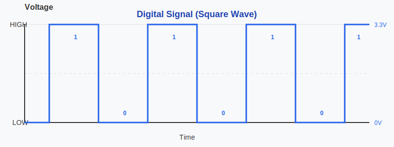When you use a digital pin on your microcontroller, you can only output these two values. If you write HIGH to a pin, it outputs 3.3V. If you write LOW, it outputs 0V. You cannot tell a digital pin to output 1.5V or 2.7V or any value in between.
Analog Signals
An analog signal can have any voltage value within a range. Instead of just ON or OFF, it varies continuously and smoothly. Think of it like a dimmer switch that can set brightness anywhere from completely off to fully bright, with infinite positions in between.

For example, an analog signal could be 0V, 0.5V, 1.5V, 2.8V, 3.1V, or any other value within the allowed range. This smooth variation allows you to have precise control over devices.
The Problem
Here’s the challenge: most microcontroller pins are digital. They can only output HIGH or LOW. But what if you want to:
Dim an LED to 50% brightness instead of just fully ON or fully OFF (like we did in the quick-start blinking example)? Or Control a servo motor to any position between 0° and 180°? Or Adjust the speed of a fan or control temperature gradually?
You need something that acts like an analog output, but you only have digital pins. This is where PWM comes in.
Pulse Width Modulation (PWM)
PWM stands for Pulse Width Modulation. It’s a technique that uses a digital signal switching rapidly between HIGH and LOW to simulate an analog output.
Instead of providing a steady voltage like 1.5V as a true analog signal would, PWM quickly toggles between full voltage and 0V. By controlling how long the signal stays HIGH versus LOW, you can control the average power or voltage delivered to the device.
How PWM Works
PWM works by sending a square wave signal that switches between HIGH and LOW at a fixed frequency. The key parameter is the “duty cycle”, which is the percentage of time the signal is HIGH during one complete cycle.

For example:
- A 0% duty cycle means the signal is always LOW (0V average).
- A 50% duty cycle means the signal is HIGH and LOW for equal amounts of time (1.65V average on a 3.3 system).
- A 75% duty cycle means the signal is HIGH for 75% of the time and LOW for 25% of the time.
- A 100% duty cycle means the signal is always HIGH (3.3V).
The switching happens extremely fast, typically hundreds or thousands of times per second. This is so fast that devices like LEDs and motors respond to the average voltage rather than seeing individual pulses.
Example Usage: Dimming an LED
An LED flashes so quickly that your eyes can’t see individual ON and OFF pulses, so you perceive only the average brightness. A low duty cycle makes it look dim, a higher one makes it look brighter, even though the LED is always switching between full voltage and zero.
Example Usage: Controlling a Servo Motor
A servo reads the width of a pulse to decide its angle. It expects a pulse every 20 milliseconds, and the pulse width - about 1ms for 0°, 1.5ms for 90°, and 2ms for 180° - tells the servo where to move.
Period and Frequency
In PWM, period and frequency work together to determine how fast the signal switches between HIGH and LOW states, which directly affects how smooth and effective your control is.
Period is the total time for one on-off cycle to complete.

The frequency is the number of cycles it completes in one second, measured in Hertz (Hz). Frequency is the inverse of the period. So, a higher frequency means a shorter period, resulting in faster switching between HIGH and LOW states.
\[ \text{Frequency (Hz)} = \frac{1}{\text{Period (s)}} \]
So if the period is 1 second, then the frequency will be 1HZ.
\[ 1 \text{Hz} = \frac{1 \text{ cycle}}{1 \text{ second}} = \frac{1}{1 \text{ s}} \]
For example, if the period is 20ms(0.02s), the frequency will be 50Hz.
\[ \text{Frequency} = \frac{1}{20 \text{ ms}} = \frac{1}{0.02 \text{ s}} = 50 \text{ Hz} \]
Calculating Cycle count from Frequency per second
The Formula to calculate cycle count:
\[
\text{Cycle Count} = \text{Frequency (Hz)} \times \text{Total Time (seconds)}
\]
If a PWM signal has a frequency of 50Hz, it means it completes 50 cycles in one second.
Simulation
Here is the interactive simulation. Use the sliders to adjust the duty cycle and frequency, and watch how the pulse width and LED brightness change. The upper part of the square wave represents when the signal is high (on). The lower part represents when the signal is low (off). The width of the high portion changes with the duty cycle.
If you change the duty cycle from “low to high” and “high to low” in the simulation, you should notice the LED kind of giving a dimming effect.
PWM in Depth
Timer Operation
The timer plays a key role in PWM generation. It counts from zero to a specified maximum value (stored in a register), then resets and starts the cycle over. This counting process determines the duration of one complete cycle, called the period.
Compare Value
The timer’s hardware continuously compares its current count with a compare value (stored in a register). When the count is less than the compare value, the PWM signal stays HIGH; when the count exceeds the compare value, the signal goes LOW. By changing this compare value, you directly control the duty cycle.
PWM Resolution
Resolution refers to how precisely the duty cycle can be controlled. This is determined by the range of values the timer counts through in one complete cycle.
The timer counts from 0 to a maximum value based on the resolution. The higher the resolution, the more finely the duty cycle can be adjusted.
For a system with n bits of resolution, the timer counts from 0 to \(2^n - 1\), which gives \(2^n\) possible levels for the duty cycle.
For example:
- 8-bit resolution allows the timer to count from 0 to 255, providing 256 possible duty cycle levels.
- 10-bit resolution allows the timer to count from 0 to 1023, providing 1024 possible duty cycle levels.
Higher resolution gives more precise control over the duty cycle but requires the timer to count through more values within the same period. This creates a trade-off: to maintain the same frequency with higher resolution, you need a faster timer clock, or you must accept a lower frequency.
Simulation
You can modify the PWM resolution bits and duty cycle in this simulation. Adjusting the PWM resolution bits increases the maximum count but remains within the time period (it does not affect the duty cycle). Changing the duty cycle adjusts the on and off states accordingly, but it also stays within the period.
Relationship Between Duty Cycle, Frequency, and Resolution
This diagram shows how duty cycle, frequency, period, pulse width, and resolution work together in PWM generation. While it may seem a bit complex at first glance, breaking it down helps to clarify these concepts.
In this example, the timer resolution is 4 bits, meaning the timer counts from 0 to 15 (16 possible values). When the timer reaches its maximum value(i.e 15), an overflow interrupt is triggered (indicated by the blue arrow), and the counter resets to 0. The time it takes for the timer to count from 0 to its maximum value is called as “period”.
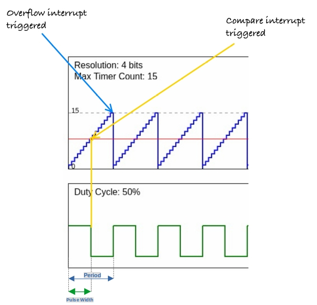The duty cycle is configured to 50%, meaning the signal remains high for half the period. At each step in the counting process, the timer compares its current count with the duty cycle’s compare value. When the timer count exceeds this compare value (marked by the yellow arrow), the signal transitions from high to low. This triggers the compare interrupt, signaling the state change.
The time during which the signal is high is referred to as the pulse width.
PWM Peripheral in RP2350
The RP2350 has a PWM peripheral with 12 PWM generators called slices. Each slice contains two output channels (A and B), giving you a total of 24 PWM output channels. For detailed specifications, see page 1076 of the RP2350 Datasheet.
Let’s have a quick look at some of the key concepts.
PWM Generator (Slice)
A slice is the hardware block that generates PWM signals. Each of the 12 slices (PWM0–PWM11) is an independent timing unit with its own 16-bit counter, compare registers, control settings, and clock divider. This independence means you can configure each slice with different frequencies and resolutions.
Channel
Each slice contains two output channels: Channel A and Channel B. Both channels share the same counter, so they run at the same frequency and are synchronized. However, each channel has its own compare register, allowing independent duty cycle control. This lets you generate two related but distinct PWM signals from a single slice.
Mapping of PWM channels to GPIO Pins
Each GPIO pin connects to a specific slice and channel. You’ll find the complete mapping table on page 1078 of the RP2350 Datasheet. For example, GP25 (the onboard LED pin) maps to PWM slice 4, channel B, labeled as 4B.

Initialize the PWM peripheral and get access to all slices:
#![allow(unused)]
fn main() {
let mut pwm_slices = hal::pwm::Slices::new(pac.PWM, &mut pac.RESETS);
}Get a reference to PWM slice 4 for configuration:
#![allow(unused)]
fn main() {
let pwm = &mut pwm_slices.pwm4;
}GPIO to PWM
I have created a small form that helps you figure out which GPIO pin maps to which PWM channel and also generates sample code.
Phase-Correct Mode
In standard PWM (fast PWM), the counter counts up from 0 to TOP, then immediately resets to 0. This creates asymmetric edges where the output changes at different points in the cycle.
Phase-correct PWM counts up to TOP, then counts back down to 0, creating a triangular waveform. The output switches symmetrically - once going up and once coming down. This produces centered pulses with edges that mirror each other, reducing electromagnetic interference and creating smoother transitions. The trade-off is that phase-correct mode runs at half the frequency of standard PWM for the same TOP value.
Configure PWM4 to operate in phase-correct mode for smoother output transitions.
#![allow(unused)]
fn main() {
pwm.set_ph_correct();
}Get a mutable reference to channel B of PWM4 and direct its output to GPIO pin 25.
#![allow(unused)]
fn main() {
let channel = &mut pwm.channel_b;
channel.output_to(pins.gpio25);
}Dimming LED
In this section, we will learn how to create a dimming effect(i.e. reducing and increasing the brightness gradually) for an LED using the Raspberry Pi Pico 2. First, we will dim the onboard LED, which is connected to GPIO pin 25 (based on the datasheet).
To make it dim, we use a technique called PWM (Pulse Width Modulation). You can refer to the intro to the PWM section here.
We will gradually increment the PWM’s duty cycle to increase the brightness, then we gradually decrement the PWM duty cycle to reduce the brightness of the LED. This effectively creates the dimming LED effect.
The Eye
“ Come in close… Closer…
Because the more you think you see… The easier it’ll be to fool you…
Because, what is seeing?…. You’re looking but what you’re really doing is filtering, interpreting, searching for meaning… “
Here’s the magic: when this switching happens super quickly, our eyes can’t keep up. Instead of seeing the blinking, it just looks like the brightness changes! The longer the LED stays ON, the brighter it seems, and the shorter it’s ON, the dimmer it looks. It’s like tricking your brain into thinking the LED is smoothly dimming or brightening.
Core Logic
What we will do in our program is gradually increase the duty cycle from a low value to a high value in the first loop, with a small delay between each change. This creates the fade-in effect. After that, we run another loop that decreases the duty cycle from high to low, again with a small delay. This creates the fade-out effect.
You can use the onboard LED, or if you want to see the dimming more clearly, use an external LED. Just remember to update the PWM slice and channel to match the GPIO pin you are using.
Simulation - LED Dimming with PWM
Here is a simulation to show the dimming effect on an LED based on the duty cycle and the High and Low parts of the square wave. I set the default speed very slow so it is clear and not annoying to watch. To start it, click the “Start animation” button. You can increase the speed by reducing the delay time and watching the changes.
LED Dimming on Raspberry Pi Pico with Embassy
Let’s create a dimming LED effect using PWM on the Raspberry Pi Pico with Embassy.
Generate project using cargo-generate
By now you should be familiar with the steps. We use the cargo-generate command with our custom template, and when prompted, select Embassy as the HAL.
cargo generate --git https://github.com/ImplFerris/pico2-template.git --tag v0.3.1
Update Imports
Add the import below to bring the PWM types into scope:
#![allow(unused)]
fn main() {
use embassy_rp::pwm::{Pwm, SetDutyCycle};
}Initialize PWM
Let’s set up the PWM for the LED. Use the first line for the onboard LED, or uncomment the second one if you want to use an external LED on GPIO 16.
#![allow(unused)]
fn main() {
// For Onboard LED
let mut pwm = Pwm::new_output_b(p.PWM_SLICE4, p.PIN_25, Default::default());
// For external LED connected on GPIO 16
// let mut pwm = Pwm::new_output_a(p.PWM_SLICE0, p.PIN_16, Default::default());
}Main logic
In the main loop, we create the fade effect by increasing the duty cycle from 0 to 100 percent and then bringing it back down. The small delay between each step makes the dimming smooth. You can adjust the delay and observe how the fade speed changes.
#![allow(unused)]
fn main() {
loop {
for i in 0..=100 {
Timer::after_millis(8).await;
let _ = pwm.set_duty_cycle_percent(i);
}
for i in (0..=100).rev() {
Timer::after_millis(8).await;
let _ = pwm.set_duty_cycle_percent(i);
}
Timer::after_millis(500).await;
}
}The full code
#![no_std]
#![no_main]
use embassy_executor::Spawner;
use embassy_rp as hal;
use embassy_rp::block::ImageDef;
use embassy_rp::pwm::{Pwm, SetDutyCycle};
use embassy_time::Timer;
//Panic Handler
use panic_probe as _;
// Defmt Logging
use defmt_rtt as _;
/// Tell the Boot ROM about our application
#[unsafe(link_section = ".start_block")]
#[used]
pub static IMAGE_DEF: ImageDef = hal::block::ImageDef::secure_exe();
#[embassy_executor::main]
async fn main(_spawner: Spawner) {
let p = embassy_rp::init(Default::default());
// For Onboard LED
let mut pwm = Pwm::new_output_b(p.PWM_SLICE4, p.PIN_25, Default::default());
// For external LED connected on GPIO 16
// let mut pwm = Pwm::new_output_a(p.PWM_SLICE0, p.PIN_16, Default::default());
loop {
for i in 0..=100 {
Timer::after_millis(8).await;
let _ = pwm.set_duty_cycle_percent(i);
}
for i in (0..=100).rev() {
Timer::after_millis(8).await;
let _ = pwm.set_duty_cycle_percent(i);
}
Timer::after_millis(500).await;
}
}
// Program metadata for `picotool info`.
// This isn't needed, but it's recomended to have these minimal entries.
#[unsafe(link_section = ".bi_entries")]
#[used]
pub static PICOTOOL_ENTRIES: [embassy_rp::binary_info::EntryAddr; 4] = [
embassy_rp::binary_info::rp_program_name!(c"led-dimming"),
embassy_rp::binary_info::rp_program_description!(c"your program description"),
embassy_rp::binary_info::rp_cargo_version!(),
embassy_rp::binary_info::rp_program_build_attribute!(),
];
// End of fileClone the existing project
You can clone the project I created and navigate to the external-led folder:
git clone https://github.com/ImplFerris/pico2-embassy-projects
cd pico2-embassy-projects/led-dimming
Dimming LED Program with RP HAL
rp-hal is an Embedded-HAL for RP series microcontrollers, and can be used as an alternative to the Embassy framework for pico.
This example code is taken from rp235x-hal repo (It also includes additional examples beyond just the blink examples):
“https://github.com/rp-rs/rp-hal/tree/main/rp235x-hal-examples”
The main code
#![no_std]
#![no_main]
use embedded_hal::delay::DelayNs;
use hal::block::ImageDef;
use rp235x_hal as hal;
// Traig for PWM
use embedded_hal::pwm::SetDutyCycle;
//Panic Handler
use panic_probe as _;
// Defmt Logging
use defmt_rtt as _;
/// Tell the Boot ROM about our application
#[unsafe(link_section = ".start_block")]
#[used]
pub static IMAGE_DEF: ImageDef = hal::block::ImageDef::secure_exe();
/// External high-speed crystal on the Raspberry Pi Pico 2 board is 12 MHz.
/// Adjust if your board has a different frequency
const XTAL_FREQ_HZ: u32 = 12_000_000u32;
/// The minimum PWM value (i.e. LED brightness) we want
const LOW: u16 = 0;
/// The maximum PWM value (i.e. LED brightness) we want
const HIGH: u16 = 25000;
#[hal::entry]
fn main() -> ! {
// Grab our singleton objects
let mut pac = hal::pac::Peripherals::take().unwrap();
// Set up the watchdog driver - needed by the clock setup code
let mut watchdog = hal::Watchdog::new(pac.WATCHDOG);
// Configure the clocks
//
// The default is to generate a 125 MHz system clock
let clocks = hal::clocks::init_clocks_and_plls(
XTAL_FREQ_HZ,
pac.XOSC,
pac.CLOCKS,
pac.PLL_SYS,
pac.PLL_USB,
&mut pac.RESETS,
&mut watchdog,
)
.ok()
.unwrap();
// The single-cycle I/O block controls our GPIO pins
let sio = hal::Sio::new(pac.SIO);
// Set the pins up according to their function on this particular board
let pins = hal::gpio::Pins::new(
pac.IO_BANK0,
pac.PADS_BANK0,
sio.gpio_bank0,
&mut pac.RESETS,
);
// Init PWMs
let mut pwm_slices = hal::pwm::Slices::new(pac.PWM, &mut pac.RESETS);
// Configure PWM4
let pwm = &mut pwm_slices.pwm4;
pwm.set_ph_correct();
pwm.enable();
// Output channel B on PWM4 to GPIO 25
let channel = &mut pwm.channel_b;
channel.output_to(pins.gpio25);
let mut timer = hal::Timer::new_timer0(pac.TIMER0, &mut pac.RESETS, &clocks);
loop {
for i in LOW..=HIGH {
timer.delay_us(8);
let _ = channel.set_duty_cycle(i);
}
for i in (LOW..=HIGH).rev() {
timer.delay_us(8);
let _ = channel.set_duty_cycle(i);
}
timer.delay_ms(500);
}
}
// Program metadata for `picotool info`.
// This isn't needed, but it's recomended to have these minimal entries.
#[unsafe(link_section = ".bi_entries")]
#[used]
pub static PICOTOOL_ENTRIES: [hal::binary_info::EntryAddr; 5] = [
hal::binary_info::rp_cargo_bin_name!(),
hal::binary_info::rp_cargo_version!(),
hal::binary_info::rp_program_description!(c"your program description"),
hal::binary_info::rp_cargo_homepage_url!(),
hal::binary_info::rp_program_build_attribute!(),
];
// End of fileClone the existing project
You can clone the blinky project I created and navigate to the led-dimming folder to run this version of the blink program:
git clone https://github.com/ImplFerris/pico2-rp-projects
cd pico2-projects/led-dimming
Creating a Rust Project for Raspberry Pi Pico in VS Code (with extension)
We’ve already created the Rust project for the Pico manually and through the template. Now we are going to try another approach: using the Raspberry Pi Pico extension for VS Code.
Using the Pico Extension
In Visual Studio Code, search for the extension “Raspberry Pi Pico” and ensure you’re installing the official one; it should have a verified publisher badge with the official Raspberry Pi website. Install that extension.

Just installing the extension might not be enough though, depending on what’s already on your machine. On Linux, you’ll likely need some basic dependencies:
sudo apt install build-essential libudev-dev
Create Project
Let’s create the Rust project with the Pico extension in VS Code. Open the Activity Bar on the left and click the Pico icon. Then choose “New Rust Project.”

Since this is the first time setting up, the extension will download and install the necessary tools, including the Pico SDK, picotool, OpenOCD, and the ARM and RISC-V toolchains for debugging.
Project Structure
If the project was created successfully, you should see folders and files like this:

Running the Program
Now you can simply click “Run Project (USB)” to flash the program onto your Pico and run it. Don’t forget to press the BOOTSEL button when connecting your Pico to your computer. Otherwise, this option will be in disabled state.
.png)
Once flashing is complete, the program will start running immediately on your Pico. You should see the onboard LED blinking.
按钮
既然我们已经知道如何闪烁 LED，让我们来学习如何读取按钮输入。这将使我们能够与 Raspberry Pi Pico 交互，并让我们的程序对我们的操作做出响应。

按钮是一个小的轻触开关。你会在大多数初学者电子套件中找到这些。当你按下它时，内部的两个引脚接触，电路闭合。当你松开它时，引脚分离，电路再次断开。你的程序可以读取这种开或关的状态，并据此执行某些操作。
轻触按钮如何工作
轻触按钮有四个引脚，成对排列。从上方看按钮，引脚形成一个矩形。按钮每侧的两个引脚在内部是电气连接的。

我稍后会更新这一部分，提供更清晰的图表，更明确地显示内部连接。目前，这个插图足以理解这个概念。浅色线表示左侧的引脚彼此连接，右侧的引脚也是如此。当按下按钮时，左侧和右侧连接在一起。
将按钮连接到 Pico
将按钮的一侧连接到接地（Ground），另一侧连接到通用输入输出（GPIO）引脚（例如 GPIO 15）。当按下按钮时，两侧在内部连接，GPIO 15 引脚被拉低。我们可以在代码中检查引脚是否被拉低，并据此触发动作。

等等。当按钮未被按下时会发生什么？GPIO 引脚现在读取的是什么电压或电平？为了在逻辑上讲得通，引脚应该处于高电平（High）状态，这样我们才能将低电平（Low）状态检测为按钮按下。但是，如果电路中没有其他东西，GPIO 引脚将处于所谓的浮动状态（floating state）。这是不可靠的，即使没有按下按钮，引脚也可能随机地在高电平及低电平之间切换。我们该如何解决这个问题？让我们在下一节中看看。
Pull-up and Pull-down Resistors
When working with buttons, switches, and other digital inputs on your Raspberry Pi Pico, you’ll quickly encounter a curious problem: what happens when nothing is connected to an input pin? The answer might surprise you; the pin becomes “floating,” picking up electrical noise and giving you random, unpredictable readings. This is where pull-up and pull-down resistors come to the rescue.
The Floating Pin Problem
Imagine you connect a button directly to a GPIO pin on your Pico. When the button is pressed, it connects the pin to ground (0V). When released, you might expect the pin to read as HIGH, but it doesn’t work that way. Instead, the pin is disconnected from everything. It’s floating in an undefined state, acting like an antenna that picks up electrical noise from nearby circuits, your hand, or even radio waves in the air.
This floating state will cause your code to read random values, making your button appear to press itself or behave erratically. We need a way to give the pin a default, predictable state.
By the way, you can also connect the button the other way around; connecting one side to 3.3V instead of ground (though I wouldn’t recommend this for the RP2350, and I’ll explain why shortly). However, you’ll face the same issue. When the button is pressed, it connects to the High state. When released, you might expect it to go Low, but instead it’s in a floating state again.
What Are Pull-up and Pull-down Resistors?
Pull-up and pull-down resistors are simple solutions that ensure a pin always has a known voltage level, even when nothing else is driving it.
Pull-up resistor: Connects the pin to the positive voltage (3.3V on the Pico) through a resistor. This “pulls” the pin HIGH by default. When you press a button that connects the pin to ground, the pin reads LOW.
Pull-down resistor: Connects the pin to ground (0V) through a resistor. This “pulls” the pin LOW by default. When you press a button that connects the pin to 3.3V, the pin reads HIGH.
How Pull-up Resistors Work
Let’s look at a typical button circuit with a pull-up resistor:

When the button is not pressed, current flows through the resistor to the GPIO pin, holding it at 3.3V (HIGH). When you press the button, you create a direct path to ground. Since electricity follows the path of least resistance, current flows through the button to ground instead of to the pin, and the pin reads LOW.
How Pull-down Resistors Work
A pull-down resistor works in the opposite direction:W
When the button is not pressed, the GPIO pin is connected to ground through the resistor, reading LOW. When pressed, the button connects the pin directly to 3.3V, and the pin reads HIGH.
Internal Pull Resistors
The Raspberry Pi Pico has built-in pull-up and pull-down resistors on every GPIO pin. You don’t need to add external resistors for basic button inputs. You can enable them in software.
Using Pull Resistors in Embedded Rust
Let’s see how to configure internal pull resistors when setting up a button input on the Pico.
As you can see in the diagram, when we enable the internal pull-up resistor, the GPIO pin is pulled to 3.3V by default. The resistor sits inside the Pico chip itself, so we don’t need any external components; just the button connected between the GPIO pin and ground.
Here’s how to set it up in code:
#![allow(unused)]
fn main() {
let button = Input::new(p.PIN_16, Pull::Up);
// Read the button state
if button.is_low() {
// Button is pressed (connected to ground)
// Do something
}
}With a pull-up resistor enabled, the GPIO pin gets pulled to HIGH voltage by default. When you press the button, it connects the pin to ground, and brings the pin LOW. So the logic is: button not pressed = HIGH, button pressed = LOW.
Setting up a Button with a Pull-down Resistor
Here’s similar code, but this time we use the internal pull-down resistor. With pull-down, the pin is pulled LOW by default. When the button is pressed, connecting the pin to 3.3V, it reads HIGH.
#![allow(unused)]
fn main() {
let button = Input::new(p.PIN_16, Pull::Down);
// Read the button state
if button.is_high() {
// Button is pressed (connected to 3.3V)
// Do something
}
}Note: There’s a hardware bug (E9) in the initial RP2350 chip released in 2024 that affects internal pull-down resistors.
The bug causes the GPIO pin to read HIGH even when the button isn’t pressed, which is the opposite of what should happen. You can read more about this issue in this blog post.
The bug was fixed in the newer RP2350 A4 chip revision. If you’re using an older chip, avoid using
Pull::Downin your code. Instead, you can use an external pull-down resistor and setPull::Nonein the code.
With a pull-down resistor enabled, the button should connect to 3.3V when pressed. The pin reads LOW when not pressed, and HIGH when pressed.
Using a Floating Input
You can also configure a pin without any internal pull resistor:
#![allow(unused)]
fn main() {
let button = Input::new(p.PIN_16, Pull::None);
}However, as we discussed earlier, floating inputs are unreliable for buttons because they pick up electrical noise and read random values. This option is only useful when you have an external pull-up or pull-down resistor in your circuit, or when connecting to devices that actively drive the pin HIGH or LOW (like some sensors).
LED on Button Press
Let’s build a simple project that turns on an LED whenever the button is pressed. You can use an external LED or the built in LED. Just change the LED pin number in the code to match the one you are using.
We will start by creating a new project with cargo generate and our template.
In your terminal, type:
cargo generate --git https://github.com/ImplFerris/pico2-template.git --tag v0.3.1
Button as Input
So far, we’ve been using the Output struct because our Pico was sending signals to the LED. This time, the Pico will receive a signal from the button, so we’ll configure it as an Input.
#![allow(unused)]
fn main() {
let button = Input::new(p.PIN_15, Pull::Up);
}We’ve connected one side of the button to GPIO 15. The other side is connected to Ground. This means when we press the button, the pin gets pulled to the LOW state. As we discussed earlier, without a pull resistor, the input would be left in a floating state and read unreliable values. So we enable the internal pull-up resistor to keep the pin HIGH by default.
Led as Output
We configure the LED pin as an output, starting in the LOW state (off). If you’re using an external LED, uncomment the first line for GPIO 16. If you’re using the Pico’s built-in LED, use GPIO 25 as shown. Just make sure your circuit matches whichever pin you choose.
#![allow(unused)]
fn main() {
// let mut led = Output::new(p.PIN_16, Level::Low);
let mut led = Output::new(p.PIN_25, Level::Low);
}Main loop
Now in a loop, we constantly check if the button is pressed by testing whether it’s in the LOW state. We add a small 5-millisecond delay between checks to avoid overwhelming the system. When the button reads LOW (pressed), we set the LED pin HIGH to turn it on, then wait for 3 seconds so we can visually observe it. You can adjust this delay to your preference.
#![allow(unused)]
fn main() {
loop {
if button.is_low() {
defmt::info!("Button pressed");
led.set_high();
Timer::after_secs(3).await;
} else {
led.set_low();
}
Timer::after_millis(5).await;
}
}Debounce: If you reduce the delay, you might notice that sometimes a single button press triggers multiple detections. This is called “button bounce”. When you press a physical button, the metal contacts inside briefly bounce against each other, creating multiple electrical signals in just a few milliseconds. In this example, the 3-second LED delay effectively masks any bounce issues, but in applications where you need to count individual button presses accurately, you’ll need debouncing logic.
We also log “Button pressed” using defmt. If you’re using a debug probe, use the cargo embed --release command to see these logs in your terminal.
The Full code
#![no_std]
#![no_main]
use embassy_executor::Spawner;
use embassy_rp::block::ImageDef;
use embassy_rp::gpio::Pull;
use embassy_rp::{
self as hal,
gpio::{Input, Level, Output},
};
use embassy_time::Timer;
//Panic Handler
use panic_probe as _;
// Defmt Logging
use defmt_rtt as _;
/// Tell the Boot ROM about our application
#[unsafe(link_section = ".start_block")]
#[used]
pub static IMAGE_DEF: ImageDef = hal::block::ImageDef::secure_exe();
#[embassy_executor::main]
async fn main(_spawner: Spawner) {
let p = embassy_rp::init(Default::default());
let button = Input::new(p.PIN_15, Pull::Up);
// let mut led = Output::new(p.PIN_16, Level::Low);
let mut led = Output::new(p.PIN_25, Level::Low);
loop {
if button.is_low() {
defmt::info!("Button pressed");
led.set_high();
Timer::after_secs(3).await;
} else {
led.set_low();
}
Timer::after_millis(5).await;
}
}
// Program metadata for `picotool info`.
// This isn't needed, but it's recomended to have these minimal entries.
#[unsafe(link_section = ".bi_entries")]
#[used]
pub static PICOTOOL_ENTRIES: [embassy_rp::binary_info::EntryAddr; 4] = [
embassy_rp::binary_info::rp_program_name!(c"button"),
embassy_rp::binary_info::rp_program_description!(c"your program description"),
embassy_rp::binary_info::rp_cargo_version!(),
embassy_rp::binary_info::rp_program_build_attribute!(),
];
// End of fileClone the existing project
You can clone (or refer) project I created and navigate to the button folder.
git clone https://github.com/ImplFerris/pico2-embassy-projects
cd pico2-embassy-projects/button
Voltage Divider
A voltage divider is a simple circuit that reduces a higher input voltage to a lower output voltage using two resistors connected in series. You might need a voltage divider from time to time when working with sensors or modules that output higher voltages than your microcontroller can safely handle.
The resistor connected to the input voltage is called \( R_{1} \), and the resistor connected to ground is called \( R_{2} \). The output voltage \( V_{out} \) is measured at the point between \( R_{1} \) and \( R_{2} \), and it will be a fraction of the input voltage \( V_{in} \).
Circuit

The output voltage (Vout) is calculated using this formula:
\[ V_{out} = V_{in} \times \frac{R_2}{R_1 + R_2} \]
Example Calculation for \( V_{out} \)
Given:
- \( V_{in} = 3.3V \)
- \( R_1 = 10 k\Omega \)
- \( R_2 = 10 k\Omega \)
Substitute the values:
\[ V_{out} = 3.3V \times \frac{10 k\Omega}{10 k\Omega + 10 k\Omega} = 3.3V \times \frac{10}{20} = 3.3V \times 0.5 = 1.65V \]
The output voltage \( V_{out} \) is 1.65V.
fn main() {
// You can edit the code
// You can modify values and run the code
let vin: f64 = 3.3;
let r1: f64 = 10000.0;
let r2: f64 = 10000.0;
let vout = vin * (r2 / (r1 + r2));
println!("The output voltage Vout is: {:.2} V", vout);
}Use cases
Voltage dividers are used in applications like potentiometers, where the resistance changes as the knob is rotated, adjusting the output voltage. They are also used to measure resistive sensors such as light sensors and thermistors, where a known voltage is applied, and the microcontroller reads the voltage at the center node to determine sensor values like temperature.
Voltage Divider Simulation
Formula: Vout = Vin × (R2 / (R1 + R2))
Filled Formula: Vout = 3.3 × (10000 / (10000 + 10000))
Output Voltage (Vout): 1.65 V
Simulator in Falstad website
I used the website https://www.falstad.com/circuit/ to create the diagram. It’s a great tool for drawing circuits. You can download the file I created, voltage-divider.circuitjs.txt, and import it to experiment with the circuit.
Bat Beacon: Distance Sensor Project 🦇
If you’ve seen the Batman Begins movie, you’ll remember the scene where Batman uses a device that emits ultrasonic signals to summon a swarm of bats. It’s one of the coolest gadgets in his arsenal! While we won’t be building a bat-summoning beacon today, we will be working with the similar ultrasonic technology.
Ultrasonic
Ultrasonic waves are sound waves with frequencies above 20,000 Hz, beyond what human ears can detect. But many animals can. Bats use ultrasonic waves to fly in the dark and avoid obstacles. Dolphins use them to communicate and to sense objects underwater.
Ultrasonic Technology Around You
Humans have borrowed this natural sonar principle for everyday inventions:
- Car parking sensors use ultrasonic sensors to detect obstacles when you reverse. As you get closer to an object, the beeping gets faster.
- Submarines use sonar to navigate and detect underwater objects
- Medical ultrasound allows doctors to see inside the human body
- Automatic doors and robot navigation rely on ultrasonic distance sensing
Today, you’ll build your own distance sensor using an ultrasonic module; sending out sound waves, measuring how long they take to bounce back, and calculating distance.
Meet the Hardware
The HC-SR04+ is a simple and low cost ultrasonic distance sensor. It can measure distances from about 2 cm up to 400 cm. It works by sending out a short burst of ultrasonic sound and then listening for the echo. By measuring how long the echo takes to return, the sensor can calculate how far the object is.
Important Note about Variants:
The HC-SR04 normally operates at 5V, which can be problematic for the Raspberry Pi Pico. If possible, purchase the HC-SR04+ version, which works with both 3.3V and 5V, making it more suitable for the Pico.
Why This Matters: The HC-SR04’s Echo pin outputs a 5V signal, but the Pico’s GPIO pins can only safely handle 3.3V. Connecting 5V directly to the Pico could damage it.
Your Options:
- Buy the HC-SR04+ variant (recommended and easiest solution)
- Use a voltage divider on the Echo pin to reduce the 5V signal to 3.3V
- Use a logic level converter to safely step down the voltage
- Power the HC-SR04 with 3.3V (not recommended, as it may work unreliably or not at all)
In this project, we’ll build a proximity detector that gradually brightens an LED as objects get closer. When the sensor detects something within 30 cm, the LED will glow brighter using PWM. You can change the distance value if you want to try different ideas.

Prerequisites
Before starting, get familiar with yourself on these topics
Hardware Requirements
To complete this project, you will need:
- HC-SR04+ or HC-SR04 Ultrasonic Sensor
- Breadboard
- Jumper wires
- External LED (You can also use the onboard LED, but you’ll need to modify the code accordingly)
- If you are using the standard HC-SR04 module that operates at 5V, you will need two resistors (1kΩ and 2kΩ or 2.2kΩ) to form a voltage divider.
The HC-SR04 Sensor module has a transmitter and receiver. The module has Trigger and Echo pins which can be connected to the GPIO pins of a pico. When the receiver detects the returning sound wave, the Echo pin goes HIGH for a duration equal to the time it takes for the wave to return to the sensor.
Datasheet
Most electronic components come with a datasheet. It’s a technical document that tells you everything you need to know about how the component works, its electrical characteristics, and how to use it properly.
For the HC-SR04 ultrasonic sensor, you can find the datasheet here: https://cdn.sparkfun.com/datasheets/Sensors/Proximity/HCSR04.pdf
Datasheets can look intimidating at first with all their technical specifications and diagrams, but you don’t need to understand everything in them.
How Does an Ultrasonic Sensor Work?
Ultrasonic sensors work by emitting sound waves at a frequency too high (40kHz) for humans to hear. These sound waves travel through the air and bounce back when they hit an object. The sensor calculates the distance by measuring how long it takes for the sound waves to return.

- Transmitter: Sends out ultrasonic sound waves.
- Receiver: Detects the sound waves that bounce back from an object.
Formula to calculate distance:
Distance = (Time x Speed of Sound) / 2
The speed of sound is approximately 0.0343 cm/µs (or 343 m/s) at normal air pressure and a temperature of 20°C.
Example Calculation:
Let’s say the ultrasonic sensor detects that the sound wave took 2000 µs to return after hitting an object.
Step 1: Calculate the total distance traveled by the sound wave:
Total distance = Time x Speed of Sound
Total distance = 2000 µs x 0.0343 cm/µs = 68.6 cm
Step 2: Since the sound wave traveled to the object and back, the distance to the object is half of the total distance:
Distance to object = 68.6 cm / 2 = 34.3 cm
Thus, the object is 34.3 cm away from the sensor.
HC-SR04 Pinout
The module has four pins: VCC, Trig, Echo, and GND.
| Pin | Function |
|---|---|
| VCC | Power Supply |
| Trig | Trigger Signal |
| Echo | Echo Signal |
| GND | Ground |
Measuring Distance with the HC-SR04 module
The HC-SR04 module has a transmitter and receiver, responsible for sending ultrasonic waves and detecting the reflected waves. We will use the Trig pin to send sound waves. And read from the Echo pin to measure the distance.
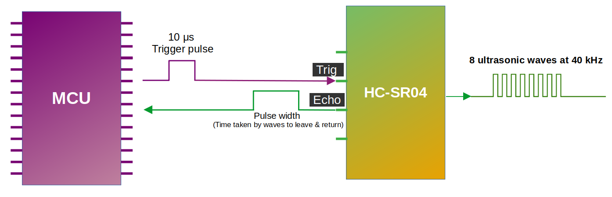As you can see in the diagram, we connect the Trig and Echo pins to the GPIO pins of the microcontroller (we also connect VCC and GND but left them out to keep the illustration simple). We send ultrasonic waves by setting the Trig pin HIGH for 10 microseconds and then setting it back to LOW. This triggers the module to send 8 consecutive ultrasonic waves at a frequency of 40 kHz. It is recommended to have a minimum gap of 50ms between each trigger.
When the sensor’s waves hit an object, they bounce back to the module. As you can see in the diagram, the Echo pin changes the signal sent to the microcontroller, with the length of time the signal stays HIGH (pulse width) corresponding to the distance. In the microcontroller, we measure how long the Echo pin stays HIGH; Then, we can use this time duration to calculate the distance to the object.
Pulse width and the distance:
The pulse width (amount of time it stays high) produced by the Echo pin will range from about 150µs to 25,000µs(25ms); this is only if it hits an object. If there is no object, it will produce a pulse width of around 38ms.
Wiring the HC-SR04 to the Pico 2 Using a Voltage Divider
If you are using the regular HC-SR04 like I am, you will need to create a voltage divider for the Echo pin. In this section we will look at how to set up the circuit. However, if you are lucky and you bought the HC-SR04 Plus, you can skip to the next page. The circuit becomes much simpler because you can power the sensor with 3.3 V instead of 5 V.
Common resistor combination
Below are some resistor pairs you can use to bring the HC-SR04 Echo signal down to about 3.3 V. R1 is the resistor connected to the Echo pin, and R2 is the resistor connected to ground.
| R1 (With Echo) | R2 (With Gnd) | Output Voltage |
|---|---|---|
| 330 Ω | 470 Ω | 2.94 V |
| 330 Ω | 680 Ω | 3.37 V |
| 470 Ω | 680 Ω | 2.96 V |
| 680 Ω | 1 kΩ | 2.98 V |
| 1 kΩ | 1.8 kΩ | 3.21 V |
| 1 kΩ | 2 kΩ | 3.33 V |
| 1 kΩ | 2.2 kΩ | 3.44 V |
| 1.5 kΩ | 2.2 kΩ | 2.97 V |
| 2.2 kΩ | 3.3 kΩ | 3.00 V |
| 3.3 kΩ | 4.7 kΩ | 2.94 V |
| 4.7 kΩ | 6.8 kΩ | 2.96 V |
| 6.8 kΩ | 10 kΩ | 2.98 V |
| 22 kΩ | 33 kΩ | 3.00 V |
| 33 kΩ | 47 kΩ | 2.94 V |
| 47 kΩ | 68 kΩ | 2.96 V |
You can choose any resistor pair from the table because all of them bring the 5 V Echo signal down to a safe level near 3.3 V. In practice it is best to use the values you already have in your kit.
Connection for the Raspberry Pi Pico 2 and Ultrasonic Sensor
| Pico 2 Pin | Wire | HC-SR04 Pin |
|---|---|---|
| VBUS (Pin 40) |
|
VCC |
| GPIO 17 |
|
Trig |
| GPIO 16 (via Voltage Divider) |
|
Echo (through 1kΩ/2.2kΩ divider) |
| GND |
|
GND |
- VCC: Connect the VCC pin on the HC-SR04 to VBUS (Pin 40) on the Pico 2. The HC-SR04 requires 5V power, and VBUS provides 5V from the USB connection.
- Trig: Connect to GPIO 17 on the Pico 2 to trigger the ultrasonic sound pulses.
- Echo: Connect to GPIO 16 on the Pico 2 through a voltage divider (1kΩ resistor from Echo pin, 2kΩ or 2.2kΩ resistor to ground). The junction between the resistors connects to GPIO 16. This divider steps down the 5V Echo signal to ~3.4V, protecting the Pico’s 3.3V GPIO pins.
- GND: Connect to any ground pin on the Pico 2.

Connection for the Pico 2 and LED
| Pico 2 Pin | Wire | Component |
|---|---|---|
| GPIO 3 |
|
Resistor (220Ω-330Ω) |
| Resistor |
|
Anode (long leg) of LED |
| GND |
|
Cathode (short leg) of LED |
Circuit for HC-SR04+
Skip this step if you are using the 5V-only variant of the HC-SR04.
Connection for the Pico and Ultrasonic:
| Pico Pin | Wire | HC-SR04+ Pin |
|---|---|---|
| 3.3V |
|
VCC |
| GPIO 17 |
|
Trig |
| GPIO 16 |
|
Echo |
| GND |
|
GND |
- VCC: Connect the VCC pin on the HC-SR04+ to the 3.3V pin on the Pico.
- Trig: Connect to GPIO 17 on the Pico to start the ultrasonic sound pulses.
- Echo: Connect to GPIO 16 on the Pico; this pin sends a pulse when it detects the reflected signal, and the pulse length shows how long the signal took to return.
- GND: Connect to the ground pin on the Pico.
- LED: Connect the anode (long leg) of the LED to GPIO 3.
Connection for the Pico and LED:
| Pico Pin | Wire | Component |
|---|---|---|
| GPIO 3 |
|
Resistor |
| Resistor |
|
Anode (long leg) of LED |
| GND |
|
Cathode (short leg) of LED |
{kind=link}
Rust Tutorial: Using the HC-SR04 Sensor with the Pico 2
We will start by creating a new project using the Embassy framework. After that, we wll build the same project again using rp-hal. As usual, generate the project from the template with cargo-generate:
cargo generate --git https://github.com/ImplFerris/pico2-template.git --tag v0.3.1
When prompted, give your project a name like “bat-beacon” and choose “embassy” as the HAL. Enable defmt logging, if you have a debug probe so you can view logs also.
Additional Imports
In addition to the usual boilerplate imports, you’ll need to add these specific imports to your project. Your code editor should provide auto-import suggestions for most of these, with the exception of the SetDutyCycle trait which you’ll need to add manually.
#![allow(unused)]
fn main() {
// For GPIO
use embassy_rp::gpio::{Input, Level, Output, Pull};
// For PWM
use embassy_rp::pwm::{Pwm, SetDutyCycle};
// For time calculation
use embassy_time::Instant;
}We need GPIO types to control our trigger and echo pins, PWM to control the LED brightness, and timing utilities to measure the ultrasonic pulse duration.
Mapping GPIO Pins
By now, you should be familiar with PWM from the Dimming LED section. We will create a similar dimming effect here. But there’s a key difference. In the Dimming LED chapter, we made the LED fade in and out repeatedly using conditions. Here, we will increase the LED brightness only when an object gets closer to the sensor.
#![allow(unused)]
fn main() {
// For Onboard LED
// let mut led = Pwm::new_output_b(p.PWM_SLICE4, p.PIN_25, Default::default());
// For external LED connected on GPIO 3
let mut led = Pwm::new_output_b(p.PWM_SLICE1, p.PIN_3, Default::default());
}You can use either the onboard LED or an external LED. I prefer using the external LED. You can see the gradual brightness changes much better.
Next, let’s initialize the LED to be off and get its maximum duty cycle value:
#![allow(unused)]
fn main() {
led.set_duty_cycle(0)
.expect("duty cycle is within valid range");
let max_duty = led.max_duty_cycle();
// defmt::info!("Max duty cycle {}", max_duty);
}The duty cycle determines LED brightness; 0 is completely off, and max_duty is fully on.
Configuring Trigger and Echo Pins
As you know, we have to send a signal to the trigger pin from the Pico, so we’ll configure GPIO pin 17 (connected to the trigger pin) as an Output with an initial Low state. The sensor indicates distance through pulses on the echo pin, meaning it sends signals to the Pico (input to the Pico). So we’ll configure GPIO pin 16 (connected to the echo pin) as an Input.
#![allow(unused)]
fn main() {
let mut trigger = Output::new(p.PIN_17, Level::Low);
let echo = Input::new(p.PIN_16, Pull::Down);
}Converting Distance to LED Brightness
We need a function that converts distance measurements into appropriate duty cycle values. The closer an object is, the higher the duty cycle (brighter the LED):
#![allow(unused)]
fn main() {
const MAX_DISTANCE_CM: f64 = 30.0;
fn calculate_duty_cycle(distance: f64, max_duty: u16) -> u16 {
if distance < MAX_DISTANCE_CM && distance >= 2.0 {
let normalized = (MAX_DISTANCE_CM - distance) / MAX_DISTANCE_CM;
// defmt::info!("duty cycle :{}", (normalized * max_duty as f64) as u16);
(normalized * max_duty as f64) as u16
} else {
0
}
}
}This function takes the measured distance and the maximum duty cycle value. If the distance is between 2cm (the sensor’s minimum range) and 30cm, we normalize it to a 0-1 range and multiply by the maximum duty cycle. Objects closer than 2cm or farther than 30cm result in the LED turning off (duty cycle of 0).
Measuring Distance with the Sensor
We’ll measure distance by sending an ultrasonic pulse and timing how long it takes to return:
#![allow(unused)]
fn main() {
const ECHO_TIMEOUT: Duration = Duration::from_millis(100);
async fn measure_distance(trigger: &mut Output<'_>, echo: &Input<'_>) -> Option<f64> {
// Send trigger pulse
trigger.set_low();
Timer::after_micros(2).await;
trigger.set_high();
Timer::after_micros(10).await;
trigger.set_low();
// Wait for echo HIGH (sensor responding)
let timeout = Instant::now();
while echo.is_low() {
if timeout.elapsed() > ECHO_TIMEOUT {
defmt::warn!("Timeout waiting for HIGH");
return None; // Return early on timeout
}
}
let start = Instant::now();
// Wait for echo LOW (pulse complete)
let timeout = Instant::now();
while echo.is_high() {
if timeout.elapsed() > ECHO_TIMEOUT {
defmt::warn!("Timeout waiting for LOW");
return None; // Return early on timeout
}
}
let end = Instant::now();
// Calculate distance
let time_elapsed = end.checked_duration_since(start)?.as_micros();
let distance = time_elapsed as f64 * 0.0343 / 2.0;
Some(distance)
}
}We begin by setting the trigger pin low for a brief moment, then raising it high for 10 microseconds. This creates the trigger pulse that instructs the sensor to emit an ultrasonic burst. After that, we wait for the Echo pin to rise. The time the Echo pin stays high represents the round-trip travel time of the sound wave. Using this duration, we compute the final distance value and return it.
We have also added a timeout while waiting for the echo pin to change state so the code does not get stuck indefinitely. When the pin fails to respond within the allowed time, we treat the attempt as a failed reading and return None, which lets the rest of the program continue running normally.
The main loop
Finally, let’s create our main loop that continuously reads the sensor and updates the LED:
#![allow(unused)]
fn main() {
loop {
Timer::after_millis(10).await;
let distance = match measure_distance(&mut trigger, &echo).await {
Some(d) => d,
None => {
Timer::after_secs(5).await;
continue; // Skip to next iteration
}
};
let duty_cycle = calculate_duty_cycle(distance, max_duty);
led.set_duty_cycle(duty_cycle)
.expect("duty cycle is within valid range");
}
}Every 10 milliseconds, we measure the distance. If the measurement succeeds, we calculate the appropriate LED brightness and apply it. If it fails (due to timeout or sensor issues), we wait 5 seconds before trying again.
The Full code
Here’s everything put together:
#![no_std]
#![no_main]
use embassy_executor::Spawner;
use embassy_rp as hal;
use embassy_rp::block::ImageDef;
use embassy_time::{Duration, Timer};
//Panic Handler
use panic_probe as _;
// Defmt Logging
use defmt_rtt as _;
// For GPIO
use embassy_rp::gpio::{Input, Level, Output, Pull};
// For PWM
use embassy_rp::pwm::{Pwm, SetDutyCycle};
// For time calculation
use embassy_time::Instant;
/// Tell the Boot ROM about our application
#[unsafe(link_section = ".start_block")]
#[used]
pub static IMAGE_DEF: ImageDef = hal::block::ImageDef::secure_exe();
#[embassy_executor::main]
async fn main(_spawner: Spawner) {
let p = embassy_rp::init(Default::default());
// For Onboard LED
// let mut led = Pwm::new_output_b(p.PWM_SLICE4, p.PIN_25, Default::default());
// For external LED connected on GPIO 3
let mut led = Pwm::new_output_b(p.PWM_SLICE1, p.PIN_3, Default::default());
let mut trigger = Output::new(p.PIN_17, Level::Low);
let echo = Input::new(p.PIN_16, Pull::None);
led.set_duty_cycle(0)
.expect("duty cycle is within valid range");
let max_duty = led.max_duty_cycle();
// defmt::info!("Max duty cycle {}", max_duty);
loop {
Timer::after_millis(10).await;
let distance = match measure_distance(&mut trigger, &echo).await {
Some(d) => d,
None => {
Timer::after_secs(5).await;
continue; // Skip to next iteration
}
};
let duty_cycle = calculate_duty_cycle(distance, max_duty);
led.set_duty_cycle(duty_cycle)
.expect("duty cycle is within valid range");
}
}
const ECHO_TIMEOUT: Duration = Duration::from_millis(100);
async fn measure_distance(trigger: &mut Output<'_>, echo: &Input<'_>) -> Option<f64> {
// Send trigger pulse
trigger.set_low();
Timer::after_micros(2).await;
trigger.set_high();
Timer::after_micros(10).await;
trigger.set_low();
// Wait for echo HIGH (sensor responding)
let timeout = Instant::now();
while echo.is_low() {
if timeout.elapsed() > ECHO_TIMEOUT {
defmt::warn!("Timeout waiting for HIGH");
return None; // Return early on timeout
}
}
let start = Instant::now();
// Wait for echo LOW (pulse complete)
let timeout = Instant::now();
while echo.is_high() {
if timeout.elapsed() > ECHO_TIMEOUT {
defmt::warn!("Timeout waiting for LOW");
return None; // Return early on timeout
}
}
let end = Instant::now();
// Calculate distance
let time_elapsed = end.checked_duration_since(start)?.as_micros();
let distance = time_elapsed as f64 * 0.0343 / 2.0;
Some(distance)
}
const MAX_DISTANCE_CM: f64 = 30.0;
fn calculate_duty_cycle(distance: f64, max_duty: u16) -> u16 {
if distance < MAX_DISTANCE_CM && distance >= 2.0 {
let normalized = (MAX_DISTANCE_CM - distance) / MAX_DISTANCE_CM;
// defmt::info!("duty cycle :{}", (normalized * max_duty as f64) as u16);
(normalized * max_duty as f64) as u16
} else {
0
}
}
// Program metadata for `picotool info`.
// This isn't needed, but it's recomended to have these minimal entries.
#[unsafe(link_section = ".bi_entries")]
#[used]
pub static PICOTOOL_ENTRIES: [embassy_rp::binary_info::EntryAddr; 4] = [
embassy_rp::binary_info::rp_program_name!(c"ultrasonic"),
embassy_rp::binary_info::rp_program_description!(c"your program description"),
embassy_rp::binary_info::rp_cargo_version!(),
embassy_rp::binary_info::rp_program_build_attribute!(),
];
// End of fileClone the existing project
You can clone (or refer) project I created and navigate to the ultrasonic folder.
git clone https://github.com/ImplFerris/pico2-embassy-projects
cd pico2-embassy-projects/ultrasonic
Writing Rust Code Use HC-SR04 Ultrasonic Sensor with Pico 2
We’ll start by generating the project using the template, then modify the code to fit the current project’s requirements.
Generating From template
Refer to the Template section for details and instructions.
To generate the project, run:
cargo generate --git https://github.com/ImplFerris/pico2-template.git --tag v0.3.1
When prompted, choose a name for your project-let’s go with “bat-beacon”. Don’t forget to select rp-hal as the HAL.
Then, navigate into the project folder:
cd PROJECT_NAME
# For example, if you named your project "bat-beacon":
# cd bat-beacon
Setup the LED Pin
You should understand this code by now. If not, please complete the Blink LED section first.
Quick recap: Here, we’re configuring the PWM for the LED, which allows us to control the brightness by adjusting the duty cycle.
#![allow(unused)]
fn main() {
let pwm = &mut pwm_slices.pwm1; // Access PWM slice 1
pwm.set_ph_correct(); // Set phase-correct mode for smoother transitions
pwm.enable(); // Enable the PWM slice
let led = &mut pwm.channel_b; // Select PWM channel B
led.output_to(pins.gpio3); // Set GPIO 3 as the PWM output pin
}Setup the Trigger Pin
The Trigger pin on the ultrasonic sensor is used to start the ultrasonic pulse. It needs to be set as an output so we can control it to send the pulse.
#![allow(unused)]
fn main() {
let mut trigger = pins.gpio17.into_push_pull_output();
}Setup the Echo Pin
The Echo pin on the ultrasonic sensor receives the returning signal, which allows us to measure the time it took for the pulse to travel to an object and back. It’s set as an input to detect the returning pulse.
#![allow(unused)]
fn main() {
let mut echo = pins.gpio16.into_pull_down_input();
}🦇 Light it Up
Step 1: Send the Trigger Pulse
First, we need to send a short pulse to the trigger pin to start the ultrasonic measurement.
#![allow(unused)]
fn main() {
// Ensure the Trigger pin is low before starting
trigger.set_low().ok().unwrap();
timer.delay_us(2);
// Send a 10-microsecond high pulse
trigger.set_high().ok().unwrap();
timer.delay_us(10);
trigger.set_low().ok().unwrap();
}Step 2: Measure the Echo Time
Next, we will use two loops. The first loop will run as long as the echo pin state is LOW. Once it goes HIGH, we will record the current time in a variable. Then, we start the second loop, which will continue as long as the echo pin remains HIGH. When it returns to LOW, we will record the current time in another variable. The difference between these two times gives us the pulse width.
#![allow(unused)]
fn main() {
let mut time_low = 0;
let mut time_high = 0;
// Wait for the Echo pin to go high and note down the time
while echo.is_low().ok().unwrap() {
time_low = timer.get_counter().ticks();
}
// Wait for the Echo pin to go low and note down the time
while echo.is_high().ok().unwrap() {
time_high = timer.get_counter().ticks();
}
// Calculate the time taken for the signal to return
let time_passed = time_high - time_low;
}Step 3: Calculate Distance
To calculate the distance, we need to use the pulse width. The pulse width tells us how long it took for the ultrasonic waves to travel to an obstacle and return. Since the pulse represents the round-trip time, we divide it by 2 to account for the journey to the obstacle and back.
The speed of sound in air is approximately 0.0343 cm per microsecond. By multiplying the time (in microseconds) by this value and dividing by 2, we obtain the distance to the obstacle in centimeters.
#![allow(unused)]
fn main() {
let distance = time_passed as f64 * 0.0343 / 2.0;
}Step 4: PWM Duty cycle for LED
Finally, we adjust the LED brightness based on the measured distance.
The duty cycle percentage is calculated using our own logic, you can modify it to suit your needs. When the object is closer than 30 cm, the LED brightness will increase. The closer the object is to the ultrasonic module, the higher the calculated ratio will be, which in turn adjusts the duty cycle. This results in the LED brightness gradually increasing as the object approaches the sensor.
#![allow(unused)]
fn main() {
let duty_cycle = if distance < 30.0 {
let step = 30.0 - distance;
(step * 1500.) as u16 + 1000
} else {
0
};
// Change the LED brightness
led.set_duty_cycle(duty_cycle).unwrap();
}Complete Logic of the loop
Note: This code snippet highlights the loop section and does not include the entire code.
#![allow(unused)]
fn main() {
loop {
timer.delay_ms(5);
trigger.set_low().ok().unwrap();
timer.delay_us(2);
trigger.set_high().ok().unwrap();
timer.delay_us(10);
trigger.set_low().ok().unwrap();
let mut time_low = 0;
let mut time_high = 0;
while echo.is_low().ok().unwrap() {
time_low = timer.get_counter().ticks();
}
while echo.is_high().ok().unwrap() {
time_high = timer.get_counter().ticks();
}
let time_passed = time_high - time_low;
let distance = time_passed as f64 * 0.0343 / 2.0;
let duty_cycle = if distance < 30.0 {
let step = 30.0 - distance;
(step * 1500.) as u16 + 1000
} else {
0
};
led.set_duty_cycle(duty_cycle).unwrap();
}
}Clone the existing project
You can clone (or refer) project I created and navigate to the ultrasonic folder.
git clone https://github.com/ImplFerris/pico2-rp-projects
cd pico2-rp-projects/ultrasonic
Your Challenge
- Use Embassy framework instead of rp-hal
- Use the onboard LED instead
Inter-Integrated Circuit (I2C)
So far, we’ve been toggling output pins between High and Low states to control an LED and reading the same two levels from a button. But working with interesting devices like display modules, RFID readers, and SD card readers requires something more. Simple pin toggling won’t work here. We need a proper communication mechanism, and that’s where communication protocols come in. The most common ones are I2C, SPI, and UART. Each one has its own advantages and disadvantages.
Since we will be using an OLED display in the next chapter, and it communicates over I2C, this is the first protocol we are going to explore. OLED displays are one of the modules I enjoy the most. I’ve used them to make small games and a bunch of fun personal projects.
What Is I2C?
I2C stands for Inter-Integrated Circuit, also written as I²C. It’s one of the popular communication methods used by microcontrollers to talk to sensors, displays (like OLEDs), and other chips. It is a serial, half-duplex, and synchronous interface. Let’s break down what that means.
-
Serial means data is transferred one bit at a time over a single data line. Think of it like a one-lane bridge where cars (bits of data) pass through one after another in a straight line.
-
Half-duplex means data travels in only one direction at a time. Imagine using a walkie-talkie - only one person can talk while the other listens, and then they switch roles.
-
Synchronous means both devices rely on a shared clock signal to coordinate communication. Picture two people throwing a ball to each other, but only when a referee blows a whistle. That whistle acts like a clock signal, ensuring timing stays in sync.
Controller and Target
I2C uses a controller-target model. The controller (formerly known as master) is the device that initiates communication and provides the clock signal. The target (formerly known as slave) responds to the controller’s commands.
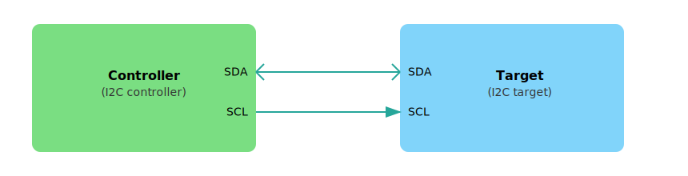Figure: Single Controller and Single Target
In typical embedded projects, the microcontroller(e.g: Pico) acts as the controller, and connected devices like displays(eg: OLED) or sensors act as targets.
I2C makes it easy to connect many devices on the same two wires. You can connect multiple targets to a single controller, which is the most common setup. I2C also supports multiple controllers on the same bus, so more than one controller can talk to one or more targets.
I2C Bus
The I2C bus uses just two lines, which are shared by all connected devices:
-
SCL (Serial Clock Line): Carries the clock signal from the controller. Sometimes devices label them as SCK.
-
SDA (Serial Data Line): Transfers the data in both directions. Sometimes devices label them as SDI.

Figure: Single Controller and Multiple Target
All connected devices share the same two wires. The controller selects which target to communicate with by sending that device’s unique address.
I2C Addresses
Each I2C target device has a 7-bit or 10-bit address. The most common is 7-bit, which allows for up to 128 possible addresses.
Many devices have a fixed address defined by the manufacturer, but others allow configuring the lower bits of the address using pins or jumpers. For example, a sensor might use pins labeled A0 and A1 to change its address, allowing you to use multiple copies of the same chip on the same bus.
When the controller wants to talk to a target, it starts by sending a START condition, followed by the device address and a read/write bit. The matching device responds with an ACK (acknowledge) signal, and communication continues.
Speed Modes
I2C supports different speed modes depending on how fast data needs to be transferred. Standard mode goes up to 100 kbps, fast mode reaches 400 kbps, and Fast Mode Plus allows up to 1 Mbps. For even faster communication, High-Speed mode supports up to 3.4 Mbps. There is also an Ultra-Fast mode (5 Mbps). The speed you can use depends on what speed modes are supported by both the microcontroller’s I2C interface and the connected target devices.
Why I2C?
I2C is ideal when you want to connect several devices using just two wires. It is well-suited for applications where speed is not critical but wiring simplicity is important.
The good news is that in Embedded Rust, you don’t need to implement the I2C protocol yourself. The embedded-hal crate defines common I2C traits, and the HAL for your chip takes care of the low-level details. In the next section, we will see more on it.
Resources
- Basics of the I2C Communication Protocol: Refer this if you want in-depth understanding how the controller communincates with target.
Using I2C with the Embedded Rust Ecosystem
In the previous section, we learned the basics of I2C communication and how the controller-target (master-slave) model works. Now, let’s see how these concepts apply in the Embedded Rust ecosystem, where modular and reusable design is a key principle.
The Role of embedded-hal
The embedded-hal crate defines a standard set of traits for embedded hardware abstraction, including I2C. These traits allow driver code (like for displays or sensors) to be written generically so that it can run on many different microcontrollers without needing platform-specific changes.
The core I2C trait looks like this:
#![allow(unused)]
fn main() {
pub trait I2c<A: AddressMode = SevenBitAddress>: ErrorType {
// This method must be implemented by HAL authors
fn transaction(...);
// These are default methods built on top of `transaction`
fn read(...);
fn write(...);
fn write_read(...);
}
}The only method that the HAL is required to implement is transaction. The trait provides default implementations of read, write, and write_read using this method.
The generic type parameter A specifies the address mode and has a default type parameter of SevenBitAddress. So, in most cases you don’t need to specify it manually. For 10-bit addressing, you can use TenBitAddress instead.
Microcontroller-specific HAL crates (like esp-hal, stm32-hal, or nrf-hal) implement this trait for their I2C peripherals. For example, the esp-hal crate implements I2C. If you are curious, you can look at the implementation here.
In addition to the regular embedded-hal crate, there is an async version called embedded-hal-async. It defines similar traits, but they are designed to work with async code, which is useful when writing non-blocking drivers or tasks in embedded systems.
Platform-Independent Drivers
Imagine you are writing a driver for a sensor or a display that communicates over I2C. You don’t want to tie your code to a specific microcontroller like the Raspberry Pi Pico or ESP32. Instead, you can write the driver in a generic way using the embedded-hal trait.
As long as your driver only depends on the I2C trait, it can run on any platform that provides an implementation of this trait-such as STM32, nRF, or ESP32.
Sharing the I2C Bus
Many embedded projects connect multiple I2C devices (like an OLED display, an LCD, and various sensors) to the same SDA and SCL lines. However, only one device can control the bus at a time.

Figure: Microcontroller(Pico) and Multiple Devices
If you give exclusive access to one driver, other devices cannot communicate. This is where the embedded-hal-bus crate helps.
It provides wrapper types like AtomicDevice, CriticalSectionDevice, and RefCellDevice that allow multiple drivers to safely share access to the same I2C bus. These wrappers themselves implement the I2c trait, so drivers can use them as if they were the original bus.
You can use I2C in two ways:

-
Without sharing: If your application only talks to one I2C device, you can pass the I2C bus instance provided by the HAL (which implements the I2c trait) directly to the driver.
-
With sharing: If your application needs to communicate with multiple I2C devices on the same bus, you can wrap the I2C bus instance (provided by the HAL) using one of the sharing types from the embedded-hal-bus crate, such as AtomicDevice or CriticalSectionDevice. This allows safe, coordinated access across multiple drivers.
Resources
- embedded-hal docs on I2C: This documentation provides in-depth details on how I2C traits are structured and how they are intended to be used across different platforms.
Raspberry Pi Pico 2(RP2350)’s I2C
Now that you understand the basics of the I2C protocol, let us look at how it works on the Raspberry Pi Pico 2. The RP2350 has two separate I2C controllers, named I2C0 and I2C1. Think of these as two independent communication channels that can operate simultaneously. This helps when two devices share the same I2C address, because you can place them on separate controllers.
Available I2C Pins
Both I2C controllers support multiple pin options for SDA and SCL. You only choose one pair for each controller.
| I2C Controller | GPIO Pins |
|---|---|
| I2C0 – SDA | GP0, GP4, GP8, GP12, GP16, GP20 |
| I2C0 – SCL | GP1, GP5, GP9, GP13, GP17, GP21 |
| I2C1 – SDA | GP2, GP6, GP10, GP14, GP18, GP26 |
| I2C1 – SCL | GP3, GP7, GP11, GP15, GP19, GP27 |
{kind=link}
On the Pico 2 board layout, pins that support I2C functionality are labeled with SDA and SCL, and are also highlighted in blue to make them easy to identify.
Speed Options
The RP2350’s I2C controllers support three different speed modes, allowing you to match the capabilities of whatever devices you’re connecting:
- Standard mode: Up to 100 kb/s (kilobits per second) - the slowest but most universally compatible
- Fast mode: Up to 400 kb/s - a good balance for most sensors and displays
- Fast mode plus: Up to 1000 kb/s - for when you need quicker data transfer
It’s worth noting that the RP2350 doesn’t support the ultra-high-speed modes (High-speed at 3.4 Mb/s or Ultra-Fast at 5 Mb/s) that some specialized devices use. However, most common sensors, displays, and peripherals work perfectly fine within the supported speed ranges.
Controller or Target mode
The RP2350 can only be a Controller (master) or a Target (slave) at any given time—not both simultaneously on the same controller. For typical projects where the Pico 2 is controlling sensors and displays, you’ll always use controller mode.
For the complete technical specifications, you can refer to page 983 of the RP2350 Datasheet.
OLED 显示屏
OLED Display
In this section, we’ll learn how to connect an OLED display module to the Raspberry Pi Pico 2.
We’ll create simple projects like displaying text and an image (display Ferris 🦀 image) on the OLED. We’ll use the I2C protocol to connect the OLED display to the Pico.

Hardware Requirements
For this project, you’ll need:
- An OLED display (0.96 Inch I2C/IIC 4-Pin, 128x64 resolution, SSD1306 chip)
- A breadboard
- Jumper wires
Setup
| Pico Pin | Wire | OLED Pin |
|---|---|---|
| GPIO 18 |
|
SDA |
| GPIO 19 |
|
SCL |
| 3.3V |
|
VCC |
| GND |
|
GND |
We will connect the SDA to GPIO 18 and the SCL to GPIO 19. Attach VCC to 3.3V for power, and GND to GND. This setup allows the OLED display to communicate with the microcontroller using I2C.

New crates
In addition to the usual crate like rp-hal, we will be using these new crates necessary for the project.
ssd1306: a driver for the SSD1306 OLED display, supporting both I2C and 4-wire SPI.embedded-graphics: a 2D graphics library tailored for memory-constrained embedded devices, enabling text and graphic rendering.tinybmp: a lightweight BMP parser for embedded, no-std environments. We’ll use this to directly load.bmpimages with theembedded-graphicscrate, avoiding the need for raw image data.
Prerequisite
Resources
Hello Rust on OLED
We will create a simple program to display “Hello, Rust” in the OLED display.
Generating From template
Refer to the Template section for details and instructions.
To generate the project, run:
cargo generate --git https://github.com/ImplFerris/pico2-template.git --tag v0.1.0
When prompted, choose a name for your project-let’s go with “oh-led”. Don’t forget to select rp-hal as the HAL.
Then, navigate into the project folder:
cd PROJECT_NAME
# For example, if you named your project "oh-led":
# cd oh-led
Add Additional Dependencies
Since we are using the SSD1306 OLED display, we need to include the SSD1306 driver. To add this dependency, use the following Cargo command:
cargo add ssd1306@0.9.0
We will use the embedded_graphics crate to handle graphical rendering on the OLED display, to draw images, shapes, and text.
cargo add embedded-graphics@0.8.1
Code
Additional imports
In addition to the imports from the template, you’ll need the following additional dependencies for this task.
#![allow(unused)]
fn main() {
use hal::fugit::RateExtU32;
use hal::gpio::{FunctionI2C, Pin};
use ssd1306::{prelude::*, I2CDisplayInterface, Ssd1306};
use embedded_graphics::prelude::*;
use embedded_graphics::mono_font::ascii::FONT_6X10;
use embedded_graphics::mono_font::MonoTextStyleBuilder;
use embedded_graphics::pixelcolor::BinaryColor;
use embedded_graphics::text::{Baseline, Text};
}Pin Configuration
We start by configuring the GPIO pins for the I2C communication. In this case, GPIO18 is set as the SDA pin, and GPIO19 is set as the SCL pin. We then configure the I2C peripheral to work in master mode.
#![allow(unused)]
fn main() {
// Configure two pins as being I²C, not GPIO
let sda_pin: Pin<_, FunctionI2C, _> = pins.gpio18.reconfigure();
let scl_pin: Pin<_, FunctionI2C, _> = pins.gpio19.reconfigure();
let i2c = hal::I2C::i2c1(
pac.I2C1,
sda_pin,i2c1
scl_pin,
400.kHz(),
&mut pac.RESETS,
&clocks.system_clock,
);
}Prepare Display
We create an interface for the OLED display using the I2C.
#![allow(unused)]
fn main() {
//helper struct is provided by the ssd1306 crate
let interface = I2CDisplayInterface::new(i2c);
// initialize the display
let mut display = Ssd1306::new(interface, DisplaySize128x64, DisplayRotation::Rotate0)
.into_buffered_graphics_mode();
display.init().unwrap();
}Set Text Style and Draw
Next, we define the text style and use it to display “Hello Rust” on the screen:
#![allow(unused)]
fn main() {
// Embedded graphics
let text_style = MonoTextStyleBuilder::new()
.font(&FONT_6X10)
.text_color(BinaryColor::On)
.build();
Text::with_baseline("Hello, Rust!", Point::new(0, 16), text_style, Baseline::Top)
.draw(&mut display)
.unwrap();
}Here, we are writing the message at coordinates (x=0, y=16).
Write out data to a display
#![allow(unused)]
fn main() {
display.flush().unwrap();
}Full logic
#![allow(unused)]
fn main() {
let sda_pin: Pin<_, FunctionI2C, _> = pins.gpio18.reconfigure();
let scl_pin: Pin<_, FunctionI2C, _> = pins.gpio19.reconfigure();
let i2c = hal::I2C::i2c1(
pac.I2C1,
sda_pin,
scl_pin,
400.kHz(),
&mut pac.RESETS,
&clocks.system_clock,
);
let interface = I2CDisplayInterface::new(i2c);
let mut display = Ssd1306::new(interface, DisplaySize128x64, DisplayRotation::Rotate0)
.into_buffered_graphics_mode();
display.init().unwrap();
let text_style = MonoTextStyleBuilder::new()
.font(&FONT_6X10)
.text_color(BinaryColor::On)
.build();
Text::with_baseline("Hello, Rust!", Point::new(0, 16), text_style, Baseline::Top)
.draw(&mut display)
.unwrap();
display.flush().unwrap();
loop {
timer.delay_ms(500);
}
}Clone the existing project
You can clone (or refer) project I created and navigate to the hello-oled folder.
git clone https://github.com/ImplFerris/pico2-rp-projects
cd pico2-projects/hello-oled
Ferris on OLED
In this task, we will display the ferris.bmp(Download and put it in the project folder) file on the OLED screen.
{kind=link}
Follow the same instructions as in the “Hello Rust” program, with just a few modifications.
First, we need to add the tinybmp crate to handle BMP file loading. Use the following Cargo command to include it in your project:
cargo add tinybmp@0.6.0
Additional imports
#![allow(unused)]
fn main() {
use embedded_graphics::image::Image;
use tinybmp::Bmp;
}Difference
After initializing the display, we will load the ferris.bmp file using the tinybmp crate, and then we will draw the image.
#![allow(unused)]
fn main() {
let bmp = Bmp::from_slice(include_bytes!("../ferris.bmp")).unwrap();
let im = Image::new(&bmp, Point::new(32, 0));
im.draw(&mut display).unwrap();
}Clone the existing project
You can clone (or refer) project I created and navigate to the ferris-oled folder.
git clone https://github.com/ImplFerris/pico2-rp-projects
cd pico2-projects/ferris-oled
Useful tools
- Bitmap to Rust array Converter: Image2Bytes Generator
Servo Motor and PWM
In this section, we’ll connect an SG90 Micro Servo Motor to the Pico 2 and control its rotation using PWM. The servo will move in a loop, rotating from 0 degrees to 90 degrees, and then to 180 degrees.
Before moving forward, make sure you’ve read the PWM introduction in the Blink LED section.
Hardware Requirements
- SG90 Micro Servo Motor
- Jumper Wires:
- Female-to-Male(or Male to Male depending on how you are connecting) jumper wires for connecting the Pico 2 to the servo motor pins (Ground, Power, and Signal).
Connection Overview
- Ground (GND): Connect the servo’s GND pin (typically the brown wire, though it may vary) to any ground pin on the Pico 2.
- Power (VCC): Connect the servo’s VCC pin (usually the red wire) to the Pico 2’s 5V (or 3.3V if required by your setup) power pin.
- Signal (PWM): Connect the servo’s control (signal) pin to GPIO9 on the Pico 2, configured for PWM. This is commonly the orange wire (may vary).
| Pico Pin | Wire | Servo Motor | Notes |
|---|---|---|---|
| VBUS |
|
Power (Red Wire) | Supplies 5V power to the servo. |
| GND |
|
Ground (Brown Wire) | Connects to ground. |
| GPIO 9 |
|
Signal (Orange Wire) | Receives PWM signal to control the servo's position. |
简介
Introduction to Servo Motors
A servo motor controls movement by adjusting its position using a feedback system. It is guided by a signal, usually Pulse Width Modulation (PWM), to reach and maintain the desired position.
They are widely used in applications requiring precise motion, such as robotics, RC vehicles, and camera systems, as well as in various projects. Hobby servos, which are often used in RC toys like cars, airplanes, are also popular for building robots.
In our exercise, we’ll be using the hobby server (Micro Servo SG90)

How does it work?
A servo motor is controlled by sending a series of pulses through its signal line. The signal has a frequency of 50Hz, with a pulse every 20 milliseconds. The width of the pulse determines the servo’s position. Typically, a servo can rotate 180 degrees.
Controlling the position
The position of a servo motor is controlled by sending a pulse with a specific duration. The length of the pulse determines the angle of the motor. For most servos, a 1ms pulse moves the motor to 0 degrees, a 1.5ms pulse moves it to 90 degrees (neutral position), and a 2ms pulse moves it to 180 degrees.

However, from my experiment, I found that not all servos follow these exact timings. For example, with my servo, the pulse duration for 0 degrees was 0.5ms, 1.5ms for 90 degrees, and approximately 2.4ms for 180 degrees. I had to experiment and adjust to get it right. If you’re unsure, you can use tools like an oscilloscope to fine-tune it, or simply test different values to find what works best for your specific servo.
The example I’ll provide in this exercise is based on my servo’s configuration, you might need to adjust the values depending on the servo you’re using.
Reference
更多 PWM 细节
More on PWM
The servo motor we’re using operates at a 50Hz frequency, which means that a pulse is sent every 20 milliseconds (ms).
Let’s break this down further:
- 50Hz Frequency: Frequency refers to how many times an event happens in a given time period. A 50Hz frequency means that the servo expects a pulse to occur 50 times per second. In other words, the servo receives a pulse every 1/50th of a second, which is 20 milliseconds.
- 20ms Time Interval: This 20ms is the time between each pulse. It means that every 20 milliseconds, the servo expects a new pulse to adjust its position. Within this 20ms period, the width of the pulse (how long it stays “high”) determines the angle at which the servo will move.
So, when we say the servo operates at 50Hz, it means that the motor is constantly receiving pulses every 20ms to keep it in motion or adjust its position based on the width of each pulse.
Pulse Width and Duty Cycle
Let’s dive deeper into how different pulse widths like 0.5ms, 1.5ms, and 2.4ms affect the servo’s position.

1. 0.5ms Pulse (Position: 0 degrees)
-
What Happens: A 0.5ms pulse means the signal is “high” for 0.5 milliseconds within each 20ms cycle. The servo interprets this as a command to move to the 0-degree position.
-
Duty Cycle: The duty cycle refers to the percentage of time the signal is “high” in one complete cycle. For a 0.5ms pulse: \[ \text{Duty Cycle (%)} = \frac{0.5 \text{ms}}{20 \text{ms}} \times 100 = 2.5\% \]
This means that for just 2.5% of each 20ms cycle, the signal stays “high” causing the servo to rotate to the 0-degree position.
2. 1.5ms Pulse (Position: 90 degrees)
- What Happens: A 1.5ms pulse means the signal is “high” for 1.5 milliseconds in the 20ms cycle. The servo moves to its neutral position, around 90 degrees (middle position).
- Duty Cycle: For a 1.5ms pulse: \[ \text{Duty Cycle (%)} = \frac{1.5 \text{ms}}{20 \text{ms}} \times 100 = 7.5\% \] Here, the signal stays “high” for 7.5% of the cycle, which positions the servo at 90 degrees (neutral).
3. 2.4ms Pulse (Position: 180 degrees)
- What Happens: A 2.4ms pulse means the signal is “high” for 2.4 milliseconds in the 20ms cycle. The servo will move to its maximum position, typically 180 degrees (full rotation to one side).
- Duty Cycle: For a 2.4ms pulse: \[ \text{Duty Cycle (%)} = \frac{2.4 \text{ms}}{20 \text{ms}} \times 100 = 12\% \] In this case, the signal is “high” for 12% of the cycle, which causes the servo to rotate to 180 degrees.
舵机与 Pico
Servo and Pico
To control a servo with the Raspberry Pi Pico, we need to set a 50Hz PWM frequency. Currently, RP-HAL doesn’t allow directly setting the frequency, so we achieve this by adjusting the top and div_int values.
Refer the 1073th page of the RP2350 Datasheet to understand how top and div_int works.
Formula from datasheet
The following formula from the datasheet is used to calculate the period and determine the output frequency based on the system clock frequency.
-
Period calculation: \[ \text{period} = (\text{TOP} + 1) \times (\text{CSR_PH_CORRECT} + 1) \times \left( \text{DIV_INT} + \frac{\text{DIV_FRAC}}{16} \right) \]
-
PWM output frequency calculation:
\[ f_{PWM} = \frac{f_{sys}}{\text{period}} = \frac{f_{sys}}{(\text{TOP} + 1) \times (\text{CSR_PH_CORRECT} + 1) \times \left( \text{DIV_INT} + \frac{\text{DIV_FRAC}}{16} \right)} \]
Where:
- \( f_{PWM} \) is the PWM output frequency.
- \( f_{sys} \) is the system clock frequency. For the pico2, it is is 150MHZ.
Let’s calculate top
We want the PWM frequency (f_pwm) to be 50 Hz. In order to achieve that, we are going to adjust the top and div_int values.
The top value must be within the range of 0 to 65535 (since it’s a 16-bit unsigned integer). To make sure the top value fits within this range, I chose values for the divisor (div_int) in powers of 2 (such as 8, 16, 32, 64), though this isn’t strictly necessary (it’s just a preference). In this case, we chose div_int = 64 to calculate a top value that fits within the u16 range.
With the chosen div_int and system parameters, we can calculate the top using the following formula: \[ \text{top} = \frac{150,000,000}{50 \times 64} - 1 \]
\[ \text{top} = \frac{150,000,000}{3,200} - 1 \]
\[ \text{top} = 46,875 - 1 \]
\[ \text{top} = 46,874 \]
After performing the calculation, we find that the top value is 46,874.
You can experiment with different div_int and corresponding top values. Just ensure that div_int stays within the u8 range, top fits within the u16 range, and the formula yields a 50Hz frequency.
Note:
- In case you are wondering, we are not setting the
div_fracwhich is 0 by default. That’s why it is not included in the calculation. - We are not going to enable the phase correct for this exercise, so it also can be excluded from the calculation (since it is just multiplying by 1); if you enable phase correct, then the calculation will differ since you have to multiply by 2 (1+1)
Position calculation based on top
To calculate the duty cycle that corresponds to specific positions (0, 90, and 180 degrees), we use the following formula based on the top value:
#![allow(unused)]
fn main() {
const PWM_DIV_INT: u8 = 64;
const PWM_TOP: u16 = 46_874;
const TOP: u16 = PWM_TOP + 1;
// 0.5ms is 2.5% of 20ms; 0 degrees in servo
const MIN_DUTY: u16 = (TOP as f64 * (2.5 / 100.)) as u16;
// 1.5ms is 7.5% of 20ms; 90 degrees in servo
const HALF_DUTY: u16 = (TOP as f64 * (7.5 / 100.)) as u16;
// 2.4ms is 12% of 20ms; 180 degree in servo
const MAX_DUTY: u16 = (TOP as f64 * (12. / 100.)) as u16;
}We multiply the TOP value by a duty cycle percentage to determine the appropriate pulse width for each position of the servo. You might need to adjust the percentage based on your servo.
实操
Action
Setting Up the PWM and Servo Control
#![allow(unused)]
fn main() {
const PWM_DIV_INT: u8 = 64;
const PWM_TOP: u16 = 46_874;
const TOP: u16 = PWM_TOP + 1;
const MIN_DUTY: u16 = (TOP as f64 * (2.5 / 100.)) as u16;
const HALF_DUTY: u16 = (TOP as f64 * (7.5 / 100.)) as u16;
const MAX_DUTY: u16 = (TOP as f64 * (12. / 100.)) as u16;
}1. Set Up the PWM Slice and Channel
First, initialize the PWM slice and channel. You should have already done similar in the previous blinky section.
#![allow(unused)]
fn main() {
let mut pwm_slices = hal::pwm::Slices::new(pac.PWM, &mut pac.RESETS);
let pwm = &mut pwm_slices.pwm4;
}2. Adjust for 50HZ frequency
Now, set the divisor and the top value to achieve a PWM frequency of 50Hz.
#![allow(unused)]
fn main() {
pwm.set_div_int(PWM_DIV_INT);
pwm.set_div_frac(0);
pwm.set_top(PWM_TOP);
pwm.enable();
}3. Set Output Pin
Next, specify the GPIO pin where the PWM signal will be sent. We will use GPIO pin 9.
#![allow(unused)]
fn main() {
let servo = &mut pwm.channel_b;
servo.output_to(pins.gpio9);
}4. Set Servo Position in a Loop
Finally, in the loop, we adjust the duty cycle which will control the servo’s position. We will move the servo to different positions (0°, 90°, and 180°) using the MIN_DUTY, HALF_DUTY, and MAX_DUTY values calculated earlier.
#![allow(unused)]
fn main() {
loop {
servo.set_duty_cycle(MIN_DUTY).unwrap(); // 0 degrees
timer.delay_ms(1000);
servo.set_duty_cycle(HALF_DUTY).unwrap(); // 90 degrees
timer.delay_ms(1000);
servo.set_duty_cycle(MAX_DUTY).unwrap(); // 180 degrees
timer.delay_ms(1000);
}
}Full Code snippet
const PWM_DIV_INT: u8 = 64;
const PWM_TOP: u16 = 46_874;
const TOP: u16 = PWM_TOP + 1;
const MIN_DUTY: u16 = (TOP as f64 * (2.5 / 100.)) as u16;
const HALF_DUTY: u16 = (TOP as f64 * (7.5 / 100.)) as u16;
const MAX_DUTY: u16 = (TOP as f64 * (12. / 100.)) as u16;
#[hal::entry]
fn main() -> ! {
// Grab our singleton objects
let mut pac = hal::pac::Peripherals::take().unwrap();
// Set up the watchdog driver - needed by the clock setup code
let mut watchdog = hal::Watchdog::new(pac.WATCHDOG);
// Configure the clocks
// The default is to generate a 125 MHz system clock
let clocks = hal::clocks::init_clocks_and_plls(
XTAL_FREQ_HZ,
pac.XOSC,
pac.CLOCKS,
pac.PLL_SYS,
pac.PLL_USB,
&mut pac.RESETS,
&mut watchdog,
)
.ok()
.unwrap();
// The single-cycle I/O block controls our GPIO pins
let sio = hal::Sio::new(pac.SIO);
// Set the pins up according to their function on this particular board
let pins = hal::gpio::Pins::new(
pac.IO_BANK0,
pac.PADS_BANK0,
sio.gpio_bank0,
&mut pac.RESETS,
);
// The delay object lets us wait for specified amounts of time (in
// milliseconds)
let mut timer = hal::Timer::new_timer0(pac.TIMER0, &mut pac.RESETS, &clocks);
// Init PWMs
let mut pwm_slices = hal::pwm::Slices::new(pac.PWM, &mut pac.RESETS);
// Configure PWM4
let pwm = &mut pwm_slices.pwm4;
pwm.set_div_int(PWM_DIV_INT);
pwm.set_div_frac(0);
pwm.set_top(PWM_TOP);
pwm.enable();
let servo = &mut pwm.channel_b;
servo.output_to(pins.gpio9);
loop {
servo.set_duty_cycle(MIN_DUTY).unwrap();
timer.delay_ms(1000);
servo.set_duty_cycle(HALF_DUTY).unwrap();
timer.delay_ms(1000);
servo.set_duty_cycle(MAX_DUTY).unwrap();
timer.delay_ms(1000);
}
}Clone the existing project
You can clone (or refer) project I created and navigate to the servo folder.
git clone https://github.com/ImplFerris/pico2-rp-projects
cd pico2-projects/servo
Watchdog
In January 1994, the Clementine spacecraft successfully mapped the moon. While traveling toward the asteroid Geographos, a floating point exception occurred on May 7, 1994, in the Honeywell 1750 processor, which was responsible for telemetry and various spacecraft functions.

The 1750 had a built-in watchdog timer but it was not utilized. The software team later regretted this decision and noted that a standard watchdog might not have been robust enough to detect the failure mode.
So, What exactly is a watchdog?
You might have already figured out its purpose.
What is watchdog?
A watchdog timer (WDT) is a hardware component used in embedded systems, its primary purpose is to detect software anomalies and automatically reset the processor if a malfunction occurs, ensuring that the system can recover without human intervention.
How It Works?
The watchdog timer functions like a counter that counts down from a preset value to zero. The embedded software is responsible for periodically “feeding the dog” (also known as “kicking the dog,” a term I don’t like) by resetting the counter before it reaches zero. If the software fails to reset the counter (perhaps due to an infinite loop or a system hang), the watchdog timer assumes there’s a problem and triggers a reset of the processor. This allows the system to restart and return to normal operation.
Feeding the dog:
Think of a watchdog timer like a dog that needs regular feeding to stay healthy and active. Just as you must feed your dog at scheduled intervals, the watchdog timer requires periodic resets to ensure that the embedded system is operating correctly. Imagine the dog’s energy levels decreasing over time. If it runs out of energy, it will bark to alert you (just like the watchdog timer triggers an alert if it reaches zero). To keep the dog happy and active, you need to feed it regularly (or reset the timer) before it runs out of energy!
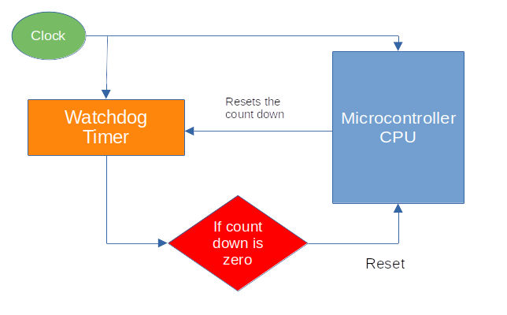By implementing a watchdog timer, embedded systems can be made self-reliant, essential for devices that may be unreachable by human operators, such as space probes or other remote applications.
Code
In this code snippet, we were setting up the watchdog driver, which is essential for the clock setup process.
#![allow(unused)]
fn main() {
// Set up the watchdog driver - needed by the clock setup code
let mut watchdog = hal::Watchdog::new(pac.WATCHDOG);
}References
- Great Watchdog Timers For Embedded Systems, by Jack Ganssle
- Born to fail
- A Guide to Watchdog Timers for Embedded Systems
- Proper Watchdog Timer Use
Buzzinga
In this section, we’ll explore some fun activities using the buzzer. I chose the title “Buzzinga” just for fun (a nod to Sheldon’s “Bazinga” in The Big Bang Theory); it’s not a technical term.
- Passive Buzzer
- Jumper Wires:
- Female-to-Male jumper wires for connecting the Pico 2 to the buzzer pins (Positive and Ground).
The buzzer has two pins: Positive(Signal), Ground; The positive side of the buzzer is typically marked with a + symbol and is the longer pin, while the negative side (ground) is the shorter pin, similar to an LED. However, some passive buzzers may allow for either pin to be connected to ground or signal, depending on the specific model.
By the way, I used an active buzzer in my experiment. A passive buzzer is recommended if you plan to play different sounds, as it provides a better tone.
Connection Overview
| Pico Pin | Wire | Buzzer Pin | Notes |
|---|---|---|---|
| GPIO 15 |
|
Positive Pin | Receives PWM signals to produce sound. |
| GND |
|
Ground Pin | Connects to ground. |

Before moving forward, make sure you’ve read the following sections and understood the concepts.
- PWM introduction in the Blink LED section
- More on PWM in the servo section
- Calculating top in the servo section
Reference
蜂鸣器简介
Introduction to Buzzer
A buzzer is an electronic device used to generate sound, beeps, or even melodies, and is commonly found in alarm systems, timers, computers, and for confirming user inputs, such as mouse clicks or keystrokes. Buzzers serve as audio signaling devices, providing audible feedback for various actions.
Active Buzzer vs Passive Buzzer
Active Buzzer:
-
Built-in Oscillator: An active buzzer has an internal oscillator that generates the tone automatically when power is applied. You can identify whether you have active buzzer or not by connecting the buzzer directly to the battery and it will make a sound.
-
Simpler Usage: No need to worry about generating specific frequencies since the buzzer does it internally.
-
Tone: Typically produces a single tone or a fixed frequency.

-
How to identify: Usually has a white covering on top and a black smooth finish at the bottom. It produces sound when connected directly to a battery.
Passive Buzzer:
- External Signal Required: A passive buzzer requires an external signal (usually a square wave) to generate sound. It does not have an internal oscillator, so it relies on a microcontroller to provide a frequency.
- Flexible Tones: You can control the frequency and create different tones, melodies, or alarms based on the input signal.
- How to identify: Typically has no covering on the top and looks like a PCB-style blue or green covering at the bottom.
Which one ?
Choose Active Buzzer if:
- You need a simple, fixed tone or beep. It’s ideal for basic alerts, alarms, or user input confirmation.
Choose Passive Buzzer if:
- You want to generate different tones, melodies, or sound patterns.
It is recommended to use a passive buzzer for our exercises. However, if you only have an active buzzer, don’t worry; you can still use it. In fact, I personally used an active buzzer for this.
Beep
In this exercise, we will generate a beeping sound with a 50% duty cycle, followed by a 0% duty cycle, creating a looping pattern of sound and silence. We will use the A4 note (440Hz frequency) for this. (If you’re not familiar with the A4 note, please look up more information on musical notes.)
Get Top function
In the previous exercise (servo motor), we manually calculated and hardcoded the top value. In this exercise, we create a small function to calculate the top value based on the target frequency and div_int:
#![allow(unused)]
fn main() {
const fn get_top(freq: f64, div_int: u8) -> u16 {
let result = 150_000_000. / (freq * div_int as f64);
result as u16 - 1
}
}div_int value
We will be using 64 as div_int.
#![allow(unused)]
fn main() {
const PWM_DIV_INT: u8 = 64;
}Configure the GPIO 15 pin
Next, we need to configure the GPIO pin (GPIO 15) to output the PWM signal.
#![allow(unused)]
fn main() {
let pwm = &mut pwm_slices.pwm7;
pwm.enable();
pwm.set_div_int(PWM_DIV_INT);
pwm.channel_b.output_to(pins.gpio15);
}To Set a frequency 440Hz(A4 Note)
Now we calculate the top value required to generate the 440Hz frequency (A4 note) and set it for the PWM:
#![allow(unused)]
fn main() {
let top = get_top(440., PWM_DIV_INT);
pwm.set_top(top);
}Loop
Finally, we create a loop to alternate between a 50% duty cycle (beep) and a 0% duty cycle (silence). The loop repeats with a delay of 500 milliseconds between each change:
#![allow(unused)]
fn main() {
loop {
pwm.channel_b.set_duty_cycle_percent(50).unwrap();
timer.delay_ms(500);
pwm.channel_b.set_duty_cycle(0).unwrap();
timer.delay_ms(500);
}
}Clone the existing project
You can clone (or refer) project I created and navigate to the beep folder.
git clone https://github.com/ImplFerris/pico2-rp-projects
cd pico2-projects/beep
GOT Buzzer?
We are going to play the Game of Thrones (GOT) background music (BGM) on the buzzer, thanks to the awesome arduino-songs repository. It also has other bgms.
If you’re unsure about musical notes and sheet music, feel free to check out the quick theory I’ve provideded here.
I’ve splitted the code into rust module(you can do it in single file as we have done so far): music, got.
Reference
音符
Introduction to Music Notes and Sheet Music
This is a brief guide to music notes and sheet music. While it may not cover everything, it provides a quick reference for key concepts.
Music Sheet
The notes for the music are based on the following sheet. You can refer to this Musescore link for more details.

In music, note durations are represented by the following types, which define how long each note is played:
- Whole note: The longest note duration, lasting for 4 beats.
- Half note: A note that lasts for 2 beats.
- Quarter note: A note that lasts for 1 beat.
- Eighth note: A note that lasts for half a beat, or 1/8th of the duration of a whole note.
- Sixteenth note: A note that lasts for a quarter of a beat, or 1/16th of the duration of a whole note.
Dotted Notes
A dotted note is a note that has a dot next to it. The dot increases the note’s duration by half of its original value. For example:
- Dotted half note: A half note with a dot lasts for 3 beats (2 + 1).
- Dotted quarter note: A quarter note with a dot lasts for 1.5 beats (1 + 0.5).
Tempo and BPM (Beats Per Minute)
Tempo refers to the speed at which a piece of music is played. It is usually measured in beats per minute (BPM), indicating how many beats occur in one minute.
Music module
In the music module, we define constants for common notes and their corresponding frequency values.
#![allow(unused)]
fn main() {
// Note frequencies in Hertz as f64
pub const NOTE_B0: f64 = 31.0;
pub const NOTE_C1: f64 = 33.0;
pub const NOTE_CS1: f64 = 35.0;
pub const NOTE_D1: f64 = 37.0;
pub const NOTE_DS1: f64 = 39.0;
pub const NOTE_E1: f64 = 41.0;
pub const NOTE_F1: f64 = 44.0;
pub const NOTE_FS1: f64 = 46.0;
pub const NOTE_G1: f64 = 49.0;
pub const NOTE_GS1: f64 = 52.0;
pub const NOTE_A1: f64 = 55.0;
pub const NOTE_AS1: f64 = 58.0;
pub const NOTE_B1: f64 = 62.0;
pub const NOTE_C2: f64 = 65.0;
pub const NOTE_CS2: f64 = 69.0;
pub const NOTE_D2: f64 = 73.0;
pub const NOTE_DS2: f64 = 78.0;
pub const NOTE_E2: f64 = 82.0;
pub const NOTE_F2: f64 = 87.0;
pub const NOTE_FS2: f64 = 93.0;
pub const NOTE_G2: f64 = 98.0;
pub const NOTE_GS2: f64 = 104.0;
pub const NOTE_A2: f64 = 110.0;
pub const NOTE_AS2: f64 = 117.0;
pub const NOTE_B2: f64 = 123.0;
pub const NOTE_C3: f64 = 131.0;
pub const NOTE_CS3: f64 = 139.0;
pub const NOTE_D3: f64 = 147.0;
pub const NOTE_DS3: f64 = 156.0;
pub const NOTE_E3: f64 = 165.0;
pub const NOTE_F3: f64 = 175.0;
pub const NOTE_FS3: f64 = 185.0;
pub const NOTE_G3: f64 = 196.0;
pub const NOTE_GS3: f64 = 208.0;
pub const NOTE_A3: f64 = 220.0;
pub const NOTE_AS3: f64 = 233.0;
pub const NOTE_B3: f64 = 247.0;
pub const NOTE_C4: f64 = 262.0;
pub const NOTE_CS4: f64 = 277.0;
pub const NOTE_D4: f64 = 294.0;
pub const NOTE_DS4: f64 = 311.0;
pub const NOTE_E4: f64 = 330.0;
pub const NOTE_F4: f64 = 349.0;
pub const NOTE_FS4: f64 = 370.0;
pub const NOTE_G4: f64 = 392.0;
pub const NOTE_GS4: f64 = 415.0;
pub const NOTE_A4: f64 = 440.0;
pub const NOTE_AS4: f64 = 466.0;
pub const NOTE_B4: f64 = 494.0;
pub const NOTE_C5: f64 = 523.0;
pub const NOTE_CS5: f64 = 554.0;
pub const NOTE_D5: f64 = 587.0;
pub const NOTE_DS5: f64 = 622.0;
pub const NOTE_E5: f64 = 659.0;
pub const NOTE_F5: f64 = 698.0;
pub const NOTE_FS5: f64 = 740.0;
pub const NOTE_G5: f64 = 784.0;
pub const NOTE_GS5: f64 = 831.0;
pub const NOTE_A5: f64 = 880.0;
pub const NOTE_AS5: f64 = 932.0;
pub const NOTE_B5: f64 = 988.0;
pub const NOTE_C6: f64 = 1047.0;
pub const NOTE_CS6: f64 = 1109.0;
pub const NOTE_D6: f64 = 1175.0;
pub const NOTE_DS6: f64 = 1245.0;
pub const NOTE_E6: f64 = 1319.0;
pub const NOTE_F6: f64 = 1397.0;
pub const NOTE_FS6: f64 = 1480.0;
pub const NOTE_G6: f64 = 1568.0;
pub const NOTE_GS6: f64 = 1661.0;
pub const NOTE_A6: f64 = 1760.0;
pub const NOTE_AS6: f64 = 1865.0;
pub const NOTE_B6: f64 = 1976.0;
pub const NOTE_C7: f64 = 2093.0;
pub const NOTE_CS7: f64 = 2217.0;
pub const NOTE_D7: f64 = 2349.0;
pub const NOTE_DS7: f64 = 2489.0;
pub const NOTE_E7: f64 = 2637.0;
pub const NOTE_F7: f64 = 2794.0;
pub const NOTE_FS7: f64 = 2960.0;
pub const NOTE_G7: f64 = 3136.0;
pub const NOTE_GS7: f64 = 3322.0;
pub const NOTE_A7: f64 = 3520.0;
pub const NOTE_AS7: f64 = 3729.0;
pub const NOTE_B7: f64 = 3951.0;
pub const NOTE_C8: f64 = 4186.0;
pub const NOTE_CS8: f64 = 4435.0;
pub const NOTE_D8: f64 = 4699.0;
pub const NOTE_DS8: f64 = 4978.0;
pub const REST: f64 = 0.0; // No sound, for pauses
}Next, we create small helper struct to to represent a musical Song and provide some functions to calculate note durations based on tempo.
This struct has a single field whole_note, which will store the duration of a whole note in milliseconds. The reason we store the duration in milliseconds is that musical timing is often based on tempo (beats per minute, BPM), and we need to calculate how long each note lasts in terms of time.
#![allow(unused)]
fn main() {
pub struct Song {
whole_note: u32,
}
}The formula (60_000 * 4) / tempo as u32 calculates the duration of a whole note in milliseconds. We use 60_000 because there are 60,000 milliseconds in a minute, and we multiply by 4 because a whole note is typically equivalent to four beats.
#![allow(unused)]
fn main() {
impl Song {
pub fn new(tempo: u16) -> Self {
let whole_note = (60_000 * 4) / tempo as u32;
Self { whole_note }
}
}calc_note_duration
The calc_note_duration function calculates the duration of a musical note based on its division relative to a whole note. It takes in a divider parameter, which can be positive or negative, and returns the duration of the note in milliseconds.
#![allow(unused)]
fn main() {
pub fn calc_note_duration(&self, divider: i16) -> u32 {
if divider > 0 {
self.whole_note / divider as u32
} else {
let duration = self.whole_note / divider.unsigned_abs() as u32;
(duration as f64 * 1.5) as u32
}
}
}
}Logic:
-
When
divider > 0:- If the
divideris positive, the function calculates the note’s duration by dividing the duration of a whole note by thedivider. - For example, if
divider = 4, the function calculates the duration of a quarter note, which is 1/4 of a whole note.
- If the
-
When
divider <= 0:- If the
divideris negative, the function first converts thedividerto a positive value usingunsigned_abs(). - It divides the whole note’s duration by this absolute value, then multiplies the result by 1.5 to account for dotted notes (e.g., dotted quarter note, dotted eighth note), which last 1.5 times the duration of a regular note.
- If the
This positive and negative logic is a custom approach (based on an Arduino example I referred to) to differentiate dotted notes. It is not related to standard musical logic.
Melody Example: Game of Thrones Theme
These section contains code snippets for the rust module got.
Tempo
we declare the tempo for the song(you can also change and observe the result).
#![allow(unused)]
fn main() {
pub const TEMPO: u16 = 85;
}Melody Array
We define the melody of the Game of Thrones theme using the notes and durations in an array. The melody consists of tuple of note frequencies and their corresponding durations. The duration of each note is represented by an integer, where positive values represent normal notes and negative values represent dotted notes.
#![allow(unused)]
fn main() {
pub const MELODY: [(f64, i16); 92] = [
// Game of Thrones Theme
(NOTE_G4, 8),
(NOTE_C4, 8),
(NOTE_DS4, 16),
(NOTE_F4, 16),
(NOTE_G4, 8),
(NOTE_C4, 8),
(NOTE_DS4, 16),
(NOTE_F4, 16),
(NOTE_G4, 8),
(NOTE_C4, 8),
(NOTE_DS4, 16),
(NOTE_F4, 16),
(NOTE_G4, 8),
(NOTE_C4, 8),
(NOTE_DS4, 16),
(NOTE_F4, 16),
(NOTE_G4, 8),
(NOTE_C4, 8),
(NOTE_E4, 16),
(NOTE_F4, 16),
(NOTE_G4, 8),
(NOTE_C4, 8),
(NOTE_E4, 16),
(NOTE_F4, 16),
(NOTE_G4, 8),
(NOTE_C4, 8),
(NOTE_E4, 16),
(NOTE_F4, 16),
(NOTE_G4, 8),
(NOTE_C4, 8),
(NOTE_E4, 16),
(NOTE_F4, 16),
(NOTE_G4, -4),
(NOTE_C4, -4),
(NOTE_DS4, 16),
(NOTE_F4, 16),
(NOTE_G4, 4),
(NOTE_C4, 4),
(NOTE_DS4, 16),
(NOTE_F4, 16),
(NOTE_D4, -1),
(NOTE_F4, -4),
(NOTE_AS3, -4),
(NOTE_DS4, 16),
(NOTE_D4, 16),
(NOTE_F4, 4),
(NOTE_AS3, -4),
(NOTE_DS4, 16),
(NOTE_D4, 16),
(NOTE_C4, -1),
// Repeat
(NOTE_G4, -4),
(NOTE_C4, -4),
(NOTE_DS4, 16),
(NOTE_F4, 16),
(NOTE_G4, 4),
(NOTE_C4, 4),
(NOTE_DS4, 16),
(NOTE_F4, 16),
(NOTE_D4, -1),
(NOTE_F4, -4),
(NOTE_AS3, -4),
(NOTE_DS4, 16),
(NOTE_D4, 16),
(NOTE_F4, 4),
(NOTE_AS3, -4),
(NOTE_DS4, 16),
(NOTE_D4, 16),
(NOTE_C4, -1),
(NOTE_G4, -4),
(NOTE_C4, -4),
(NOTE_DS4, 16),
(NOTE_F4, 16),
(NOTE_G4, 4),
(NOTE_C4, 4),
(NOTE_DS4, 16),
(NOTE_F4, 16),
(NOTE_D4, -2),
(NOTE_F4, -4),
(NOTE_AS3, -4),
(NOTE_D4, -8),
(NOTE_DS4, -8),
(NOTE_D4, -8),
(NOTE_AS3, -8),
(NOTE_C4, -1),
(NOTE_C5, -2),
(NOTE_AS4, -2),
(NOTE_C4, -2),
(NOTE_G4, -2),
(NOTE_DS4, -2),
(NOTE_DS4, -4),
(NOTE_F4, -4),
(NOTE_G4, -1),
];
}播放
Playing the Game of Thrones Melody
This section demonstrates how to play the Game of Thrones melody using PWM (Pulse Width Modulation) for generating the tones and timing the note durations. The code calculates the duration of each note, sets the PWM duty cycle, and controls the timing to ensure proper pauses between notes.
Song object
This creates a new Song object using the tempo value from got::TEMPO, which is set to 85 BPM. The Song object will manage the note durations based on the tempo.
#![allow(unused)]
fn main() {
let song = Song::new(got::TEMPO);
}Playing the notes
This loop iterates over the muisc-notes array. Each item in the melody is a tuple containing a note and its duration type (e.g., quarter note, eighth note).
#![allow(unused)]
fn main() {
for (note, duration_type) in got::MELODY {
let top = get_top(note, PWM_DIV_INT);
pwm.set_top(top);
let note_duration = song.calc_note_duration(duration_type);
let pause_duration = note_duration / 10; // 10% of note_duration
pwm.channel_b.set_duty_cycle_percent(50).unwrap(); // Set duty cycle to 50% to play the note
timer.delay_ms(note_duration - pause_duration); // Play 90%
pwm.channel_b.set_duty_cycle(0).unwrap(); // Stop tone
timer.delay_ms(pause_duration); // Pause for 10%
}
}First, we calculate the top value based on the note frequency. This sets the PWM frequency to match the target note.
Next, the calc_note_duration function is used to determine how long each note should be played. We also calculate the pause duration as 10% of the note duration. The 90% duration ensures that the note is played clearly, while the 10% pause creates a small gap between notes, resulting in a cleaner and more distinct melody.
Keeping the Program Running
This loop keeps the program running indefinitely, as required by the main function’s signature. The main function has a -> ! return type, meaning it doesn’t return.
#![allow(unused)]
fn main() {
loop {
// Keep the program running
timer.delay_ms(500);
}
}Clone the existing project
You can clone (or refer) project I created and navigate to the got-buzzer folder.
git clone https://github.com/ImplFerris/pico2-rp-projects
cd pico2-projects/got-buzzer
Wokwi Project
An Arduino version of this exercise is available on the Wokwi site with the Pico board. Unfortunately, the site currently does not support coding in Rust for the Pico. However, you can refer to this project to understand how it works.
有源蜂鸣
Beeping with an Active Buzzer
Since you already know that an active buzzer is simple to use, you can make it beep just by powering it. In this exercise, we’ll make it beep with just a little code.
Hardware Requirements
- Active Buzzer
- Female-to-Male or Male-to-Male (depending on your setup)
We’ll use the Embassy HAL for this project.
Project from template
To set up the project, run:
cargo generate --git https://github.com/ImplFerris/pico2-template.git --tag v0.1.0
When prompted, give your project a name, like “active-beep” and select embassy as the HAL.
Then, navigate into the project folder:
cd PROJECT_NAME
# For example, if you named your project "active-beep":
# cd active-beep
All you need to do is change the output pin from 25 to 15 in the template code.
// Active Buzzer
#[embassy_executor::main]
async fn main(_spawner: Spawner) {
let p = embassy_rp::init(Default::default());
let mut buzzer = Output::new(p.PIN_15, Level::Low); // Changed PIN number to 15
loop {
buzzer.set_high();
Timer::after_millis(500).await;
buzzer.set_low();
Timer::after_millis(500).await;
}
}Clone the existing project
You can clone (or refer) project I created and navigate to the active-beep folder.
git clone https://github.com/ImplFerris/pico2-embassy-projects
cd pico2-embassy-projects/active-beep
LDR 光敏电阻
LDR (Light Dependent Resistor)
In this section, we will use an LDR (Light Dependent Resistor) with the Raspberry Pi Pico 2. An LDR changes its resistance based on the amount of light falling on it. The brighter the light, the lower the resistance, and the dimmer the light, the higher the resistance. This makes it ideal for applications like light sensing, automatic lighting, or monitoring ambient light levels.

Components Needed:
- LDR (Light Dependent Resistor)
- Resistor (typically 10kΩ); needed to create voltage divider
- Jumper wires (as usual)
Prerequisite
To work with this, you should get familiar with what a voltage divider is and how it works. You also need to understand what ADC is and how it functions.
什么是 LDR
How LDR works?
We have already given an introduction to what an LDR is. Let me repeat it again: an LDR changes its resistance based on the amount of light falling on it. The brighter the light, the lower the resistance, and the dimmer the light, the higher the resistance.
Dracula: Think of the LDR as Dracula. In sunlight, he gets weaker (just like the resistance gets lower). But in the dark, he gets stronger (just like the resistance gets higher).
We will not cover what kind of semiconductor materials are used to make an LDR, nor why it behaves this way in depth. I recommend you read this article and do further research if you are interested.
Simulation of LDR in Voltage Divider
I have created a voltage divider circuit with an LDR(a resistor symbol with arrows, kind of indicating light shining on it) in Falstad . You can import the circuit file I created, voltage-divider-ldr.circuitjs.txt, import into the Falstad site and play around.
You can adjust the brightness value and observe how the resistance of R2 (which is the LDR) changes. Also, you can watch how the \( V_{out} \) voltage changes as you increase or decrease the brightness.
Example output for full brightness
The resistance of the LDR is low when exposed to full brightness, causing the output voltage(\( V_{out} \)) to be significantly lower.
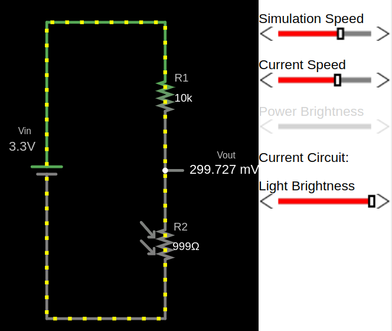Example output for low light
With less light, the resistance of the LDR increases and the output voltage increase.

Example output for full darkness
In darkness, the LDR’s resistance is high, resulting in a higher output voltage (\( V_{out} \)).
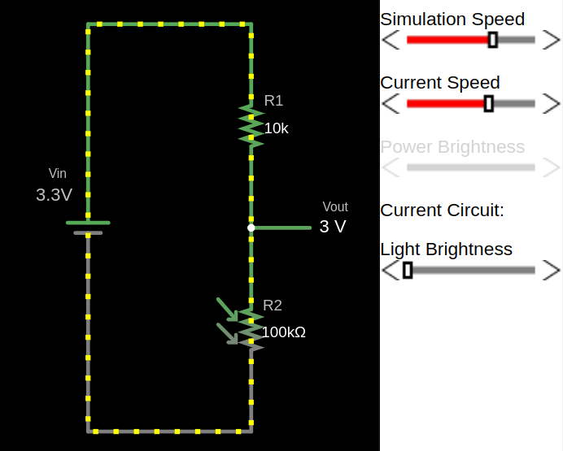LDR 与 LED
Turn on LED(or Lamp) in low Light with Pico
In this exercise, we’ll control an LED based on ambient light levels. The goal is to automatically turn on the LED in low light conditions.
You can try this in a closed room by turning the room light on and off. When you turn off the room-light, the LED should turn on, given that the room is dark enough, and turn off again when the room-light is switched back on. Alternatively, you can adjust the sensitivity threshold or cover the light sensor (LDR) with your hand or some object to simulate different light levels.
Note: You may need to adjust the ADC threshold based on your room’s lighting conditions and the specific LDR you are using.
Setup
Hardware Requirements
- LED – Any standard LED (choose your preferred color).
- LDR (Light Dependent Resistor) – Used to detect light intensity.
- Resistors
- 330Ω – For the LED to limit current and prevent damage. (You might have to choose based on your LED)
- 10kΩ – For the LDR, forming a voltage divider in the circuit. (You might have to choose based on your LDR)
- Jumper Wires – For connecting components on a breadboard or microcontroller.
Circuit to connect LED, LDR with Pico
- One side of the LDR is connected to AGND (Analog Ground).
- The other side of the LDR is connected to GPIO26 (ADC0), which is the analog input pin of the pico2
- A resistor is connected in series with the LDR to create a voltage divider between the LDR and ADC_VREF (the reference voltage for the ADC).
- From the datasheet: “ADC_VREF is the ADC power supply (and reference) voltage, and is generated on Pico 2 by filtering the 3.3V supply. This pin can be used with an external reference if better ADC performance is required”

Action
We’ll use the Embassy HAL for this exercise.
Project from template
To set up the project, run:
cargo generate --git https://github.com/ImplFerris/pico2-template.git --tag v0.1.0
When prompted, give your project a name, like “dracula-ldr” and select embassy as the HAL.
Then, navigate into the project folder:
cd PROJECT_NAME
# For example, if you named your project "dracula-ldr":
# cd dracula-ldr
Interrupt Handler
Let’s set up interrupt handling for the ADC.
#![allow(unused)]
fn main() {
use embassy_rp::adc::InterruptHandler;
bind_interrupts!(struct Irqs {
ADC_IRQ_FIFO => InterruptHandler;
});
}In simple terms, when the ADC completes a conversion and the result is ready, it triggers an interrupt. This tells the pico that the new data is available, so it can process the ADC value. The interrupt ensures that the pico doesn’t need to constantly check the ADC, allowing it to respond only when new data is ready.
Read more about RP2350 interreupts in the datasheet (82th page).
Initialize the Embassy HAL
#![allow(unused)]
fn main() {
let p = embassy_rp::init(Default::default());
}Initialize the ADC
#![allow(unused)]
fn main() {
let mut adc = Adc::new(p.ADC, Irqs, Config::default());
}Configuring the ADC Pin and LED
We set up the ADC input pin (PIN_26) for reading an analog signal. Then we set up an output pin (PIN_15) to control an LED. The LED starts in the low state (Level::Low), meaning it will be off initially.
#![allow(unused)]
fn main() {
let mut p26 = Channel::new_pin(p.PIN_26, Pull::None);
let mut led = Output::new(p.PIN_15, Level::Low);
}Main loop
The logic is straightforward: read the ADC value, and if it’s greater than 3800, turn on the LED; otherwise, turn it off.
#![allow(unused)]
fn main() {
loop {
let level = adc.read(&mut p26).await.unwrap();
if level > 3800 {
led.set_high();
} else {
led.set_low();
}
Timer::after_secs(1).await;
}
}The full code
#![no_std]
#![no_main]
use embassy_executor::Spawner;
use embassy_rp::adc::{Adc, Channel, Config, InterruptHandler};
use embassy_rp::bind_interrupts;
use embassy_rp::block::ImageDef;
use embassy_rp::gpio::{Level, Output, Pull};
use embassy_time::Timer;
use {defmt_rtt as _, panic_probe as _};
#[link_section = ".start_block"]
#[used]
pub static IMAGE_DEF: ImageDef = ImageDef::secure_exe();
bind_interrupts!(struct Irqs {
ADC_IRQ_FIFO => InterruptHandler;
});
#[embassy_executor::main]
async fn main(_spawner: Spawner) {
let p = embassy_rp::init(Default::default());
let mut adc = Adc::new(p.ADC, Irqs, Config::default());
let mut p26 = Channel::new_pin(p.PIN_26, Pull::None);
let mut led = Output::new(p.PIN_15, Level::Low);
loop {
let level = adc.read(&mut p26).await.unwrap();
if level > 3800 {
led.set_high();
} else {
led.set_low();
}
Timer::after_secs(1).await;
}
}Clone the existing project
You can clone (or refer) project I created and navigate to the dracula-ldr folder.
git clone https://github.com/ImplFerris/pico2-embassy-projects
cd pico2-embassy-projects/dracula-ldr/
ADC (Analog to Digital Converter)
An Analog-to-Digital Converter (ADC) is a device used to convert analog signals (continuous signals like sound, light, or temperature) into digital signals (discrete values, typically represented as 1s and 0s). This conversion is necessary for digital systems like microcontrollers (e.g., Raspberry Pi, Arduino) to interact with the real world. For example, sensors that measure temperature or sound produce analog signals, which need to be converted into digital format for processing by digital devices.

ADC Resolution
The resolution of an ADC refers to how precisely the ADC can measure an analog signal. It is expressed in bits, and the higher the resolution, the more precise the measurements.
- 8-bit ADC produces digital values between 0 and 255.
- 10-bit ADC produces digital values between 0 and 1023.
- 12-bit ADC produces digital values between 0 and 4095.
The resolution of the ADC can be expressed as the following formula: \[ \text{Resolution} = \frac{\text{Vref}}{2^{\text{bits}} - 1} \]
Pico
Based on the Pico datasheet, Raspberry Pi Pico has 12-bit 500ksps Analogue to Digital Converter (ADC). So, it provides values ranging from 0 to 4095 (4096 possible values)
\[ \text{Resolution} = \frac{3.3V}{2^{12} - 1} = \frac{3.3V}{4095} \approx 0.000805 \text{V} \approx 0.8 \text{mV} \]
Pins
The Raspberry Pi Pico has four accessible ADC channels on the following GPIOs:
| GPIO Pin | ADC Channel | Function |
|---|---|---|
| GPIO26 | ADC0 | Can be used to read voltage from peripherals. |
| GPIO27 | ADC1 | Can be used to read voltage from peripherals. |
| GPIO28 | ADC2 | Can be used to read voltage from peripherals. |
| GPIO29 | ADC3 | Measures the VSYS supply voltage on the board. |
In pico, ADC operates with a reference voltage set by the supply voltage, which can be measured on pin 35 (ADC_VREF).
ADC Value and LDR Resistance in a Voltage Divider
In a voltage divider with an LDR (Light-Dependent Resistor, core component of a light/brightness sensor) and a fixed resistor, the output voltage \( V_{\text{out}} \) is given by:
\[ V_{\text{out}} = V_{\text{in}} \times \frac{R_{\text{LDR}}}{R_{\text{LDR}} + R_{\text{fixed}}} \]
It is same formula as explained in the previous chapter, just replaced the \({R_2}\) with \({R_{\text{LDR}}}\) and \({R_1}\) with \({R_{\text{fixed}}}\)
- Bright light (low LDR resistance): \( V_{\text{out}} \) decreases, resulting in a lower ADC value.
- Dim light (high LDR resistance): \( V_{\text{out}} \) increases, leading to a higher ADC value.
Example ADC value calculation:
Bright light:
Let’s say the Resistence value of LDR is \(1k\Omega\) in the bright light (and we have \(10k\Omega\) fixed resistor).
\[ V_{\text{out}} = 3.3V \times \frac{1k\Omega}{1k\Omega + 10k\Omega} \approx 0.3V \]
The ADC value is calculated as: \[ \text{ADC value} = \left( \frac{V_{\text{out}}}{V_{\text{ref}}} \right) \times (2^{12} - 1) \approx \left( \frac{0.3}{3.3} \right) \times 4095 \approx 372 \]
Darkness:
Let’s say the Resistence value of LDR is \(140k\Omega \) in very low light.
\[ V_{\text{out}} = 3.3V \times \frac{140k\Omega}{140k\Omega + 10k\Omega} \approx 3.08V \]
The ADC value is calculated as: \[ \text{ADC value} = \left( \frac{V_{\text{out}}}{V_{\text{ref}}} \right) \times (2^{12} - 1) \approx \left( \frac{3.08}{3.3} \right) \times 4095 = 3822 \]
Converting ADC value back to voltage:
Now, if we want to convert the ADC value back to the input voltage, we can multiply the ADC value by the resolution (0.8mV).
For example, let’s take an ADC value of 3822:
\[ \text{Voltage} = 3822 \times 0.8mV = 3057.6mV \approx 3.06V \]
Reference
Thermistor
In this section, we’ll be using a thermistor with the Raspberry Pi Pico. A thermistor is a variable resistor that changes its resistance based on the temperature. The amount of change in resistance depends on its composition. The term comes from combining “thermal” and “resistor.”.
Thermistors are categorized into two types:
-
NTC (Negative Temperature Coefficient):
- Resistance decreases as temperature increases.
- They are primarily used for temperature sensing and inrush current limiting.
- We’ll be using the NTC thermistor to measure temperature in our exercise. 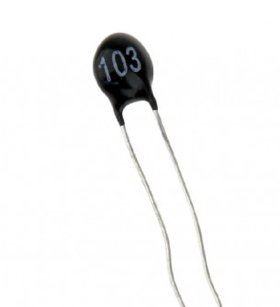
-
PTC (Positive Temperature Coefficient):
- Resistance increases as temperature rises.
- They primarily protect against overcurrent and overtemperature conditions as resettable fuses and are commonly used in air conditioners, medical devices, battery chargers, and welding equipment.
Reference
NTC 与分压器
NTC and Voltage Divider
I have created a circuit on the Falstad website, and you can download the voltage-divider-thermistor.circuitjs.txt ile to import and experiment with. This setup is similar to what we covered in the voltage divider chapter of the LDR section. If you haven’t gone through that section, I highly recommend completing the theory there before continuing.
This circuit includes a 10kΩ thermistor with a resistance of 10kΩ at 25°C. The input voltage \( V_{in} \) is set to 3.3V.
Themistor at 25°C
The thermistor has a resistance of 10kΩ at 25°C, resulting in an output voltage (\( V_{out} \)) of 1.65V.

Thermistor at 38°C
The thermistor’s resistance decreases due to its negative temperature coefficient, altering the voltage divider’s output.

Thermistor at 10°C
The thermistor’s resistance increases, resulting in a higher output voltage (\( V_{out} \)). 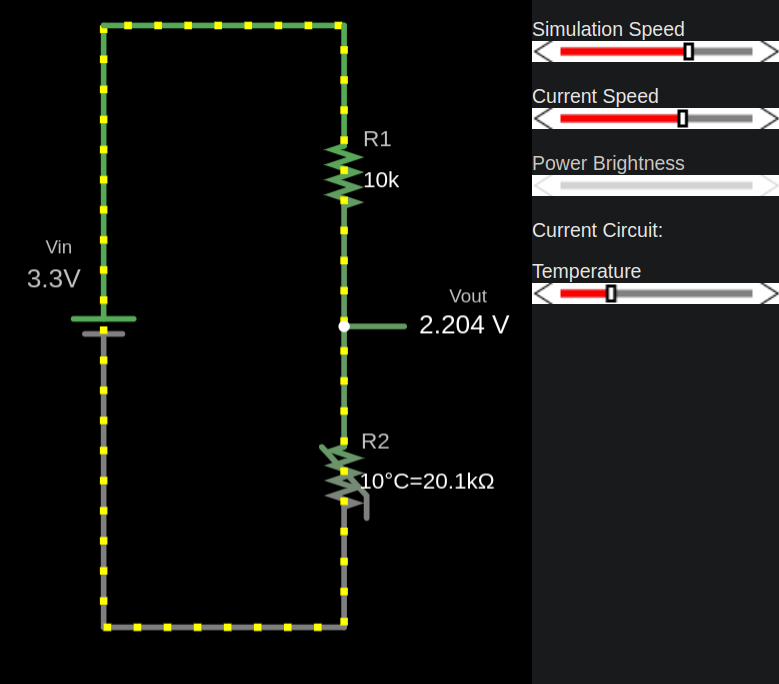
ADC
ADC
When setting up the thermistor with the Pico, we don’t get the voltage directly. Instead, we receive an ADC value (refer to the ADC explanation in the LDR section). In the LDR exercise, we didn’t calculate the resistance corresponding to the ADC value since we only needed to check whether the ADC value increased. However, in this exercise, to determine the temperature, we must convert the ADC value into resistence.
ADC to Resistance
We need resistance value from the adc value for the thermistor temperature calculation(that will be discussed in the next chapters).
We will use this formula to calculate the resistance value from the ADC reading. If you need how it is derived, refer the Deriving Resistance from ADC Value.
\[ R_2 = \frac{R_1}{\left( \frac{\text{ADC_MAX}}{\text{adc_value}} - 1 \right)} \]
Note: If you connected the thermistor to power supply instead of GND. You will need opposite. since thermistor becomes R1.
\[ R_1 = {R_2} \times \left(\frac{\text{ADC_MAX}}{\text{adc_value}} - 1\right) \]
Where:
- R2: The resistance based on the ADC value.
- R1: Reference resistor value (typically 10kΩ)
- ADC_MAX: The maximum ADC value is 4095 (\( 2^{12}\) -1 ) for a 12-bit ADC
- adc_value: ADC reading (a value between 0 and ADC_MAX).
Rust Function
const ADC_MAX: u16 = 4095;
const REF_RES: f64 = 10_000.0;
fn adc_to_resistance(adc_value: u16, ref_res:f64) -> f64 {
let x: f64 = (ADC_MAX as f64/adc_value as f64) - 1.0;
// ref_res * x // If you connected thermistor to power supply
ref_res / x
}
fn main() {
let adc_value = 2000; // Our example ADC value;
let r2 = adc_to_resistance(adc_value, REF_RES);
println!("Calculated Resistance (R2): {} Ω", r2);
}数学
Derivations
You can skip this section if you’d like. It simply explains the math behind deriving the resistance from the ADC value.
ADC to Voltage
The formula to convert an ADC value to voltage is:
\[ V_{\text{out}} = {{V_{in}}} \times \frac{\text{adc_value}}{\text{adc_max}} \]
Where:
- adc_value: The value read from the ADC.
- v_in: The reference input voltage (3.3V for the Pico).
- adc_max: The maximum ADC value is 4095 (\( 2^{12}\) -1 ) for a 12-bit ADC.
Deriving Resistance from ADC Value
We combine the voltage divider formula with ADC Resolution formula to find the Resistance(R2).
Note: It is assumed here that one side of the thermistor is connected to Ground (GND). I noticed that some online articles do the opposite, connecting one side of the thermistor to the power supply instead, which initially caused me some confusion.
Votlage Divider Formula \[ V_{out} = V_{in} \times \frac{R_2}{R_1 + R_2} \]
Step 1:
We can substitue the Vout and make derive it like this
\[ {V_{in}} \times \frac{\text{adc_value}}{\text{adc_max}} = V_{in} \times \frac{R_2}{R_1 + R_2} \]
\[ \require{cancel} \cancel{V_{in}} \times \frac{\text{adc_value}}{\text{adc_max}} = \cancel {V_{in}} \times \frac{R_2}{R_1 + R_2} \]
Step 2:
Lets temperoarily assign the adc_value/adc_max to x for ease of derivation and finally subsitue
\[ x = \frac{\text{adc_value}}{\text{adc_max}} \]
Substituting x into the equation:
\[ x = \frac{R_2}{R_1 + R_2} \]
Rearrange to Solve \( R_2 \)
\[ R_2 = x \times (R_1 + R_2) \]
Expand the right-hand side:
\[ R_2 = x \times R_1 + x \times R_2 \]
Rearrange to isolate \( R_2 \) terms:
\[ R_2 - x \times R_2 = R_1 \times x \]
\[ R_2 \times (1 - x) = R_1 \times x \]
\[ R_2 = R_1 \times \frac{{x}}{{1-x}} \]
\[ R_2 = R_1 \times \frac{1}{\left( \frac{1}{x} - 1 \right)} \]
Step 3
Let’s subsitute the x value back. We need 1/x, lets convert it. \[ \frac{1}{x} = \frac{\text{adc_max}}{\text{adc_value}} \]
Final Formula
\[ R_2 = R_1 \times \frac{1}{\left( \frac{\text{adc_max}}{\text{adc_value}} - 1 \right)} \]
非线性
Non-Linear
Thermistors have a non-linear relationship between resistance and temperature, meaning that as the temperature changes, the resistance doesn’t change in a straight-line pattern. The behavior of thermistors can be described using the Steinhart-Hart equation or the B equation.
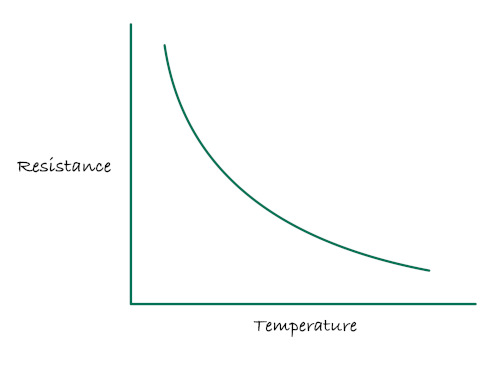The B equation is simple to calculate using the B value, which you can easily find online. On the other hand, the Steinhart equation uses A, B, and C coefficients. Some manufacturers provide these coefficients, but you’ll still need to calibrate and find them yourself since the whole reason for using the Steinhart equation is to get accurate temperature readings.
In the next chapters, we will see in detail how to use B equation and Steinhart-Hart equation to determine the temperature.
Referemce
- The B parameter vs. Steinhart-Hart equation
- Characterising Thermistors – A Quick Primer, Beta Value & Steinhart-Hart Coefficients
B 方程
B Equation
The B equation is simpler but less precise. \[ \frac{1}{T} = \frac{1}{T_0} + \frac{1}{B} \ln \left( \frac{R}{R_0} \right) \]
Where:
- T is the temperature in Kelvin.
- \( T_0 \) is the reference temperature (usually 298.15K or 25°C), where the thermistor’s resistance is known (typically 10kΩ).
- R is the resistance at temperature T.
- \( R_0 \) is the resistance at the reference temperature \( T_0 \) (often 10kΩ).
- B is the B-value of the thermistor.
The B value is a constant usually provided by the manufacturers, changes based on the material of a thermistor. It describes the gradient of the resistive curve over a specific temperature range between two points(i.e \( T_0 \) vs \( R_0 \) and T vs R). You can even rewrite the above formula to get B value yourself by calibrating the resistance at two temperatures.
Example Calculation:
Given:
- Reference temperature \( T_0 = 298.15K \) (i.e., 25°C + 273.15 to convert to Kelvin)
- Reference resistance \( R_0 = 10k\Omega \)
- B-value B = 3950 (typical for many thermistors)
- Measured resistance at temperature T: 10475Ω
Step 1: Apply the B-parameter equation
Substitute the given values:
\[ \frac{1}{T} = \frac{1}{298.15} + \frac{1}{3950} \ln \left( \frac{10,475}{10,000} \right) \]
\[ \frac{1}{T} = 0.003354016 + \frac{1}{3950} \ln(1.0475) \]
\[ \frac{1}{T} = 0.003354016 + (0.000011748) \]
\[ \frac{1}{T} = 0.003365764 \]
Step 2: Calculate the temperature (T)
\[ T = \frac{1}{0.003365764} = 297.10936358 (Kelvin) \]
Convert to Celsius:
\[ T_{Celsius} = 297.10936358 - 273.15 \approx 23.95936358°C \]
Result:
The temperature corresponding to a resistance of 10475Ω is approximately 23.96°C.
Rust function
fn calculate_temperature(current_res: f64, ref_res: f64, ref_temp: f64, b_val: f64) -> f64 {
let ln_value = (current_res/ref_res).ln();
// let ln_value = libm::log(current_res / ref_res); // use this crate for no_std
let inv_t = (1.0 / ref_temp) + ((1.0 / b_val) * ln_value);
1.0 / inv_t
}
fn kelvin_to_celsius(kelvin: f64) -> f64 {
kelvin - 273.15
}
fn celsius_to_kelvin(celsius: f64) -> f64 {
celsius + 273.15
}
const B_VALUE: f64 = 3950.0;
const V_IN: f64 = 3.3; // Input voltage
const REF_RES: f64 = 10_000.0; // Reference resistance in ohms (10kΩ)
const REF_TEMP: f64 = 25.0; // Reference temperature 25°C
fn main() {
let t0 = celsius_to_kelvin(REF_TEMP);
let r = 9546.0; // Measured resistance in ohms
let temperature_kelvin = calculate_temperature(r, REF_RES, t0, B_VALUE);
let temperature_celsius = kelvin_to_celsius(temperature_kelvin);
println!("Temperature: {:.2} °C", temperature_celsius);
}
Steinhart 方程
Steinhart Hart equation
The Steinhart-Hart equation provides a more accurate temperature-resistance relationship over a wide temperature range. \[ \frac{1}{T} = A + B \ln R + C (\ln R)^3 \]
Where:
- T is the temperature in Kelvins. (Formula to calculate kelvin from degree Celsius, K = °C + 273.15)
- R is the resistance at temperature T in Ohms.
- A, B, and C are constants specific to the thermistor’s material, often provided by the manufacturer. For better accuracy, you may need to calibrate and determine these values yourself. Some datasheets provide resistance values at various temperatures, which can also be used to calculate this.
Calibration
To determine the accurate values for A, B, and C, place the thermistor in three temperature conditions: room temperature, ice water, and boiling water. For each condition, measure the thermistor’s resistance using the ADC value and use a reliable thermometer to record the actual temperature. Using the resistance values and corresponding temperatures, calculate the coefficients:
- Assign A to the ice water temperature,
- B to the room temperature, and
- C to the boiling water temperature.
Calculating Steinhart-Hart Coefficients
With three resistance and temperature data points, we can find the A, B and C.
$$ \begin{bmatrix} 1 & \ln R_1 & \ln^3 R_1 \\ 1 & \ln R_2 & \ln^3 R_2 \\ 1 & \ln R_3 & \ln^3 R_3 \end{bmatrix}\begin{bmatrix} A \\ B \\ C \end{bmatrix} = \begin{bmatrix} \frac{1}{T_1} \\ \frac{1}{T_2} \\ \frac{1}{T_3} \end{bmatrix} $$
Where:
- \( R_1, R_2, R_3 \) are the resistance values at temperatures \( T_1, T_2, T_3 \).
Let’s calculate the coefficients
Compute the natural logarithms of resistances: $$ L_1 = \ln R_1, \quad L_2 = \ln R_2, \quad L_3 = \ln R_3 $$
Intermediate calculations: $$ Y_1 = \frac{1}{T_1}, \quad Y_2 = \frac{1}{T_2}, \quad Y_3 = \frac{1}{T_3} $$
$$ \gamma_2 = \frac{Y_2 - Y_1}{L_2 - L_1}, \quad \gamma_3 = \frac{Y_3 - Y_1}{L_3 - L_1} $$
So, finally: $$ C = \left( \frac{ \gamma_3 - \gamma_2 }{ L_3 - L_2} \right) \left(L_1 + L_2 + L_3\right)^{-1} \ $$ $$ B = \gamma_2 - C \left(L_1^2 + L_1 L_2 + L_2^2\right) \ $$ $$ A = Y_1 - \left(B + L_1^2 C\right) L_1 $$
Good news, Everyone! You don’t need to calculate the coefficients manually. Simply provide the resistance and temperature values for cold, room, and hot environments, and use the form below to determine A, B and C
ADC value and Resistance Calculation
Note: if you already have the temperature and corresponding resistance, you can directly use the second table to input those values.
If you have the ADC value and want to calculate the resistance, use this table to find the corresponding resistance at different temperatures. As you enter the ADC value for each temperature, the calculated resistance will be automatically updated in the second table.
To perform this calculation, you’ll need the base resistance of the thermistor, which is essential for determining the resistance at a given temperature based on the ADC value.
Please note that the ADC bits may need to be adjusted if you’re using a different microcontroller. In our case, for the the Raspberry Pi Pico, the ADC resolution is 12 bits.
Coefficients Finder
Adjust the temperature by entering a value in either Fahrenheit or Celsius; the form will automatically convert it to the other format. Provide the resistance corresponding to each temperature, and then click the “Calculate Coefficients” button.
Calculate Temperature from Resistance
Now, with these coefficients, you can calculate the temperature for any given resistance:
Rust function
fn steinhart_temp_calc(
resistance: f64, // Resistance in Ohms
a: f64, // Coefficient A
b: f64, // Coefficient B
c: f64, // Coefficient C
) -> Result<(f64, f64), String> {
if resistance <= 0.0 {
return Err("Resistance must be a positive number.".to_string());
}
// Calculate temperature in Kelvin using Steinhart-Hart equation:
// 1/T = A + B*ln(R) + C*(ln(R))^3
let ln_r = resistance.ln();
let inverse_temperature = a + b * ln_r + c * ln_r.powi(3);
if inverse_temperature == 0.0 {
return Err("Invalid coefficients or resistance leading to division by zero.".to_string());
}
let temperature_kelvin = 1.0 / inverse_temperature;
let temperature_celsius = temperature_kelvin - 273.15;
let temperature_fahrenheit = (temperature_celsius * 9.0 / 5.0) + 32.0;
Ok((temperature_celsius, temperature_fahrenheit))
}
fn main() {
// Example inputs
let a = 2.10850817e-3;
let b = 7.97920473e-5;
let c = 6.53507631e-7;
let resistance = 10000.0;
match steinhart_temp_calc(resistance, a, b, c) {
Ok((celsius, fahrenheit)) => {
println!("Temperature in Celsius: {:.2}", celsius);
println!("Temperature in Fahrenheit: {:.2}", fahrenheit);
}
Err(e) => println!("Error: {}", e),
}
}Referemce
- Thermistor Calculator
- Thermistor Steinhart-Hart Coefficients for Calculating Motor Temperature
- Calibrate Steinhart-Hart Coefficients for Thermistors
- Cooking Thermometer With Steinhart-Hart Correction
Temperature on OLED
In this section, we will measure the temperature in your room and display it on the OLED screen.
Hardware Requirments
- An OLED display: (0.96 Inch I2C/IIC 4-Pin, 128x64 resolution, SSD1306 chip)
- Jumper wires
- NTC 103 Thermistor: 10K OHM, 5mm epoxy coated disc
- 10kΩ Resistor: Used with the thermistor to form a voltage divider
Circuit to connect OLED, Thermistor with Raspberry Pi Pico

- One side of the Thermistor is connected to AGND (Analog Ground).
- The other side of the Thermistor is connected to GPIO26 (ADC0), which is the analog input pin of the pico2
- A resistor is connected in series with the Thermistor to create a voltage divider between the Thermistor and ADC_VREF (the reference voltage for the ADC).
Note:Here, one side of the thermistor is connected to ground, as shown. If you’ve connected it to the power supply instead, you’ll need to use the alternate formula mentioned earlier.
The Flow
- We read the ADC value
- Get resisance value from ADC value
- Calculate temperature using B parameter equation
- Display the ADC, Resistance, Temperature(in Celsius) in the OLED
Action
We’ll use the Embassy HAL for this exercise.
Project from template
To set up the project, run:
cargo generate --git https://github.com/ImplFerris/pico2-template.git --tag v0.1.0
When prompted, give your project a name, like “thermistor” and select embassy as the HAL.
Then, navigate into the project folder:
cd PROJECT_NAME
# For example, if you named your project "thermistor":
# cd thermistor
Additional Crates required
Update your Cargo.toml to add these additional crate along with the existing dependencies.
#![allow(unused)]
fn main() {
ssd1306 = "0.9.0"
heapless = "0.8.0"
libm = "0.2.11"
}ssd1306: Driver for controlling SSD1306 OLED display.heapless: In ano_stdenvironment, Rust’s standardStringtype (which requires heap allocation) is unavailable. This provides stack-allocated, fixed-size data structures. We will be using to store dynamic text, such as ADC, resistance, and temperature values, for display on the OLED screenlibm: Provides essential mathematical functions for embedded environments. We need this to calculate natural logarithm.
Additional imports
#![allow(unused)]
fn main() {
use heapless::String;
use ssd1306::mode::DisplayConfig;
use ssd1306::prelude::DisplayRotation;
use ssd1306::size::DisplaySize128x64;
use ssd1306::{I2CDisplayInterface, Ssd1306};
use embassy_rp::adc::{Adc, Channel};
use embassy_rp::peripherals::I2C1;
use embassy_rp::{adc, bind_interrupts, i2c};
use embassy_rp::gpio::Pull;
use core::fmt::Write;
}Interrupt Handler
We have set up only the ADC interrupt handler for the LDR exercises so far. For this exercise, we also need to set up an interrupt handler for I2C to enable communication with the OLED display.
#![allow(unused)]
fn main() {
bind_interrupts!(struct Irqs {
ADC_IRQ_FIFO => adc::InterruptHandler;
I2C1_IRQ => i2c::InterruptHandler<I2C1>;
});
}ADC related functions
We can hardcode 4095 for the Pico, but here’s a simple function to calculate ADC_MAX based on ADC bits:
#![allow(unused)]
fn main() {
const fn calculate_adc_max(adc_bits: u8) -> u16 {
(1 << adc_bits) - 1
}
const ADC_BITS: u8 = 12; // 12-bit ADC in Pico
const ADC_MAX: u16 = calculate_adc_max(ADC_BITS); // 4095 for 12-bit ADC
}Thermistor specific values
The thermistor I’m using has a 10kΩ resistance at 25°C and a B value of 3950.
#![allow(unused)]
fn main() {
const B_VALUE: f64 = 3950.0;
const REF_RES: f64 = 10_000.0; // Reference resistance in ohms (10kΩ)
const REF_TEMP: f64 = 25.0; // Reference temperature 25°C
}Helper functions
#![allow(unused)]
fn main() {
// We have already covered about this formula in ADC chpater
fn adc_to_resistance(adc_value: u16, ref_res: f64) -> f64 {
let x: f64 = (ADC_MAX as f64 / adc_value as f64) - 1.0;
// ref_res * x // If you connected thermistor to power supply
ref_res / x
}
// B Equation to convert resistance to temperature
fn calculate_temperature(current_res: f64, ref_res: f64, ref_temp: f64, b_val: f64) -> f64 {
let ln_value = libm::log(current_res / ref_res); // Use libm for `no_std`
let inv_t = (1.0 / ref_temp) + ((1.0 / b_val) * ln_value);
1.0 / inv_t
}
fn kelvin_to_celsius(kelvin: f64) -> f64 {
kelvin - 273.15
}
fn celsius_to_kelvin(celsius: f64) -> f64 {
celsius + 273.15
}
}Base setups
First, we set up the Embassy HAL, configure the ADC on GPIO 26, and prepare the I2C interface for communication with the OLED display
#![allow(unused)]
fn main() {
let p = embassy_rp::init(Default::default());
// ADC to read the Vout value
let mut adc = Adc::new(p.ADC, Irqs, adc::Config::default());
let mut p26 = Channel::new_pin(p.PIN_26, Pull::None);
// Setting up I2C send text to OLED display
let sda = p.PIN_18;
let scl = p.PIN_19;
let i2c = i2c::I2c::new_async(p.I2C1, scl, sda, Irqs, i2c::Config::default());
let interface = I2CDisplayInterface::new(i2c);
}Setting Up an SSD1306 OLED Display in Terminal Mode
Next, create a display instance, specifying the display size and orientation. And enable terminal mode.
#![allow(unused)]
fn main() {
let mut display =
Ssd1306::new(interface, DisplaySize128x64, DisplayRotation::Rotate0).into_terminal_mode();
display.init().unwrap();
}Heapless String
This is a heapless string set up with a capacity of 64 characters. The string is allocated on the stack, allowing it to hold up to 64 characters. We use this variable to display the temperature, ADC, and resistance values on the screen.
#![allow(unused)]
fn main() {
let mut buff: String<64> = String::new();
}Convert the Reference Temperature to Kelvin
We defined the reference temperature as 25°C for the thermistor. However, for the equation, we need the temperature in Kelvin. To handle this, we use a helper function to perform the conversion. Alternatively, you could directly hardcode the Kelvin value (298.15 K, which is 273.15 + 25°C) to skip using the function.
#![allow(unused)]
fn main() {
let ref_temp = celsius_to_kelvin(REF_TEMP);
}Loop
In a loop that runs every 1 second(adjust as you require), we read the ADC value, calculate the resistance from ADC, then derive the temperature from resistance, and display the results on the OLED.
Read ADC
We read the ADC value; we also put into the buffer.
#![allow(unused)]
fn main() {
let adc_value = adc.read(&mut p26).await.unwrap();
writeln!(buff, "ADC: {}", adc_value).unwrap();
}ADC To Resistance
We convert the ADC To resistance; we put this also into the buffer.
#![allow(unused)]
fn main() {
let current_res = adc_to_resistance(adc_value, REF_RES);
writeln!(buff, "R: {:.2}", current_res).unwrap();
}Calculate Temperature from Resistance
We use the measured resistance to calculate the temperature in Kelvin using the B-parameter equation.Afterward, we convert the temperature from Kelvin to Celsius.
#![allow(unused)]
fn main() {
let temperature_kelvin = calculate_temperature(current_res, REF_RES, ref_temp, B_VALUE);
let temperature_celsius = kelvin_to_celsius(temperature_kelvin);
}Write the Buffer to Display
#![allow(unused)]
fn main() {
writeln!(buff, "Temp: {:.2} °C", temperature_celsius).unwrap();
display.write_str(&buff).unwrap();
Timer::after_secs(1).await;
}Clear the Buffer and Screen
#![allow(unused)]
fn main() {
buff.clear();
display.clear().unwrap();
}Final code
#![no_std]
#![no_main]
use embassy_executor::Spawner;
use embassy_rp as hal;
use embassy_rp::block::ImageDef;
use embassy_rp::gpio::Pull;
use embassy_time::Timer;
use heapless::String;
use ssd1306::mode::DisplayConfig;
use ssd1306::prelude::DisplayRotation;
use ssd1306::size::DisplaySize128x64;
use ssd1306::{I2CDisplayInterface, Ssd1306};
use {defmt_rtt as _, panic_probe as _};
use embassy_rp::adc::{Adc, Channel};
use embassy_rp::peripherals::I2C1;
use embassy_rp::{adc, bind_interrupts, i2c};
use core::fmt::Write;
/// Tell the Boot ROM about our application
#[link_section = ".start_block"]
#[used]
pub static IMAGE_DEF: ImageDef = hal::block::ImageDef::secure_exe();
bind_interrupts!(struct Irqs {
ADC_IRQ_FIFO => adc::InterruptHandler;
I2C1_IRQ => i2c::InterruptHandler<I2C1>;
});
const fn calculate_adc_max(adc_bits: u8) -> u16 {
(1 << adc_bits) - 1
}
const ADC_BITS: u8 = 12; // 12-bit ADC in Pico
const ADC_MAX: u16 = calculate_adc_max(ADC_BITS); // 4095 for 12-bit ADC
const B_VALUE: f64 = 3950.0;
const REF_RES: f64 = 10_000.0; // Reference resistance in ohms (10kΩ)
const REF_TEMP: f64 = 25.0; // Reference temperature 25°C
// We have already covered about this formula in ADC chpater
fn adc_to_resistance(adc_value: u16, ref_res: f64) -> f64 {
let x: f64 = (ADC_MAX as f64 / adc_value as f64) - 1.0;
// ref_res * x // If you connected thermistor to power supply
ref_res / x
}
// B Equation to convert resistance to temperature
fn calculate_temperature(current_res: f64, ref_res: f64, ref_temp: f64, b_val: f64) -> f64 {
let ln_value = libm::log(current_res / ref_res); // Use libm for `no_std`
let inv_t = (1.0 / ref_temp) + ((1.0 / b_val) * ln_value);
1.0 / inv_t
}
fn kelvin_to_celsius(kelvin: f64) -> f64 {
kelvin - 273.15
}
fn celsius_to_kelvin(celsius: f64) -> f64 {
celsius + 273.15
}
#[embassy_executor::main]
async fn main(_spawner: Spawner) {
let p = embassy_rp::init(Default::default());
// ADC to read the Vout value
let mut adc = Adc::new(p.ADC, Irqs, adc::Config::default());
let mut p26 = Channel::new_pin(p.PIN_26, Pull::None);
// Setting up I2C send text to OLED display
let sda = p.PIN_18;
let scl = p.PIN_19;
let i2c = i2c::I2c::new_async(p.I2C1, scl, sda, Irqs, i2c::Config::default());
let interface = I2CDisplayInterface::new(i2c);
let mut display =
Ssd1306::new(interface, DisplaySize128x64, DisplayRotation::Rotate0).into_terminal_mode();
display.init().unwrap();
let mut buff: String<64> = String::new();
let ref_temp = celsius_to_kelvin(REF_TEMP);
loop {
buff.clear();
display.clear().unwrap();
let adc_value = adc.read(&mut p26).await.unwrap();
writeln!(buff, "ADC: {}", adc_value).unwrap();
let current_res = adc_to_resistance(adc_value, REF_RES);
writeln!(buff, "R: {:.2}", current_res).unwrap();
let temperature_kelvin = calculate_temperature(current_res, REF_RES, ref_temp, B_VALUE);
let temperature_celsius = kelvin_to_celsius(temperature_kelvin);
writeln!(buff, "Temp: {:.2} °C", temperature_celsius).unwrap();
display.write_str(&buff).unwrap();
Timer::after_secs(1).await;
}
}
// Program metadata for `picotool info`.
// This isn't needed, but it's recomended to have these minimal entries.
#[link_section = ".bi_entries"]
#[used]
pub static PICOTOOL_ENTRIES: [embassy_rp::binary_info::EntryAddr; 4] = [
embassy_rp::binary_info::rp_program_name!(c"Blinky Example"),
embassy_rp::binary_info::rp_program_description!(
c"This example tests the RP Pico on board LED, connected to gpio 25"
),
embassy_rp::binary_info::rp_cargo_version!(),
embassy_rp::binary_info::rp_program_build_attribute!(),
];
// End of fileClone the existing project
You can clone (or refer) project I created and navigate to the thermistor folder.
git clone https://github.com/ImplFerris/pico2-embassy-projects
cd pico2-embassy-projects/thermistor/
USB Serial Communication
In this section, we’ll explore how to establish communication between our device (Pico) and a computer(Linux). We’ll demonstrate how to send a simple string from the device(Pico) to the computer, as well as how to send input from the computer to the device.
CDC ACM
The Communication Device Class (CDC) is a standard USB device class defined by the USB Implementers Forum (USB-IF). The Abstract Control Model (ACM) in CDC allows a device to act like a traditional serial port (like old COM ports). It’s commonly used for applications that previously relied on serial COM or UART communication.
Tools for Linux
When you flash the code in this exercise, the device will appear as /dev/ttyACM0 in your computer. To interact with the USB serial port on Linux, you can use tools like minicom, tio (or cat ) to read and send data to and from the device
- minicom: Minicom is a text-based serial port communications program. It is used to talk to external RS-232 devices such as mobile phones, routers, and serial console ports.
- tio: tio is a serial device tool which features a straightforward command-line and configuration file interface to easily connect to serial TTY devices for basic I/O operations.
Rust Crates
We will be using the example taken from the RP-HAL repository. It use two crates: usb-device, an USB stack for embedded devices in Rust, and usbd-serial, which implements the USB CDC-ACM serial port class. The SerialPort class in usbd-serial implements a stream-like buffered serial port and can be used in a similar way to UART.
References
- CDC: Communication Device Class (ACM)
- USB Device CDC ACM Class
- What is the difference between /dev/ttyUSB and /dev/ttyACM?
- Defined Class Codes
Pico to PC
The example provided in the RP-HAL repository sends a simple “Hello, World!” message from the Pico to the computer once the timer ticks reach 2,000,000. To ensure the message is only sent once, we add a check that sends it only on the first occurrence. Also, it polls for any incoming data to the device (Pico). If data is received, it converts it to uppercase and send it back(This is just show communication is working, not just echoing).
We’ll slightly modify the code to make it more fun. Instead of sending “Hello, World!”, we’ll send “Hello, Rust!” to the computer. Wait, I know that’s not the fun part. Here it comes: if you type ‘r’ in the terminal connected via USB serial, the onboard LED will turn on. Type anything else, and the LED will turn off.
Project from template
To set up the project, run:
cargo generate --git https://github.com/ImplFerris/pico2-template.git --tag v0.1.0
When prompted, give your project a name, like “usb-fun” and select RP-HAL as the HAL.
Then, navigate into the project folder:
cd PROJECT_NAME
# For example, if you named your project "usb-fun":
# cd usb-fun
Additional Crates required
Update your Cargo.toml to add these additional crate along with the existing dependencies.
#![allow(unused)]
fn main() {
usbd-serial = "0.2.2"
usb-device = "0.3.2"
}Additional imports
#![allow(unused)]
fn main() {
// USB Device support
use usb_device::{class_prelude::*, prelude::*};
// USB Communications Class Device support
use usbd_serial::SerialPort;
}Set up the USB driver
#![allow(unused)]
fn main() {
let usb_bus = UsbBusAllocator::new(hal::usb::UsbBus::new(
pac.USB,
pac.USB_DPRAM,
clocks.usb_clock,
true,
&mut pac.RESETS,
));
}Set up the USB Communications Class Device driver
#![allow(unused)]
fn main() {
let mut serial = SerialPort::new(&usb_bus);
}Create a USB device with a fake VID and PID
#![allow(unused)]
fn main() {
let mut usb_dev = UsbDeviceBuilder::new(&usb_bus, UsbVidPid(0x16c0, 0x27dd))
.strings(&[StringDescriptors::default()
.manufacturer("implRust")
.product("Ferris")
.serial_number("TEST")])
.unwrap()
.device_class(2) // 2 for the CDC, from: https://www.usb.org/defined-class-codes
.build();
}Sending Message to PC
This part sends “Hello, Rust!” to the PC when the timer count exceeds 2,000,000 by writing the text to the serial port. We ensure the message is sent only once.
#![allow(unused)]
fn main() {
if !said_hello && timer.get_counter().ticks() >= 2_000_000 {
said_hello = true;
// Writes bytes from `data` into the port and returns the number of bytes written.
let _ = serial.write(b"Hello, Rust!\r\n");
}
}Polling for data
Here is the fun part. When you type characters on your computer, they are sent to the Pico via USB serial. On the Pico, we check if the received character matches the letter ‘r’. If it matches, the onboard LED turns on. For any other character, the LED turns off.
#![allow(unused)]
fn main() {
if usb_dev.poll(&mut [&mut serial]) {
let mut buf = [0u8; 64];
if let Ok(count) = serial.read(&mut buf) {
for &byte in &buf[..count] {
if byte == b'r' {
led.set_high().unwrap();
} else {
led.set_low().unwrap();
}
}
}
}
}The Full code
#![no_std]
#![no_main]
use embedded_hal::digital::OutputPin;
use hal::block::ImageDef;
use panic_halt as _;
use rp235x_hal as hal;
use usb_device::{class_prelude::*, prelude::*};
use usbd_serial::SerialPort;
#[link_section = ".start_block"]
#[used]
pub static IMAGE_DEF: ImageDef = hal::block::ImageDef::secure_exe();
const XTAL_FREQ_HZ: u32 = 12_000_000u32;
#[hal::entry]
fn main() -> ! {
let mut pac = hal::pac::Peripherals::take().unwrap();
let mut watchdog = hal::Watchdog::new(pac.WATCHDOG);
let clocks = hal::clocks::init_clocks_and_plls(
XTAL_FREQ_HZ,
pac.XOSC,
pac.CLOCKS,
pac.PLL_SYS,
pac.PLL_USB,
&mut pac.RESETS,
&mut watchdog,
)
.ok()
.unwrap();
let timer = hal::Timer::new_timer0(pac.TIMER0, &mut pac.RESETS, &clocks);
let sio = hal::Sio::new(pac.SIO);
let pins = hal::gpio::Pins::new(
pac.IO_BANK0,
pac.PADS_BANK0,
sio.gpio_bank0,
&mut pac.RESETS,
);
let mut led = pins.gpio25.into_push_pull_output();
let usb_bus = UsbBusAllocator::new(hal::usb::UsbBus::new(
pac.USB,
pac.USB_DPRAM,
clocks.usb_clock,
true,
&mut pac.RESETS,
));
let mut serial = SerialPort::new(&usb_bus);
let mut usb_dev = UsbDeviceBuilder::new(&usb_bus, UsbVidPid(0x16c0, 0x27dd))
.strings(&[StringDescriptors::default()
.manufacturer("implRust")
.product("Ferris")
.serial_number("TEST")])
.unwrap()
.device_class(2) // 2 for the CDC, from: https://www.usb.org/defined-class-codes
.build();
let mut said_hello = false;
loop {
// Send data to the PC
if !said_hello && timer.get_counter().ticks() >= 2_000_000 {
said_hello = true;
// Writes bytes from `data` into the port and returns the number of bytes written.
let _ = serial.write(b"Hello, Rust!\r\n");
}
// Read data from PC
if usb_dev.poll(&mut [&mut serial]) {
let mut buf = [0u8; 64];
if let Ok(count) = serial.read(&mut buf) {
for &byte in &buf[..count] {
if byte == b'r' {
led.set_high().unwrap();
} else {
led.set_low().unwrap();
}
}
}
}
}
}
#[link_section = ".bi_entries"]
#[used]
pub static PICOTOOL_ENTRIES: [hal::binary_info::EntryAddr; 5] = [
hal::binary_info::rp_cargo_bin_name!(),
hal::binary_info::rp_cargo_version!(),
hal::binary_info::rp_program_description!(c"USB Fun"),
hal::binary_info::rp_cargo_homepage_url!(),
hal::binary_info::rp_program_build_attribute!(),
];
Clone the existing project
You can clone (or refer) project I created and navigate to the usb-fun folder.
git clone https://github.com/ImplFerris/pico2-rp-projects
cd pico2-projects/usb-fun/
How to Run ?
The method to flash (run the code) on the Pico is the same as usual. However, we need to set up tio to interact with the Pico through the serial port (/dev/ttyACM0). This allows us to read data from the Pico or send data to it.
tio
Make sure you have tio installed on your system. If not, you can install it using:
apt install tio
Connecting to the Serial Port
Run the following command to connect to the Pico’s serial port:
tio /dev/ttyACM0
This will open a terminal session for communicating with the Pico.
Flashing and Running the Code
Open another terminal, navigate to the project folder, and flash the code onto the Pico as usual:
cargo run
If everything is set up correctly, you should see a “Connected” message in the tio terminal, followed by the “Hello, Rust!” message sent from the Pico.
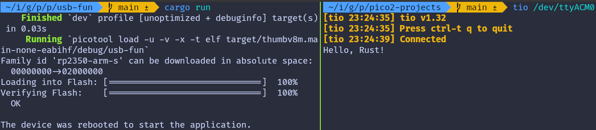Send data to Pico
In the terminal where tio is running, you type that will be sent to the Pico. You won’t see what you type (since we’re not echoing back the input).
If you press the letter ‘r’, the onboard LED will be turned on. If you press any other character, the LED will be turned off.
Embassy version
You can also refer to this project, which demonstrates using USB Serial with the Embassy framework.
git clone https://github.com/ImplFerris/pico2-embassy-projects
cd pico2-embassy-projects/usb-serial/
RFID
In this section, we will use the RFID Card Reader (RC522) module to read data from RFID tags and key fob tags.
What is RFID?
You’ve probably used them without even realizing it; on your apartment key, at the office, in parking lots, or with a contactless credit card. If you’ve got a toll pass in your car or used a hotel keycard, then yep, you’ve already seen them in action.
RFID (Radio Frequency Identification) is a technology that uses radio waves to identify and track objects, animals. It wirelessly transmits the stored data from a tag (containing a chip and antenna) to a reader when in range.
Categories By Range
RFID systems can be categorized by their operating frequency. The three main types are:
-
Low Frequency (LF): Operates at ~125 kHz with a short range (up to 10cm). It’s slower and commonly used in access control and livestock tracking.
-
High Frequency (HF): Operates at 13.56 MHz with a range of 10cm to 1m. It offers moderate speed and is widely used in access control systems, such as office spaces, apartments, hotel keycards, as well as in ticketing, payments, and data transfer. We are going to use this one (RC522 module which operates at 13.56MHz)
-
Ultra-High Frequency (UHF): Operates at 860–960 MHz with a range of up to 12m. It’s faster and commonly used in retail inventory management, anti-counterfeiting, and logistics.
Categories By Power source
RFID tags can either be active or passive, depending on how they are powered.
- Active tags: They have their own battery and can send signals on their own. These are typically used on large objects like rail cars, big reusable containers, and assets that need to be tracked over long distances.
- Passive tags: Unlike active tags, passive tags don’t have a battery. They rely on the electromagnetic fields emitted by the RFID reader to power up. Once energized, they transmit data using radio waves. These are the most common type of RFID tags and are likely the ones you’ve encountered in everyday life. If you guessed it correctly, yes the RC522 is the passive tags.
Components:
RFID systems consist of an RFID Reader, technically referred to as the PCD (Proximity Coupling Device). In passive RFID tags, the reader powers the tag using an electromagnetic field. The tags themselves are called RFID Tags or, in technical terms, PICCs (Proximity Integrated Circuit Cards). It is good to know its technical terms also, it will come in handy if you want to refer the datasheet and other documents.
Reader typically include memory components like FIFO buffers and EEPROM. They also incorporate cryptographic features to ensure secure communication with Tags, allowing only authenticated RFID readers to interact with them. For example, RFID readers from NXP Semiconductors use the Crypto-1 cipher for authentication.
Each RFID tag has a hardcoded UID (Unique Identifier), which can be 4, 7, or 10 bytes in size.
References
Meet the module
We will be using the RC522 RFID Card Reader Module, which is built on the MFRC522 IC (designed by NXP), operates at 13.56 MHz . This module is widely available online at an affordable price and typically comes with an RFID tag (MIFARE Classic 1K) and key fob, each containing 1KB of memory. MFRC522 Datasheet can be found here.

The microcontroller can communicate with the reader using SPI, UART, I2C. It also has an IRQ (Interrupt Request) pin that can trigger interrupts, so the microcontroller(pico) knows when the tag is nearby, instead of constantly asking the reader (kind of like “Are we there yet?”).
Unfortunately, the library we’re going to use doesn’t support this feature yet, so we won’t be using it for now. We’ll update this section once support is added. So, are we there yet?
Additional Information about the Module:
- Supported Standards: ISO/IEC 14443 A / MIFARE
- Card Reading Distance: 0~50 mm
- Idle Current: 10–13 mA
- Operating Current: 13–26 mA
- Operating Voltage: DC 3.3V (⚠️ Do not use 5V or higher, it will cause damage).
MIFARE
MIFARE is a series of integrated circuit (IC) chips used in contactless smart cards and proximity cards, developed by NXP Semiconductors. MIFARE cards follow ISO/IEC 14443A standards and use encryption methods such as Crypto-1 algorithm. The most common family is MIFARE Classic, with a subtype called MIFARE Classic EV1.
Memory Layout
The MIFARE Classic 1K card is divided into 16 sectors, with each sector containing 4 blocks. Each block can hold up to 16 bytes, resulting in a total memory capacity of 1KB.
16 sectors × 4 blocks/sector × 16 bytes/block = 1024 bytes = 1KB

Sector Trailer
The last block of each sector, known as the “trailer” holds two secret keys and programmable access conditions for the blocks within that sector. Each sector has its own pair of keys (KeyA and KeyB), enabling support for multiple applications with a key hierarchy.
The MIFARE Classic 1K card is pre-configured with the default key FF FF FF FF FF FF for both KeyA and KeyB. When reading the trailer block, KeyA values are returned as all zeros (00 00 00 00 00 00), while KeyB returned as it is.
By default, the access bytes (6, 7, and 8 of the trailer) are set to FF 07 80h. You can refer the 10th page for the datasheet for more information. And the 9th byte can be used for storing data.
| Byte Number | ||||||||||||||||
|---|---|---|---|---|---|---|---|---|---|---|---|---|---|---|---|---|
| 0 | 1 | 2 | 3 | 4 | 5 | 6 | 7 | 8 | 9 | 10 | 11 | 12 | 13 | 14 | 15 | |
| Description | KEY A | Access Bits | USER Data | KEY B | ||||||||||||
| Default Data | FF | FF | FF | FF | FF | FF | FF | 07 | 80 | 69 | FF | FF | FF | FF | FF | FF |
Manufacturer Block
The first block (block 0) of the first sector(sector 0) contains IC manufacturer’s data including the UID. This block is write-protected.
Data Block
Each sector has a trailer block, so only 3 blocks can be used for data storage in each sector. However, the first sector only has 2 usable blocks because the first block stores manufacturer data.
To read or write the data, you first need to authenticate with either Key A or Key B of that sector.
The data blocks can be further classified into two categories based on the access bits(we will explain about it later).
- read/write block: These are standard data blocks that allow basic operations such as reading and writing data.
- value block: These blocks are ideal for applications like electronic purses, where they are commonly used to store numeric values, such as account balances. So, you can perform incrementing (e.g., adding $10 to a balance) or decrementing (e.g., deducting $5 for a transaction).
Reference
- Datasheet: MIFARE Classic EV1 1K - Mainstream contactless smart card IC for fast and easy solution development
Flow
When you bring the tag near the reader, it goes into a state where it waits for either a REQA (Request) or WUPA (Wake Up) command.
To check if any tag is nearby, we send the REQA command in a loop. If the tag is nearby, it responds with an ATQA (Answer to Request).
Once we get the response, we select the card, and it sends back its UID (we won’t dive into the full technical details involved in this process). After that, we authenticate the sector we want to read or write from. Once we’re done with our operation, we send a HLTA command to put the card in the HALT state.
Note: Once the card is in the HALT state, only the WUPA command (reminds me of Chandler from Friends saying “WOOPAAH”) can wake it up and let us do more operations.

电路
Circuit
The introduction has become quite lengthy, so we will move the circuit diagram for connecting the Pico to the RFID reader to a separate page. Additionally, there are more pins that involved in this than any of the previous components we’ve used so far.
Pinout diagram of RC522
There are 8 pins in the RC522 RFID module. 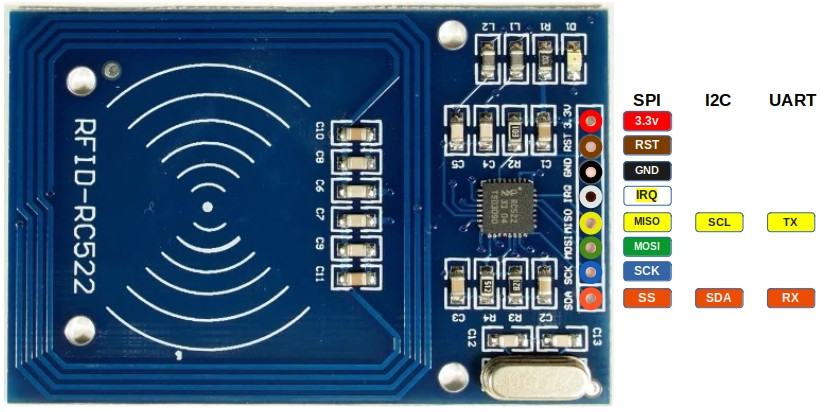
{kind=link}
| Pin | SPI Function | I²C Function | UART Function | Description |
|---|---|---|---|---|
| 3.3V | Power | Power | Power | Power supply (3.3V). |
| GND | Ground | Ground | Ground | Ground connection. |
| RST | Reset | Reset | Reset | Reset the module. |
| IRQ | Interrupt (optional) | Interrupt (optional) | Interrupt (optional) | Interrupt Request (IRQ) informs the microcontroller when an RFID tag is detected. Without using IRQ, the microcontroller would need to constantly poll the module. |
| MISO | Master-In-Slave-Out | SCL | TX | In SPI mode, it acts as Master-In-Slave-Out (MISO). In I²C mode, it functions as the clock line (SCL). In UART mode, it acts as the transmit pin (TX). |
| MOSI | Master-Out-Slave-In | - | - | In SPI mode, it acts as Master-Out-Slave-In (MOSI). |
| SCK | Serial Clock | - | - | In SPI mode, it acts as the clock line that synchronizes data transfer. |
| SDA | Slave Select (SS) | SDA | RX | In SPI mode, it acts as the Slave select (SS, also referred as Chip Select). In I²C mode, it serves as the data line (SDA). In UART mode, it acts as the receive pin (RX). |
Connecting the RFID Reader to the Raspberry Pi Pico
To establish communication between the Raspberry Pi Pico and the RFID Reader, we will use the SPI (Serial Peripheral Interface) protocol. The SPI interface can handle data speed up to 10 Mbit/s. We wont be utilizing the following Pins: RST, IRQ at the moment.
| Pico Pin | Wire | RFID Reader Pin |
|---|---|---|
| 3.3V |
|
3.3V |
| GND |
|
GND |
| GPIO 4 |
|
MISO |
| GPIO 5 |
|
SDA |
| GPIO 6 |
|
SCK |
| GPIO 7 |
|
MOSI |

Read UID
Alright, let’s get to the fun part and dive into some action! We’ll start by writing a simple program to read the UID of the RFID tag.
mfrc522 Driver
We will be using the awesome crate “mfrc522”. It is still under development. However, it has everything what we need for purposes.
USB Serial
To display the tag data, we’ll use USB serial, which we covered in the last chapter. This will allow us to read from the RFID tag and display the UID on the computer.
Project from template
To set up the project, run:
cargo generate --git https://github.com/ImplFerris/pico2-template.git --tag v0.1.0
When prompted, give your project a name, like “rfid-uid” and select RP-HAL as the HAL.
Then, navigate into the project folder:
cd PROJECT_NAME
# For example, if you named your project "rfid-uid":
# cd rfid-uid
Additional Crates required
Update your Cargo.toml to add these additional crate along with the existing dependencies.
#![allow(unused)]
fn main() {
usbd-serial = "0.2.2"
usb-device = "0.3.2"
heapless = "0.8.0"
mfrc522 = "0.8.0"
embedded-hal-bus = "0.2.0"
}We have added embedded-hal-bus, which provides the necessary traits for SPI and I2C buses. This is required for interfacing the Pico with the RFID reader.
Additional imports
#![allow(unused)]
fn main() {
use hal::fugit::RateExtU32;
use core::fmt::Write;
// to prepare buffer with data before writing into USB serial
use heapless::String;
// for setting up USB Serial
use usb_device::{class_prelude::*, prelude::*};
use usbd_serial::SerialPort;
// Driver for the MFRC522
use mfrc522::{comm::blocking::spi::SpiInterface, Mfrc522};
use embedded_hal_bus::spi::ExclusiveDevice;
}Make sure to check out the USB serial tutorial for setting up the USB serial. We won’t go over the setup here to keep it simple.
Helper Function to Print UID in Hex
We’ll use this helper function to convert the u8 byte array (in this case UID) into a printable hex string. You could also just use raw bytes and enable hex mode in tio(requires latest version) or minicom, but I find this approach easier. In hex mode, it prints everything in hex, including normal text.
#![allow(unused)]
fn main() {
fn print_hex_to_serial<B: UsbBus>(data: &[u8], serial: &mut SerialPort<B>) {
let mut buff: String<64> = String::new();
for &d in data.iter() {
write!(buff, "{:02x} ", d).unwrap();
}
serial.write(buff.as_bytes()).unwrap();
}
}Setting Up the SPI for the RFID Reader
Now, let’s configure the SPI bus and the necessary pins to communicate with the RFID reader.
#![allow(unused)]
fn main() {
let spi_mosi = pins.gpio7.into_function::<hal::gpio::FunctionSpi>();
let spi_miso = pins.gpio4.into_function::<hal::gpio::FunctionSpi>();
let spi_sclk = pins.gpio6.into_function::<hal::gpio::FunctionSpi>();
let spi_bus = hal::spi::Spi::<_, _, _, 8>::new(pac.SPI0, (spi_mosi, spi_miso, spi_sclk));
let spi_cs = pins.gpio5.into_push_pull_output();
let spi = spi_bus.init(
&mut pac.RESETS,
clocks.peripheral_clock.freq(),
1_000.kHz(),
embedded_hal::spi::MODE_0,
);
}Getting the SpiDevice from SPI Bus
To work with the mfrc522 crate, we need an SpiDevice. Since we only have the SPI bus from RP-HAL, we’ll use the embedded_hal_bus crate to get the SpiDevice from the SPI bus.
#![allow(unused)]
fn main() {
let spi = ExclusiveDevice::new(spi, spi_cs, timer).unwrap();
}Initialize the mfrc522
#![allow(unused)]
fn main() {
let itf = SpiInterface::new(spi);
let mut rfid = Mfrc522::new(itf).init().unwrap();
}Read the UID and Print
The main logic for reading the UID is simple. We continuously send the REQA command. If a tag is present, it send us the ATQA response. We then use this response to select the tag and retrieve the UID.
Once we have the UID, we use our helper function to print the UID bytes in hex format via USB serial.
#![allow(unused)]
fn main() {
loop {
// to estabilish USB serial
let _ = usb_dev.poll(&mut [&mut serial]);
if let Ok(atqa) = rfid.reqa() {
if let Ok(uid) = rfid.select(&atqa) {
serial.write("\r\nUID: \r\n".as_bytes()).unwrap();
print_hex_to_serial(uid.as_bytes(), &mut serial);
timer.delay_ms(500);
}
}
}
}Clone the existing project
You can clone (or refer) project I created and navigate to the rfid-uid folder.
git clone https://github.com/ImplFerris/pico2-rp-projects
cd pico2-projects/rfid-uid/
How to Run ?
The method to flash (run the code) on the Pico is the same as usual. However, we need to set up tio to interact with the Pico through the serial port (/dev/ttyACM0). This allows us to read data from the Pico or send data to it.
tio
Make sure you have tio installed on your system. If not, you can install it using:
apt install tio
Connecting to the Serial Port
Run the following command to connect to the Pico’s serial port:
tio /dev/ttyACM0
This will open a terminal session for communicating with the Pico.
Flashing and Running the Code
Open another terminal, navigate to the project folder, and flash the code onto the Pico as usual:
cargo run
If everything is set up correctly, you should see a “Connected” message in the tio terminal.
Reading the UID
Now, bring the RFID tag near the reader. You should see the UID bytes displayed in hex format on the USB serial terminal.

UID 匹配时点亮 LED
Turn on LED on UID Match
In this section, we’ll use the UID obtained in the previous chapter and hardcode it into our program. The LED will turn on only when the matching RFID tag is nearby; otherwise, it will remain off. When you bring the RFID tag close, the LED will light up. If you bring a different tag, like a key fob or any other RFID tag, the LED will turn off.
Logic
It is very simple straightforward logic.
#![allow(unused)]
fn main() {
let mut led = pins.gpio25.into_push_pull_output();
// Replace the UID Bytes with your tag UID
const TAG_UID: [u8; 4] = [0x13, 0x37, 0x73, 0x31];
loop {
led.set_low().unwrap();
if let Ok(atqa) = rfid.reqa() {
if let Ok(uid) = rfid.select(&atqa) {
if *uid.as_bytes() == TAG_UID {
led.set_high().unwrap();
timer.delay_ms(500);
}
}
}
}
}Clone the existing project
You can clone (or refer) project I created and navigate to the rfid-led folder.
git clone https://github.com/ImplFerris/pico2-rp-projects
cd pico2-projects/rfid-led/
Light it Up
Lets flash the pico with our program.
cargo run
Now bring the RFID tag near the RFID reader, the onboard LED on the Pico should turn on. Next, try bringing the key fob closer to the reader, and the LED will turn off. Alternatively, you can first read the key fob UID and hardcode it into the program to see the opposite behavior.
Read the data
In this section, we’ll read all the blocks from the first sector (sector 0). As we mentioned earlier, to read or write to a specific block on the RFID tag, we first need to authenticate with the corresponding sector.
Authentication
Most tags come with a default key, typically 0xFF repeated six times. You may need to check the documentation to find the default key or try other common keys. For the RFID reader we are using, the default key is 0xFF repeated six times.
For authentication, we need:
- The tag’s UID (obtained using the REQA and Select commands).
- The block number within the sector.
- The key (hardcoded in this case).
Read the block
After successful authentication, we can read data from each block using the mf_read function from the mfrc522 crate. If the read operation succeeds, the function returns 16 bytes of data from the block. This data will then be converted into a hex string and sent to the USB serial output.
The first sector (sector 0) consists of 4 blocks, with absolute block numbers ranging from 0 to 3. For higher sectors, the absolute block numbers increase accordingly (e.g., for sector 1, the blocks are 4, 5, 6, 7).
#![allow(unused)]
fn main() {
fn read_sector<E, COMM: mfrc522::comm::Interface<Error = E>, B: UsbBus>(
uid: &mfrc522::Uid,
sector: u8,
rfid: &mut Mfrc522<COMM, mfrc522::Initialized>,
serial: &mut SerialPort<B>,
) -> Result<(), &'static str> {
const AUTH_KEY: [u8; 6] = [0xFF; 6];
let block_offset = sector * 4;
rfid.mf_authenticate(uid, block_offset, &AUTH_KEY)
.map_err(|_| "Auth failed")?;
for abs_block in block_offset..block_offset + 4 {
let data = rfid.mf_read(abs_block).map_err(|_| "Read failed")?;
print_hex_to_serial(&data, serial);
serial
.write("\r\n".as_bytes())
.map_err(|_| "Write failed")?;
}
Ok(())
}
}The main loop
The main loop operates similarly to what we covered in the previous chapter. After selecting a tag, we proceed to read its blocks. Once the block data is read, the loop sends the HLTA and stop_crypto1 commands to put the card in HALT state.
#![allow(unused)]
fn main() {
loop {
let _ = usb_dev.poll(&mut [&mut serial]);
if let Ok(atqa) = rfid.reqa() {
if let Ok(uid) = rfid.select(&atqa) {
if let Err(e) = read_sector(&uid, 0, &mut rfid, &mut serial) {
serial.write(e.as_bytes()).unwrap();
}
rfid.hlta().unwrap();
rfid.stop_crypto1().unwrap();
}
}
}
}Clone the existing project
You can clone (or refer) project I created and navigate to the rfid-read folder.
git clone https://github.com/ImplFerris/pico2-rp-projects
cd pico2-projects/rfid-read/
How to Run ?
The method to flash (run the code) on the Pico is the same as usual. However, we need to set up tio to interact with the Pico through the serial port (/dev/ttyACM0). This allows us to read data from the Pico or send data to it.
Connecting to the Serial Port
Run the following command to connect to the Pico’s serial port:
tio /dev/ttyACM0
This will open a terminal session for communicating with the Pico.
Flashing and Running the Code
Open another terminal, navigate to the project folder, and flash the code onto the Pico as usual:
cargo run
If everything is set up correctly, you should see a “Connected” message in the tio terminal.
Reading the UID
Bring the RFID tag close to the reader, and the USB serial terminal will display the data bytes read from the blocks of the first sector (sector 0).

转储存储区
Dump Entire Memory
You’ve learned how to read the data from each block of the first sector(sector 0) by authenticating into it. Now, we will loop through each sector. Re-Authentication is required every time we move to a new sector. For each sector, we will display the 16-byte data from every 4 blocks.
To make it clearer, we’ll add some formatting and labels, indicating which sector and block we’re referring to (both absolute and relative block numbers to the sector), as well as whether the block is a sector trailer or a data block.
Loop through the sector
We will create a separate function to loop through all 16 sectors (sectors 0 to 15), read all the blocks within each sector, and print their data.
#![allow(unused)]
fn main() {
fn dump_memory<E, COMM: mfrc522::comm::Interface<Error = E>, B: UsbBus>(
uid: &mfrc522::Uid,
rfid: &mut Mfrc522<COMM, mfrc522::Initialized>,
serial: &mut SerialPort<B>,
) -> Result<(), &'static str> {
let mut buff: String<64> = String::new();
for sector in 0..16 {
// Printing the Sector number
write!(buff, "\r\n-----------SECTOR {}-----------\r\n", sector).unwrap();
serial.write(buff.as_bytes()).unwrap();
buff.clear();
read_sector(uid, sector, rfid, serial)?;
}
Ok(())
}
}Labels
The read_sector function follows the same logic as before, but with added formatting and labels. It now prints the absolute block number, the block number relative to the sector, and labels for the manufacturer data (MFD) block and sector trailer blocks.
#![allow(unused)]
fn main() {
fn read_sector<E, COMM: mfrc522::comm::Interface<Error = E>, B: UsbBus>(
uid: &mfrc522::Uid,
sector: u8,
rfid: &mut Mfrc522<COMM, mfrc522::Initialized>,
serial: &mut SerialPort<B>,
) -> Result<(), &'static str> {
const AUTH_KEY: [u8; 6] = [0xFF; 6];
let mut buff: String<64> = String::new();
let block_offset = sector * 4;
rfid.mf_authenticate(uid, block_offset, &AUTH_KEY)
.map_err(|_| "Auth failed")?;
for abs_block in block_offset..block_offset + 4 {
let rel_block = abs_block - block_offset;
let data = rfid.mf_read(abs_block).map_err(|_| "Read failed")?;
// Prining the Block absolute and relative numbers
write!(buff, "\r\nBLOCK {} (REL: {}) | ", abs_block, rel_block).unwrap();
serial.write(buff.as_bytes()).unwrap();
buff.clear();
// Printing the block data
print_hex_to_serial(&data, serial);
// Printing block type
let block_type = get_block_type(sector, rel_block);
write!(buff, "| {} ", block_type).unwrap();
serial.write(buff.as_bytes()).unwrap();
buff.clear();
}
serial
.write("\r\n".as_bytes())
.map_err(|_| "Write failed")?;
Ok(())
}
}We will create a small helper function to determine the block type based on the sector and its relative block number.
#![allow(unused)]
fn main() {
fn get_block_type(sector: u8, rel_block: u8) -> &'static str {
match rel_block {
0 if sector == 0 => "MFD",
3 => "TRAILER",
_ => "DATA",
}
}
}The main loop
There isn’t much change in the main loop. We just call the dump_memory function instead of read_sector.
#![allow(unused)]
fn main() {
loop {
let _ = usb_dev.poll(&mut [&mut serial]);
if let Ok(atqa) = rfid.reqa() {
if let Ok(uid) = rfid.select(&atqa) {
if let Err(e) = dump_memory(&uid, &mut rfid, &mut serial) {
serial.write(e.as_bytes()).unwrap();
}
rfid.hlta().unwrap();
rfid.stop_crypto1().unwrap();
}
}
}
}Clone the existing project
You can clone (or refer) project I created and navigate to the rfid-dump folder.
git clone https://github.com/ImplFerris/pico2-rp-projects
cd pico2-projects/rfid-dump/
Dump
When you run the program and bring your tag or key fob close, you should see output like this. If you notice the 0x40..0x43 bytes in the block 18 (the block 2 of the sector 4) and wonder why it’s there; good catch! That’s the custom data I wrote to the tag.

Write Data
We will write data into block 2 of sector 4. First, we will print the data in the block before writing to it, and then again after writing. To perform the write operation, we will use the mf_write function from the mfrc522 crate.
Accidentally writing to the wrong block and overwriting the trailer block may alter the authentication key or access bits, which could make the sector unusable.
Write function
We will use this function to write data to the block. The mf_write function requires the absolute block number, which we will calculate using the sector number and its relative block number.
#![allow(unused)]
fn main() {
fn write_block<E, COMM: mfrc522::comm::Interface<Error = E>>(
uid: &mfrc522::Uid,
sector: u8,
rel_block: u8,
data: [u8; 16],
rfid: &mut Mfrc522<COMM, mfrc522::Initialized>,
) -> Result<(), &'static str> {
const AUTH_KEY: [u8; 6] = [0xFF; 6];
let block_offset = sector * 4;
let abs_block = block_offset + rel_block;
rfid.mf_authenticate(uid, block_offset, &AUTH_KEY)
.map_err(|_| "Auth failed")?;
rfid.mf_write(abs_block, data).map_err(|_| "Write failed")?;
Ok(())
}
}The main loop
The main loop begins by reading and printing the current content of a specified block before writing new data to it. The write_block function is used to write the constant DATA, which must fill the entire 16-byte block. Any unused bytes are padded with null bytes (0x00).
#![allow(unused)]
fn main() {
let target_sector = 4;
let rel_block = 2;
const DATA: [u8; 16] = [
b'i', b'm', b'p', b'l', b'R', b'u', b's', b't', // "implRust"
0x00, 0x00, 0x00, 0x00, 0x00, 0x00, 0x00, 0x00, // Remaining bytes as 0x00
];
loop {
let _ = usb_dev.poll(&mut [&mut serial]);
if let Ok(atqa) = rfid.reqa() {
if let Ok(uid) = rfid.select(&atqa) {
serial
.write("\r\n----Before Write----\r\n".as_bytes())
.unwrap();
if let Err(e) = read_sector(&uid, target_sector, &mut rfid, &mut serial) {
serial.write(e.as_bytes()).unwrap();
}
if let Err(e) = write_block(&uid, target_sector, rel_block, DATA, &mut rfid) {
serial.write(e.as_bytes()).unwrap();
}
serial
.write("\r\n----After Write----\r\n".as_bytes())
.unwrap();
if let Err(e) = read_sector(&uid, target_sector, &mut rfid, &mut serial) {
serial.write(e.as_bytes()).unwrap();
}
rfid.hlta().unwrap();
rfid.stop_crypto1().unwrap();
}
}
}
}Clone the existing project
You can clone (or refer) project I created and navigate to the rfid-write folder.
git clone https://github.com/ImplFerris/pico2-rp-projects
cd pico2-projects/rfid-write/
Output
When you run the program, the output will display the hex representation of “implRust” visible in the third row.

更改认证密钥
Changing the Authentication Key
Let’s change the authentication key (KeyA) for sector 1. By default, it is set to FF FF FF FF FF FF. We’ll update it to 52 75 73 74 65 64 which is hex for “Rusted.” To do this, we need to modify the trailer block (block 3) of sector 1 while leaving the rest of the sector untouched.
Before proceeding, it is a good idea to verify the current contents of this block. Run the Dump Memory or Read Data program to check.
The MIFARE Classic 1K card is pre-configured with the default key FF FF FF FF FF FF for both KeyA and KeyB. When reading the trailer block, KeyA values are returned as all zeros (00 00 00 00 00 00), while KeyB returned as it is.
We’ll also modify the KeyB contents to verify that the write was successful. We’ll set KeyB to the hex bytes of “Ferris” (46 65 72 72 69 73).
Before writing, the access bytes and KeyB values in your block should mostly match what I have, but double-checking is always better than guessing.
Here’s the plan:
- In the program, we hardcode the default key (
FF FF FF FF FF FF) into a variable namedcurrent_key. - Set the
new_keytoRusted(in hex bytes). This is necessary to print the block content after writing; otherwise, we’ll get an auth error. - The program will print the block’s contents both before and after writing.
Once the key is updated, bring the tag nearby again. You will likely see an “Auth failed” error. If you’re wondering why, congrats-you figured it out! The new key was successfully written, so the hardcoded current_key no longer works. To verify, modify the read-data program to use the new key (Rusted) and try again.
Key and Data
The DATA array contains the new KeyA (“Rusted” in hex), access bits, and KeyB (“Ferris” in hex). The current_key is set to the default FF FF FF FF FF FF, and new_key is the first 6 bytes of DATA, which is “Rusted”.
#![allow(unused)]
fn main() {
let target_sector = 1;
let rel_block = 3;
const DATA: [u8; 16] = [
0x52, 0x75, 0x73, 0x74, 0x65, 0x64, // Key A: "Rusted"
0xFF, 0x07, 0x80, 0x69, // Access bits and trailer byte
0x46, 0x65, 0x72, 0x72, 0x69, 0x73, // Key B: "Ferris"
];
let current_key = &[0xFF; 6];
let new_key: &[u8; 6] = &DATA[..6].try_into().unwrap();
}Write Block function
We have slighly modified the write_block function to accept key as argument.
#![allow(unused)]
fn main() {
fn write_block<E, COMM: mfrc522::comm::Interface<Error = E>>(
uid: &mfrc522::Uid,
sector: u8,
rel_block: u8,
data: [u8; 16],
key: &[u8; 6],
rfid: &mut Mfrc522<COMM, mfrc522::Initialized>,
) -> Result<(), &'static str> {
let block_offset = sector * 4;
let abs_block = block_offset + rel_block;
rfid.mf_authenticate(uid, block_offset, key)
.map_err(|_| "Auth failed")?;
rfid.mf_write(abs_block, data).map_err(|_| "Write failed")?;
Ok(())
}
}Read Sector function
We have done similar modification for the read_sector function also.
#![allow(unused)]
fn main() {
fn read_sector<E, COMM: mfrc522::comm::Interface<Error = E>, B: UsbBus>(
uid: &mfrc522::Uid,
sector: u8,
key: &[u8; 6],
rfid: &mut Mfrc522<COMM, mfrc522::Initialized>,
serial: &mut SerialPort<B>,
) -> Result<(), &'static str> {
let block_offset = sector * 4;
rfid.mf_authenticate(uid, block_offset, key)
.map_err(|_| "Auth failed")?;
for abs_block in block_offset..block_offset + 4 {
let data = rfid.mf_read(abs_block).map_err(|_| "Read failed")?;
print_hex_to_serial(&data, serial);
serial
.write("\r\n".as_bytes())
.map_err(|_| "Write failed")?;
}
Ok(())
}
}The main loop
There’s nothing new in the main loop. All the read and write functions are ones you’ve already seen. We’re just printing the sector content before and after changing the key.
#![allow(unused)]
fn main() {
loop {
let _ = usb_dev.poll(&mut [&mut serial]);
if let Ok(atqa) = rfid.reqa() {
if let Ok(uid) = rfid.select(&atqa) {
serial
.write("\r\n----Before Write----\r\n".as_bytes())
.unwrap();
if let Err(e) = read_sector(&uid, target_sector, current_key, &mut rfid, &mut serial) {
serial.write(e.as_bytes()).unwrap();
}
if let Err(e) =
write_block(&uid, target_sector, rel_block, DATA, current_key, &mut rfid)
{
serial.write(e.as_bytes()).unwrap();
}
serial
.write("\r\n----After Write----\r\n".as_bytes())
.unwrap();
if let Err(e) = read_sector(&uid, target_sector, new_key, &mut rfid, &mut serial) {
serial.write(e.as_bytes()).unwrap();
}
rfid.hlta().unwrap();
rfid.stop_crypto1().unwrap();
}
}
}
}Clone the existing project
You can clone (or refer) project I created and navigate to the rfid-change-key folder.
git clone https://github.com/ImplFerris/pico2-rp-projects
cd pico2-projects/rfid-change-key/
Output
As you can see in the output, when you run the program, it will display the contents of the target block before and after writing. After we change the key, bringing the tag back to the reader will result in an “auth failed” message because the current_key has been changed; The new key is 52 75 73 74 65 64 (Rusted).

You can also modify the read data program we used earlier with the new key to verify it.
Access Control
The tag includes access bits that enable access control for the data stored in the tag. This chapter will explore how these access bits function. This section might feel a bit overwhelming, so I’ll try to make it as simple and easy to understand as possible.
Be careful when writing the access bits, as incorrect values can make the sector unusable.
Permissions
These are the fundamental permissions that will be used to define access conditions. The table explains each permission operation and specifies the blocks to which it is applicable: normal data blocks (read/write), value blocks, or sector trailers.
| Operation | Description | Applicable for Block Type |
|---|---|---|
| Read | Reads one memory block | Read/Write, Value, Sector Trailer |
| Write | Writes one memory block | Read/Write, Value, Sector Trailer |
| Increment | Increments the contents of a block and stores the result in the internal Transfer Buffer | Value |
| Decrement | Decrements the contents of a block and stores the result in the internal Transfer Buffer | Value |
| Restore | Reads the contents of a block into the internal Transfer Buffer | Value |
| Transfer | Writes the contents of the internal Transfer Buffer to a block | Value, Read/Write |
Access conditions
Let’s address the elephant in the room: The access conditions. During my research, I found that many people struggled to make sense of the access condition section in the datasheet. Here is my attempt to explain it for easy to understand 🤞.
You can use just 3 bit-combinations per block to control its permissions. In the official datasheet, this is represented using a notation like CXY (C1₀, C1₂… C3₃) for the access bits. The first number (X) in this notation refers to the access bit number, which ranges from 1 to 3, each corresponding to a specific permission type. However, the meaning of these permissions varies depending on whether the block is a data block or a trailer block. The second number (Y) in the subscript denotes the relative block number, which ranges from 0 to 3.
Table 1: Access conditions for the sector trailer
In the original datasheet, the subscript number is not specified in the table. I have added the subscript “3”, as the sector trailer is located at Block 3.
If you can read the key, it cannot be used as an authentication key. Therefore, in this table, whenever Key B is readable, it cannot serve as the authentication key. If you've noticed, yes, the Key A can never be read.
| Access Bits | Access Condition for | Remark | |||||||
|---|---|---|---|---|---|---|---|---|---|
| Key A | Access Bits | Key B | |||||||
| C13 | C23 | C33 | Read | Write | Read | Write | Read | Write | |
| 0 | 0 | 0 | never | key A | key A | never | key A | key A | Key B may be read |
| 0 | 1 | 0 | never | never | key A | never | key A | never | Key B may be read |
| 1 | 0 | 0 | never | key B | key A|B | never | never | key B | |
| 1 | 1 | 0 | never | never | key A|B | never | never | never | |
| 0 | 0 | 1 | never | key A | key A | key A | key A | key A | Key B may be read; Default configuration |
| 0 | 1 | 1 | never | key B | key A|B | key B | never | key B | |
| 1 | 0 | 1 | never | never | key A|B | key B | never | never | |
| 1 | 1 | 1 | never | never | key A|B | never | never | never | |
How to make sense out of this table?
It is a simple table showing the correlation between bit combinations and permissions.
For example: Let’s say you select “1 0 0” (3rd row in the table), then you can’t read KeyA, KeyB. However, you can modify the KeyA as well as KeyB value with KeyB. You can Read Access Bits with either KeyA or KeyB. But, you can never modify the Access Bits.
Now, where should these bits be stored? We will place them in the 6th, 7th, and 8th bytes at a specific location, which will be explained shortly.
Table 2: Access conditions for data blocks
This applies to all data blocks. The original datasheet does not include the subscript “Y”, I have added it for context. Here, “Y” represents the block number (ranging from 0 to 2).
The default config here indicates that both Key A and Key B can perform all operations. However, as seen in the previous table, Key B is readable (in default config), making it unusable for authentication. Therefore, only Key A can be used.
| Access Bits | Access Condition for | Application | |||||
|---|---|---|---|---|---|---|---|
| C1Y | C2Y | C3Y | Read | Write | Increment | Decrement,Transfer/Restore | |
| 0 | 0 | 0 | key A|B | key A|B | key A|B | key A|B | Default configuration |
| 0 | 1 | 0 | key A|B | never | never | never | read/write block |
| 1 | 0 | 0 | key A|B | key B | never | never | read/write block |
| 1 | 1 | 0 | key A|B | key B | key B | key A|B | value block |
| 0 | 0 | 1 | key A|B | never | never | key A|B | value block |
| 0 | 1 | 1 | key B | key B | never | never | read/write block |
| 1 | 0 | 1 | key B | never | never | never | read/write block |
| 1 | 1 | 1 | never | never | never | never | read/write block |
How to make sense out of this table?
It’s similar to the previous one; it shows the relationship between bit combinations and permissions.
For example: If you select “0 1 0” (2nd row in the table) and use this permission for block 1, you can use either KeyA or KeyB to read block 1. However, no other operations can be performed on block 1.
The notation for this is as follows: the block number is written as a subscript to the bit labels (e.g., C11, C21, C31). Here, the subscript “1” represents block 1. For the selected combination “0 1 0”, this means:
- C11 = 0
- C21 = 1
- C31 = 0
These bits will also be placed in the 6th, 7th, and 8th bytes at a specific location, which will be explained shortly.
Table 3: Access conditions table
Let’s colorize the original table to better visualize what each bit represents. The 7th and 3rd bits in each byte are related to the sector trailer. The 6th and 2nd bits correspond to Block 2. The 5th and 1st bits are associated with Block 1. The 4th and 0th bits are related to Block 0.
The overline on the notation indicates inverted values. This means that if the CXy value is 0, then CXy becomes 1.
| Byte | 7 | 6 | 5 | 4 | 3 | 2 | 1 | 0 |
|---|---|---|---|---|---|---|---|---|
| Byte 6 | C23 | C22 | C21 | C20 | C13 | C12 | C11 | C10 |
| Byte 7 | C13 | C12 | C11 | C10 | C33 | C32 | C31 | C30 |
| Byte 8 | C33 | C32 | C31 | C30 | C23 | C22 | C21 | C20 |
The default access bit “FF 07 80”. Let’s try to understand what it means.
| Byte | 7 | 6 | 5 | 4 | 3 | 2 | 1 | 0 |
|---|---|---|---|---|---|---|---|---|
| Byte 6 | 1 | 1 | 1 | 1 | 1 | 1 | 1 | 1 |
| Byte 7 | 0 | 0 | 0 | 0 | 0 | 1 | 1 | 1 |
| Byte 8 | 1 | 0 | 0 | 0 | 0 | 0 | 0 | 0 |
We can derive the CXY values from the table above. Notice that only C33 is set to 1, while all other values are 0. Now, refer to Table 1 and Table 2 to understand which permission this corresponds to.
| Block | C1Y | C2Y | C3Y | Access |
|---|---|---|---|---|
| Block 0 | 0 | 0 | 0 | All permissions with Key A |
| Block 1 | 0 | 0 | 0 | All permissions with Key A |
| Block 2 | 0 | 0 | 0 | All permissions with Key A |
| Block 3 (Trailer) | 0 | 0 | 1 | You can write Key A using Key A. Access Bits and Key B can only be read and written using Key A. |
Since Key B is readable, you cannot use it for authentication.
Calculator on next page
Still confused? Use the calculator on the next page to experiment with different combinations. Adjust the permissions for each block and observe how the Access Bits values change accordingly.
Reference
MIFARE Classic 1K Access Bits Calculator
Decode: You can modify the “Access bits” and the Data Block and Sector Trailer tables will automatically update.
Encode: Click the “Edit” button in each row of the table to select your preferred access conditions. This will update the Access Bits.
Writing an incorrect value to the access condition bits can make the sector inaccessible.
Access Bits
Data Block Access Conditions:
| Block | C1Y | C2Y | C3Y | Read | Write | Increment | Decrement/Transfer/Restore | Remarks | Action |
|---|---|---|---|---|---|---|---|---|---|
| Block 0 | 0 | 0 | 0 | key A|B | key A|B | key A|B | key A|B | Default configuration | |
| Block 1 | 0 | 0 | 0 | key A|B | key A|B | key A|B | key A|B | Default configuration | |
| Block 2 | 0 | 0 | 0 | key A|B | key A|B | key A|B | key A|B | Default configuration |
| C1Y | C2Y | C3Y | Read | Write | Increment | Decrement/Transfer/Restore | Remarks |
|---|---|---|---|---|---|---|---|
| 0 | 0 | 0 | key A|B | key A|B | key A|B | key A|B | Default configuration |
| 0 | 1 | 0 | key A|B | never | never | never | read/write block |
| 1 | 0 | 0 | key A|B | key B | never | never | read/write block |
| 1 | 1 | 0 | key A|B | key B | key B | key A|B | value block |
| 0 | 0 | 1 | key A|B | never | never | key A|B | value block |
| 0 | 1 | 1 | key B | key B | never | never | read/write block |
| 1 | 0 | 1 | key B | never | never | never | read/write block |
| 1 | 1 | 1 | never | never | never | never | read/write block |
Sector Trailer (Block 3) Access Conditions:
| C13 | C23 | C33 | Read Key A | Write Key A | Read Access Bits | Write Access Bits | Read Key B | Write Key B | Remarks | Action |
|---|---|---|---|---|---|---|---|---|---|---|
| 0 | 0 | 1 | never | key A | key A | key A | key A | key A | Key B may be read; Default configuration |
| C13 | C23 | C33 | Read Key A | Write Key A | Read Access Bits | Write Access Bits | Read Key B | Write Key B | Remarks |
|---|---|---|---|---|---|---|---|---|---|
| 0 | 0 | 0 | never | key A | key A | never | key A | key A | Key B may be read |
| 0 | 1 | 0 | never | never | key A | never | key A | never | Key B may be read |
| 1 | 0 | 0 | never | key B | key A|B | never | never | key B | |
| 1 | 1 | 0 | never | never | key A|B | never | never | never | |
| 0 | 0 | 1 | never | key A | key A | key A | key A | key A | Key B may be read; Default configuration |
| 0 | 1 | 1 | never | key B | key A|B | key B | never | key B | |
| 1 | 0 | 1 | never | never | key A|B | key B | never | never | |
| 1 | 1 | 1 | never | never | key A|B | never | never | never |
References
- This UI is inspired from this calculator: Mifarecalc
- MIFARE-Classic-1K-Access-Bits-Calculator
SD Card (SDC/MMC)
In this section, we will explore how to use the SD Card reader module. Depending on your project, you can use the SD card to store collected data from sensors, save game ROMs and progress, or store other types of information.
MMC
The MultiMediaCard (MMC) was introduced as an early type of flash memory storage, preceding the SD Card. It was commonly used in devices such as camcorders, digital cameras, and portable music players. MMCs store data as electrical charges in flash memory cells, unlike optical disks, which rely on laser-encoded data on reflective surfaces.
SD (Secure Digital) Card
The Secure Digital Card (SDC), commonly referred to as an SD Card, is an evolution of the MMC. SD Cards are widely used as external storage in electronic devices such as cameras, smartphones. A smaller variant, the microSD card, is commonly used in smartphones, drones, and other devices.
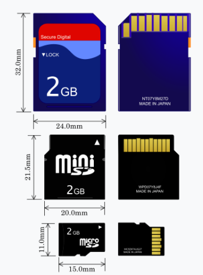Image credit: Based on SD card by Tkgd2007, licensed under the GFDL and CC BY-SA 3.0, 2.5, 2.0, 1.0.
{kind=link}
SD cards read and write data in blocks, typically 512 bytes in size, allowing them to function as block devices; this makes SD cards behave much like hard drives.
Protocol
To communicate with an SD card, we can use the SD Bus protocol, SPI protocol, or UHS-II Bus protocol. The Raspberry Pi (but not the Raspberry Pi Pico) uses the SD Bus protocol, which is more complex than SPI. The full specs of the SD Bus protocol are not accessible to the public and are only available through the SD Association. We will be using the SPI protocol, as the Rust driver we will be using is designed to work with it.
Hardware Requirements
We’ll be using the Micro SD Card adapter module. You can search for either “Micro SD Card Reader Module” or “Micro SD Card Adapter” to find them.

And of course, you’ll need a microSD card. The SD card should be formatted with FAT32; Depending on your computer’s hardware, you might need a separate SD card adapter (not the one mentioned above) to format the microSD card. Some laptops comes with direct microSD card support.
References:
- I highly recommend watching Jonathan Pallant’s talk at Euro Rust 2024 on writing an SD card driver in Rust. He wrote the driver we are going to use (originally he created it to run MS-DOS on ARM). It is not intended for production systems.
- If you want to understand how it works under the hood in SPI mode, you can refer to this article: How to Use MMC/SDC
- Wikipedia
电路
Circuit
microSD Card Pin Mapping for SPI Mode
We’ll focus only on the microSD card since that’s what we’re using. The microSD has 8 pins, but we only need 6 for SPI mode. You may have noticed that the SD card reader module we have also has only 6 pins, with markings for the SPI functions. The table below shows the microSD card pins and their corresponding SPI functions.

| microSD Card Pin | SPI Function |
|---|---|
| 1 | - |
| 2 | Chip Select (CS); also referred as Card Select |
| 3 | Data Input (DI) - corresponds to MOSI. To receive data from the microcontroller. |
| 4 | VDD - Power supply (3.3V) |
| 5 | Serial Clock (SCK) |
| 6 | Ground (GND) |
| 7 | Data Output (DO) - corresponds to MISO. To send data from the microSD card to the microcontroller. |
| 8 | - |
Connecting the Raspberry Pi Pico to the SD Card Reader
The microSD card operates at 3.3V, so using 5V to power it could damage the card. However, the reader module comes with an onboard voltage regulator and logic shifter, allowing it to safely be connected to the 5V power supply of the Pico.
| Pico Pin | Wire | SD Card Pin |
|---|---|---|
| GPIO 1 |
|
CS |
| GPIO 2 |
|
SCK |
| GPIO 3 |
|
MOSI |
| GPIO 4 |
|
MISO |
| 5V |
|
VCC |
| GND |
|
GND |

Read SD Card with Raspberry Pi Pico
Let’s create a simple program that reads a file from the SD card and outputs its content over USB serial. Make sure the SD card is formatted with FAT32 and contains a file to read (for example, “RUST.TXT” with the content “Ferris”).
Project from template
To set up the project, run:
cargo generate --git https://github.com/ImplFerris/pico2-template.git --tag v0.1.0
When prompted, give your project a name, like “read-sdcard” and select RP-HAL as the HAL.
Then, navigate into the project folder:
cd PROJECT_NAME
# For example, if you named your project "read-sdcard":
# cd read-sdcard
Additional Crates required
Update your Cargo.toml to add these additional crate along with the existing dependencies.
#![allow(unused)]
fn main() {
// USB serial communication
usbd-serial = "0.2.2"
usb-device = "0.3.2"
heapless = "0.8.0"
// To convert Spi bus to SpiDevice
embedded-hal-bus = "0.2.0"
// sd card driver
embedded-sdmmc = "0.8.1"
}Except for the embedded-sdmmc crate, we have already used all these crates in previous exercises.
- The usbd-serial and usb-device crates are used for sending or receiving data to and from a computer via USB serial. The heapless crate acts as a helper, providing a buffer before printing data to USB serial.
- The embedded-hal-bus crate offers the necessary traits for SPI and I²C buses, which are essential for interfacing the Pico with the SD card reader.
- The embedded-sdmmc crate is a driver for reading and writing files on FAT-formatted SD cards.
Additional imports
#![allow(unused)]
fn main() {
use usb_device::{class_prelude::*, prelude::*};
use usbd_serial::SerialPort;
use hal::fugit::RateExtU32;
use heapless::String;
use core::fmt::Write;
use embedded_hal_bus::spi::ExclusiveDevice;
use embedded_sdmmc::{SdCard, TimeSource, Timestamp, VolumeIdx, VolumeManager};
}Make sure to check out the USB serial tutorial for setting up the USB serial. We won’t go over the setup here to keep it simple.
Dummy Timesource
The TimeSource is needed to retrieve timestamps and manage file metadata. Since we won’t be using this functionality, we’ll create a DummyTimeSource that implements the TimeSource trait. This is necessary for compatibility with the embedded-sdmmc crate.
#![allow(unused)]
fn main() {
/// Code from https://github.com/rp-rs/rp-hal-boards/blob/main/boards/rp-pico/examples/pico_spi_sd_card.rs
/// A dummy timesource, which is mostly important for creating files.
#[derive(Default)]
pub struct DummyTimesource();
impl TimeSource for DummyTimesource {
// In theory you could use the RTC of the rp2040 here, if you had
// any external time synchronizing device.
fn get_timestamp(&self) -> Timestamp {
Timestamp {
year_since_1970: 0,
zero_indexed_month: 0,
zero_indexed_day: 0,
hours: 0,
minutes: 0,
seconds: 0,
}
}
}
}Setting Up the SPI for the SD Card Reader
Now, let’s configure the SPI bus and the necessary pins to communicate with the SD Card reader.
#![allow(unused)]
fn main() {
let spi_cs = pins.gpio1.into_push_pull_output();
let spi_sck = pins.gpio2.into_function::<hal::gpio::FunctionSpi>();
let spi_mosi = pins.gpio3.into_function::<hal::gpio::FunctionSpi>();
let spi_miso = pins.gpio4.into_function::<hal::gpio::FunctionSpi>();
let spi_bus = hal::spi::Spi::<_, _, _, 8>::new(pac.SPI0, (spi_mosi, spi_miso, spi_sck));
let spi = spi_bus.init(
&mut pac.RESETS,
clocks.peripheral_clock.freq(),
400.kHz(), // card initialization happens at low baud rate
embedded_hal::spi::MODE_0,
);
}Getting the SpiDevice from SPI Bus
To work with the embedded-sdmmc crate, we need an SpiDevice. Since we only have the SPI bus from RP-HAL, we’ll use the embedded_hal_bus crate to get the SpiDevice from the SPI bus.
#![allow(unused)]
fn main() {
let spi = ExclusiveDevice::new(spi, spi_cs, timer).unwrap();
}Setup SD Card driver
#![allow(unused)]
fn main() {
let sdcard = SdCard::new(spi, timer);
let mut volume_mgr = VolumeManager::new(sdcard, DummyTimesource::default());
}Print the size of the SD Card
#![allow(unused)]
fn main() {
match volume_mgr.device().num_bytes() {
Ok(size) => {
write!(buff, "card size is {} bytes\r\n", size).unwrap();
serial.write(buff.as_bytes()).unwrap();
}
Err(e) => {
write!(buff, "Error: {:?}", e).unwrap();
serial.write(buff.as_bytes()).unwrap();
}
}
}Open the directory
Let’s open the volume with the volume manager then open the root directory.
#![allow(unused)]
fn main() {
let Ok(mut volume0) = volume_mgr.open_volume(VolumeIdx(0)) else {
let _ = serial.write("err in open_volume".as_bytes());
continue;
};
let Ok(mut root_dir) = volume0.open_root_dir() else {
serial.write("err in open_root_dir".as_bytes()).unwrap();
continue;
};
}Open the file in read-only mode
#![allow(unused)]
fn main() {
let Ok(mut my_file) = root_dir.open_file_in_dir("RUST.TXT", embedded_sdmmc::Mode::ReadOnly) else {
serial.write("err in open_file_in_dir".as_bytes()).unwrap();
continue;
};
}Read the file content and print
#![allow(unused)]
fn main() {
while !my_file.is_eof() {
let mut buffer = [0u8; 32];
let num_read = my_file.read(&mut buffer).unwrap();
for b in &buffer[0..num_read] {
write!(buff, "{}", *b as char).unwrap();
}
}
serial.write(buff.as_bytes()).unwrap();
}Full code
#![no_std]
#![no_main]
use embedded_hal::delay::DelayNs;
use hal::block::ImageDef;
use panic_halt as _;
use rp235x_hal::{self as hal, Clock};
use usb_device::{class_prelude::*, prelude::*};
use usbd_serial::SerialPort;
use hal::fugit::RateExtU32;
use heapless::String;
use core::fmt::Write;
use embedded_hal_bus::spi::ExclusiveDevice;
use embedded_sdmmc::{SdCard, TimeSource, Timestamp, VolumeIdx, VolumeManager};
#[link_section = ".start_block"]
#[used]
pub static IMAGE_DEF: ImageDef = hal::block::ImageDef::secure_exe();
const XTAL_FREQ_HZ: u32 = 12_000_000u32;
/// A dummy timesource, which is mostly important for creating files.
#[derive(Default)]
pub struct DummyTimesource();
impl TimeSource for DummyTimesource {
// In theory you could use the RTC of the rp2040 here, if you had
// any external time synchronizing device.
fn get_timestamp(&self) -> Timestamp {
Timestamp {
year_since_1970: 0,
zero_indexed_month: 0,
zero_indexed_day: 0,
hours: 0,
minutes: 0,
seconds: 0,
}
}
}
#[hal::entry]
fn main() -> ! {
let mut pac = hal::pac::Peripherals::take().unwrap();
let mut watchdog = hal::Watchdog::new(pac.WATCHDOG);
let clocks = hal::clocks::init_clocks_and_plls(
XTAL_FREQ_HZ,
pac.XOSC,
pac.CLOCKS,
pac.PLL_SYS,
pac.PLL_USB,
&mut pac.RESETS,
&mut watchdog,
)
.ok()
.unwrap();
let mut timer = hal::Timer::new_timer0(pac.TIMER0, &mut pac.RESETS, &clocks);
let sio = hal::Sio::new(pac.SIO);
let pins = hal::gpio::Pins::new(
pac.IO_BANK0,
pac.PADS_BANK0,
sio.gpio_bank0,
&mut pac.RESETS,
);
let usb_bus = UsbBusAllocator::new(hal::usb::UsbBus::new(
pac.USB,
pac.USB_DPRAM,
clocks.usb_clock,
true,
&mut pac.RESETS,
));
let mut serial = SerialPort::new(&usb_bus);
let mut usb_dev = UsbDeviceBuilder::new(&usb_bus, UsbVidPid(0x16c0, 0x27dd))
.strings(&[StringDescriptors::default()
.manufacturer("implRust")
.product("Ferris")
.serial_number("TEST")])
.unwrap()
.device_class(2) // 2 for the CDC, from: https://www.usb.org/defined-class-codes
.build();
let spi_cs = pins.gpio1.into_push_pull_output();
let spi_sck = pins.gpio2.into_function::<hal::gpio::FunctionSpi>();
let spi_mosi = pins.gpio3.into_function::<hal::gpio::FunctionSpi>();
let spi_miso = pins.gpio4.into_function::<hal::gpio::FunctionSpi>();
let spi_bus = hal::spi::Spi::<_, _, _, 8>::new(pac.SPI0, (spi_mosi, spi_miso, spi_sck));
let spi = spi_bus.init(
&mut pac.RESETS,
clocks.peripheral_clock.freq(),
400.kHz(), // card initialization happens at low baud rate
embedded_hal::spi::MODE_0,
);
let spi = ExclusiveDevice::new(spi, spi_cs, timer).unwrap();
let sdcard = SdCard::new(spi, timer);
let mut buff: String<64> = String::new();
let mut volume_mgr = VolumeManager::new(sdcard, DummyTimesource::default());
let mut is_read = false;
loop {
let _ = usb_dev.poll(&mut [&mut serial]);
if !is_read && timer.get_counter().ticks() >= 2_000_000 {
is_read = true;
serial
.write("Init SD card controller and retrieve card size...".as_bytes())
.unwrap();
match volume_mgr.device().num_bytes() {
Ok(size) => {
write!(buff, "card size is {} bytes\r\n", size).unwrap();
serial.write(buff.as_bytes()).unwrap();
}
Err(e) => {
write!(buff, "Error: {:?}", e).unwrap();
serial.write(buff.as_bytes()).unwrap();
}
}
buff.clear();
let Ok(mut volume0) = volume_mgr.open_volume(VolumeIdx(0)) else {
let _ = serial.write("err in open_volume".as_bytes());
continue;
};
let Ok(mut root_dir) = volume0.open_root_dir() else {
serial.write("err in open_root_dir".as_bytes()).unwrap();
continue;
};
let Ok(mut my_file) =
root_dir.open_file_in_dir("RUST.TXT", embedded_sdmmc::Mode::ReadOnly)
else {
serial.write("err in open_file_in_dir".as_bytes()).unwrap();
continue;
};
while !my_file.is_eof() {
let mut buffer = [0u8; 32];
let num_read = my_file.read(&mut buffer).unwrap();
for b in &buffer[0..num_read] {
write!(buff, "{}", *b as char).unwrap();
}
}
serial.write(buff.as_bytes()).unwrap();
}
buff.clear();
timer.delay_ms(50);
}
}
#[link_section = ".bi_entries"]
#[used]
pub static PICOTOOL_ENTRIES: [hal::binary_info::EntryAddr; 5] = [
hal::binary_info::rp_cargo_bin_name!(),
hal::binary_info::rp_cargo_version!(),
hal::binary_info::rp_program_description!(c"USB Fun"),
hal::binary_info::rp_cargo_homepage_url!(),
hal::binary_info::rp_program_build_attribute!(),
];Clone the existing project
You can clone (or refer) project I created and navigate to the read-sdcard folder.
git clone https://github.com/ImplFerris/pico2-rp-projects
cd pico2-projects/read-sdcard/
How to Run ?
The method to flash (run the code) on the Pico is the same as usual. However, we need to set up tio to interact with the Pico through the serial port (/dev/ttyACM0). This allows us to read data from the Pico or send data to it.
tio
Make sure you have tio installed on your system. If not, you can install it using:
apt install tio
Connecting to the Serial Port
Run the following command to connect to the Pico’s serial port:
tio /dev/ttyACM0
This will open a terminal session for communicating with the Pico.
Flashing and Running the Code
Open another terminal, navigate to the project folder, and flash the code onto the Pico as usual:
cargo run
If everything is set up correctly, you should see a “Connected” message in the tio terminal. It will then print the card size and the content of the file once the timer’s ticks reach 2,000,000.

LCD Display
In this section, we will be using Hitachi HD44780 compatible LCD (Liquid Crystal Display) displays. You might have seen them in devices like printers, digital clocks, microwaves, washing machines, air conditioners, and other home appliances. They’re also used in equipment like copiers, fax machines, and routers.
You can display ASCII character and up to 8 custom characters.
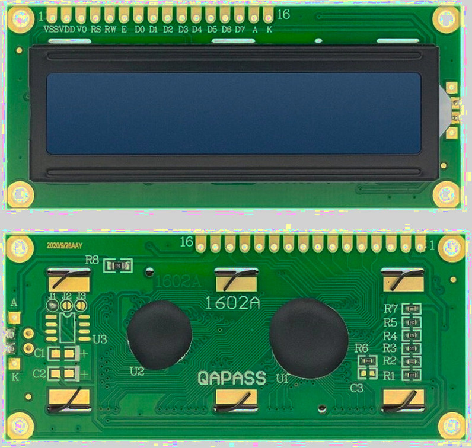Variants
It comes in various variants, such as 16x2 (16 columns, 2 rows) and 20x4 (20 columns, 4 rows), and also based on backlight color (blue, yellow, or green). The one I have displays white characters with a blue backlight. However, you can choose any variant as it won’t significantly affect the code. Most of these variants will have 16 pins.
I2C variants
Some variants come with an I2C interface adapter, so you can use I2C for communication. The main advantage of I2C variant is that it reduces the number of pin connections. However, we’ll be working with the parallel interface instead.
You can also buy the I2C interface adapter separately and solder it later.

Hardware Requirements
- LCD Display (LCD1602): I would recommend getting a 16x2 so you can follow along.
- Potentiometer (Optional): This is used to control the LCD contrast. I didn’t have one at the moment, so I used resistors instead.
- Resistors (Optional): Two 1K resistors. If you have a potentiometer, you can ignore this. I used these to control the contrast.
- Jump Wires: A lot! We’ll need around 15+ jump wires since we’re using a parallel interface (not I2C), which requires connecting many pins.
Datasheet
- You can access the datasheet for the HD44780 from Sparkfun or MIT site
- LCD Driver Data Book
- LCD Module 1602A Datasheet
How it works?
A Liquid Crystal Display (LCD) uses liquid crystals to control light. When electricity is applied, the crystals change orientation, either allowing light to pass through or blocking it, creating images or text. A backlight illuminates the screen, and colored sub-pixels (red, green, and blue) combine to form various colors. The crystals can also turn opaque in specific areas, blocking the backlight and creating dark regions to display characters.
16x2 LCD Display and 5x8 Pixel Matrix
A 16x2 LCD has 2 rows and 16 columns, allowing it to display 32 characters in total. Each character is made up of a 5x8 pixel grid, where 5 columns and 8 rows of pixels form the shape of the character. This grid is used to display text and simple symbols on the screen.
Displaying Text and Custom Characters on 16x2 LCD
We don’t have to manually draw the pixels; This is taken care of by the HD44780 IC, which automatically maps ASCII characters to the 5x8 pixel grid.
However, if you’d like to create custom characters or symbols, you will need to define the 5x8 pixel pattern yourself. This pattern is saved in the LCD’s memory, and once it’s defined, you can use the custom character. Keep in mind, only up to 8 custom characters can be stored at a time.
Data transfer mode
The LCM (Liquid Crystal Module) supports two types of data transfer modes: 8-bit and 4-bit. In 8-bit mode, data is sent as a full byte using all the data pins. In 4-bit mode, only the higher-order data bits are used, sending data in nibbles. While 8-bit mode is faster, it comes with a trade-off;using too many wires, which can quickly exhaust the GPIO pins on a microcontroller. To minimize wiring, we’ll use 4-bit mode.
Reference:
引脚布局
Pin Layout
The LCD has a total of 16 pins for the parallel interface.

| Pin Position | LCD Pin | Details |
|---|---|---|
| 1 | VSS | Should be connected to the Ground. |
| 2 | VSS | Power supply (5V) for the logic |
| 3 | VO |
Contrast adjustment: - If you use a potentiometer (10k), connect the middle pin to adjust the contrast. Other pins of the potentiometer should be connected to 5V (or 3.3V) and GND. - I used two 1k resistors instead, which was sufficient for this exercise. |
| 4 | RS |
Register select pin: - Set LOW (RS = 0) to send commands to the LCD. - Set HIGH (RS = 1) to send data to the LCD. |
| 5 | RW |
Read/Write pin: - Set LOW (RW = 0) to write to the LCD, which is what we will mostly do. - Set HIGH (RW = 1) to read from the LCD (rarely used). - We will connect this to Ground since we’re only writing. |
| 6 | E | The Enable pin is pulsed high and then brought back to low (ground) to trigger the LCD to accept and process data. |
| 7-10 | D0 - D3 | These are the 4 lower-order data bits, used only in 8-bit mode. If you are using 4-bit mode, leave these pins unconnected. |
| 11-14 | D4 - D7 | These are the 4 higher-order data bits, used to represent the data in 4-bit mode. |
| 15 | A | Anode of the backlight. Should be connected to 5V. |
| 16 | K | Cathode of the backlight. Should be connected to Ground. |
Contrast Adjustment
The Vo pin controls the contrast of the LCD.
According to the datasheet of the LCD1602A, the Vo pin controls the contrast of the LCD by adjusting the operating voltage for the LCD, which is the difference between the power supply for the logic (VDD) and the contrast control pin (Vo). When Vo is closer to ground, the voltage difference (VDD - Vo) is larger, resulting in a higher contrast, making the text on the screen more distinct and readable. When Vo is closer to VDD, the voltage difference decreases, resulting in a lower contrast, causing the text to appear faded or less visible.
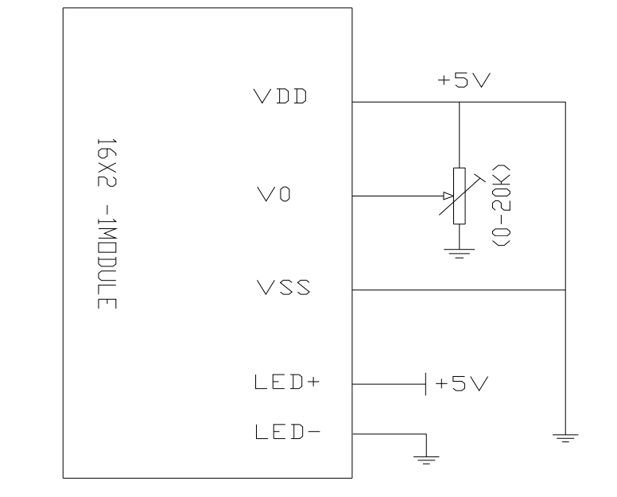You can use the potentiometer to adjust the contrast on the fly. You have to connect the middle pin of the potentiometer to Vo, and the other two pins to VCC and Ground.
You can also use resistors to adjust the contrast, which is what I did. You need to adjust the contrast one way or another. The first time I ran the program, I couldn’t see the text clearly. I placed two 1k resistors(when I added only one 1k resistor, it didn’t look that great) between Ground and the Vo, and then the text became visible.
Register Select Pin (RS)
The Register Select (RS) pin determines whether the LCD is in command mode or data mode.
When it is in Low(RS = 0), the LCD is in command mode, where the input is interpreted as a command, such as clearing the display or setting the cursor position (e.g., sending a command to clear the display).
When it is in High(RS = 1), the LCD is in data mode, where the input is interpreted as data to be displayed on the screen (e.g., sending text to display).
Enable Pin (E)
It is used to control when data is transferred to the LCD display. The enable pin is typically kept low (E=0) but is set high (E=1) for a specific period of time to initiate a data transfer, and then returned to low.. The data is latched into the LCD on the transition from high to low.
Circuit
Connecting LCD Display (LCD1602) to the Raspberry Pi Pico
We will be using parallel interface in 4bit mode. Remaining Pins like D0 to D3 won’t be connected.
| LCD Pin | Wire | Pico Pin | Notes |
|---|---|---|---|
| VSS |
|
GND | Ground |
| VDD |
|
VBUS (5V) | Power Supply |
| VO |
|
GND or Potentiometer | You can use Potentiometer or resistors to adjust the contrast. I placed two 1K resistors in between Ground and VO |
| RS |
|
GPIO 16 | Register Select (0 = command, 1 = data) |
| RW |
|
GND | Read/Write. Set '0' to write to display. If you want to read from display, set '1' |
| EN |
|
GPIO 17 | Enable |
| D4 |
|
GPIO 18 | Data Bit 4 |
| D5 |
|
GPIO 19 | Data Bit 5 |
| D6 |
|
GPIO 20 | Data Bit 6 |
| D7 |
|
GPIO 21 | Data Bit 7 |
| A |
|
3V3(OUT) | LED Backlight + |
| K |
|
GND | LED Backlight - |
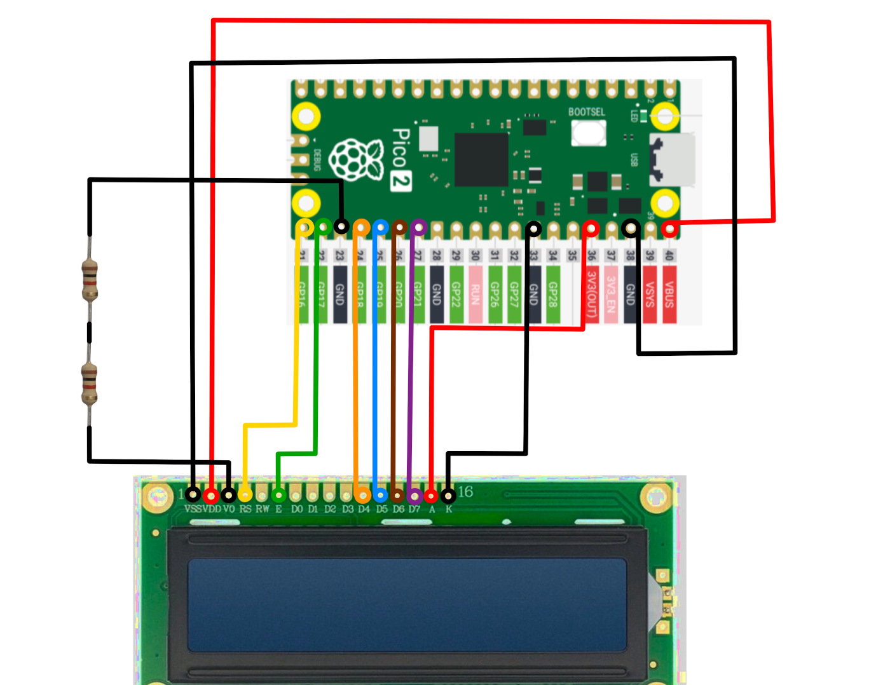
“Hello, Rust!” in LCD Display
In this program, we will just print “Hello, Rust!” text in the LCD display.
HD44780 Drivers
During my research, I came across many Rust crates for controll the LCD Display, but these two stood out as working well. In this program, we will start by using the hd44780-driver crate.
Project from template
To set up the project, run:
cargo generate --git https://github.com/ImplFerris/pico2-template.git --tag v0.1.0
When prompted, give your project a name, like “lcd-hello” and select RP-HAL as the HAL.
Then, navigate into the project folder:
cd PROJECT_NAME
# For example, if you named your project "lcd-hello":
# cd lcd-hello
Additional Crates required
Update your Cargo.toml to add these additional crate along with the existing dependencies.
#![allow(unused)]
fn main() {
hd44780-driver = "0.4.0"
}Additional imports
#![allow(unused)]
fn main() {
use hd44780_driver::HD44780;
}Mapping Pico and LCD Pins
We connect GPIO16 to the RS pin, GPIO17 to the Enable (E) pin, and GPIO18-21 to the D4-D7 data pins of the LCD. We’re using only 4 data pins since we will be working on 4-bit mode.
#![allow(unused)]
fn main() {
// Read Select Pin
let rs = pins.gpio16.into_push_pull_output();
// Enable Pin
let en = pins.gpio17.into_push_pull_output();
// Data Pins
let d4 = pins.gpio18.into_push_pull_output();
let d5 = pins.gpio19.into_push_pull_output();
let d6 = pins.gpio20.into_push_pull_output();
let d7 = pins.gpio21.into_push_pull_output();
}Write Text to the LCD
Here, we initialize the LCD module, clear the screen, and then write the text “Hello, Rust!”.
#![allow(unused)]
fn main() {
// LCD Init
let mut lcd = HD44780::new_4bit(rs, en, d4, d5, d6, d7, &mut timer).unwrap();
// Clear the screen
lcd.reset(&mut timer).unwrap();
lcd.clear(&mut timer).unwrap();
// Write to the top line
lcd.write_str("Hello, Rust!", &mut timer).unwrap();
}Clone the existing project
You can clone (or refer) project I created and navigate to the lcd-hello folder.
git clone https://github.com/ImplFerris/pico2-rp-projects
cd pico2-projects/lcd-hello/
支持的字符
Supported Characters
When referring to the HD44780 datasheet, you’ll find two character set tables corresponding to two different ROM versions(A00 and A02). To determine which ROM your display uses, try unique characters from both tables. The one that displays correctly indicates the ROM version. Once identified, you only need to refer to the relevant table.
In my case, the LCD module I’m using is based on ROM version A00. I’ll present the A00 table and explain how to interpret it, though the interpretation logic is the same for both versions.
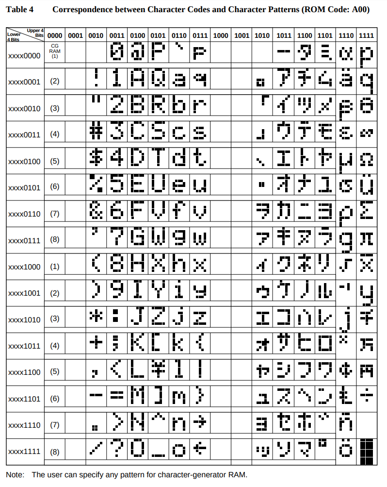It’s an 8-bit character, where the upper 4 bits come first, followed by the lower 4 bits, to form the complete character byte. In the reference table, the upper 4 bits correspond to the columns, while the lower 4 bits correspond to the rows.
For example, to get the binary representation of the character “#,” the upper 4 bits are 0010, and the lower 4 bits are 0011. Combining them gives the full binary value 00100011. In Rust, you can represent this value either in binary (0b00100011) or as a hexadecimal (0x23).
hd44780-driver crate
In the hd44780-driver crate we are using, we can write characters directly as a single byte or a sequence of bytes.
Write single byte
#![allow(unused)]
fn main() {
lcd.write_byte(0x23, &mut timer).unwrap();
lcd.write_byte(0b00100011, &mut timer).unwrap();
}Write multiple bytes
#![allow(unused)]
fn main() {
lcd.write_bytes(&[0x23, 0x24], &mut timer).unwrap();
}自定义字符
Custom Characters
Besides the supported characters, you can create your own custom ones, like smileys or heart symbols. The module includes 64 bytes of Character Generator RAM (CGRAM), allowing up to 8 custom characters.
Each character is an 8x8 grid, where each row is represented by a single 8-bit value (u8). This makes it 8 bytes per character (8 rows × 1 byte per row). That’s why, with a total of 64 bytes, you can only store up to 8 custom characters (8 chars × 8 bytes = 64 bytes).
Note: If you recall, in our LCD module, each character is represented as a 5x8 grid. But wait, didn’t we say we need an 8x8 grid for the characters? Yes, that’s correct-we need 8 x 8 (8 bytes) memory, but we only use 5 bits in each row. The 3 high-order bits in each row are left as zeros.
生成器
LCD Custom Character Generator (5x8 Grid)
Select the grids to create a symbol or character. As you select the grid, the corresponding bits in the byte array will be updated.
Generated Array
在 LCD 上显示
Ferris on LCD Display
Let’s create Ferris (my attempt to make it look like a crab; if you have a better design, feel free to send a pull request) using a single character. In fact, we can combine 4 or 6 adjacent grids to display a single symbol. Creativity is up to you, and you can improve it however you like.
We’ll use the custom character generator from the previous page to create this symbol. This will give us the byte array that we can use.
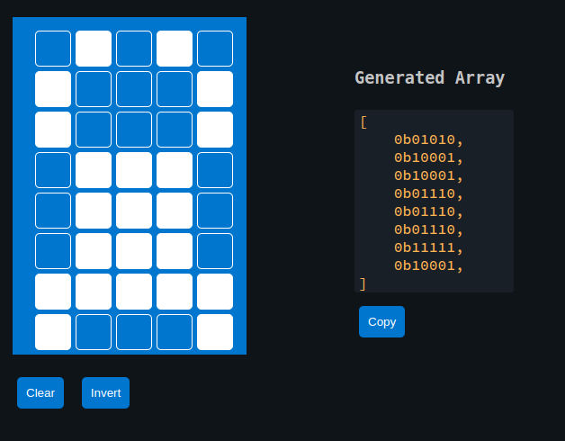Note that the previous crate hd44780-driver doesn’t support custom characters. To handle this, we can use the liquid_crystal crate, which allows us to work with custom characters.
Initialize the LCD interface
#![allow(unused)]
fn main() {
let mut lcd_interface = Parallel::new(d4, d5, d6, d7, rs, en, lcd_dummy);
let mut lcd = LiquidCrystal::new(&mut lcd_interface, Bus4Bits, LCD16X2);
lcd.begin(&mut timer);
}Our generated byte array for the custom character
#![allow(unused)]
fn main() {
const FERRIS: [u8; 8] = [
0b01010, 0b10001, 0b10001, 0b01110, 0b01110, 0b01110, 0b11111, 0b10001,
];
// Define the character
lcd.custom_char(&mut timer, &FERRIS, 0);
}Displaying
Displaying the character is straightforward. You just need to use the CustomChar enum and pass the index of the custom character. We’ve defined only one custom character, which is at position 0.
#![allow(unused)]
fn main() {
lcd.write(&mut timer, CustomChar(0));
lcd.write(&mut timer, Text(" implRust!"));
}Clone the existing project
You can clone (or refer) project I created and navigate to the lcd-custom folder.
git clone https://github.com/ImplFerris/pico2-rp-projects
cd pico2-projects/lcd-custom/
多字符生成器
Multi Custom Character Generator
This is used when you want to combine multiple grids to create a symbol. You can utilize adjacent grids on the 16x2 LCD display to design a custom symbol or character. You can view the example symbol created with this generator and how to use in Rust in the next page.
Generated Array
多个自定义字符
Multi Custom character
I attempted to create the Ferris image using 6 adjacent grids with the generator from the previous page. Here’s the Rust code to utilize those byte arrays.

Generated Byte array for the characters
#![allow(unused)]
fn main() {
const SYMBOL1: [u8; 8] = [
0b00110, 0b01000, 0b01110, 0b01000, 0b00100, 0b00011, 0b00100, 0b01000,
];
const SYMBOL2: [u8; 8] = [
0b00000, 0b00000, 0b00000, 0b10001, 0b10001, 0b11111, 0b00000, 0b00000,
];
const SYMBOL3: [u8; 8] = [
0b01100, 0b00010, 0b01110, 0b00010, 0b00100, 0b11000, 0b00100, 0b00010,
];
const SYMBOL4: [u8; 8] = [
0b01000, 0b01000, 0b00100, 0b00011, 0b00001, 0b00010, 0b00101, 0b01000,
];
const SYMBOL5: [u8; 8] = [
0b00000, 0b00000, 0b00000, 0b11111, 0b01010, 0b10001, 0b00000, 0b00000,
];
const SYMBOL6: [u8; 8] = [
0b00010, 0b00010, 0b00100, 0b11000, 0b10000, 0b01000, 0b10100, 0b00010,
];
}Declare them as character
#![allow(unused)]
fn main() {
lcd.custom_char(&mut timer, &SYMBOL1, 0);
lcd.custom_char(&mut timer, &SYMBOL2, 1);
lcd.custom_char(&mut timer, &SYMBOL3, 2);
lcd.custom_char(&mut timer, &SYMBOL4, 3);
lcd.custom_char(&mut timer, &SYMBOL5, 4);
lcd.custom_char(&mut timer, &SYMBOL6, 5);
}Display
Let’s write the first 3 grids into the first row, then the second half into the second row of the LCD display.
#![allow(unused)]
fn main() {
lcd.set_cursor(&mut timer, 0, 4)
.write(&mut timer, CustomChar(0))
.write(&mut timer, CustomChar(1))
.write(&mut timer, CustomChar(2));
lcd.set_cursor(&mut timer, 1, 4)
.write(&mut timer, CustomChar(3))
.write(&mut timer, CustomChar(4))
.write(&mut timer, CustomChar(5));
}Clone the existing project
You can clone (or refer) project I created and navigate to the lcd-custom-multi folder.
git clone https://github.com/ImplFerris/pico2-rp-projects
cd pico2-projects/lcd-custom-multi/
Symbols Index
Here is a list of custom symbols with their corresponding byte arrays. If you’ve designed an interesting symbol and want to add to this list, feel free to submit a pull request. Please use the custom character generator provided here to ensure consistency.
| Title | Preview | Byte Array |
|---|---|---|
| Heart | 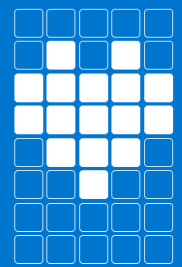 | [ 0b00000, 0b01010, 0b11111, 0b11111, 0b01110, 0b00100, 0b00000, 0b00000,] |
| Lock |  |
[ 0b01110, 0b10001, 0b10001, 0b11111, 0b11011, 0b11011, 0b11011, 0b11111, ] |
| Hollow Heart |  |
[ 0b00000, 0b01010, 0b10101, 0b10001, 0b10001, 0b01010, 0b00100, 0b00000, ] |
| Battery | 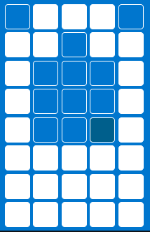 | [ 0b01110, 0b11011, 0b10001, 0b10001, 0b10001, 0b11111, 0b11111, 0b11111, ] |
| Bus |  |
[ 0b01110, 0b11111, 0b10001, 0b10001, 0b11111, 0b10101, 0b11111, 0b01010, ] |
| Bell | 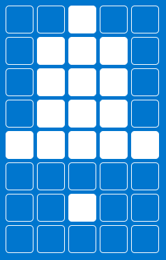 | [ 0b00100, 0b01110, 0b01110, 0b01110, 0b11111, 0b00000, 0b00100, 0b00000, ] |
| Hour Glass |  |
[ 0b00000, 0b11111, 0b10001, 0b01010, 0b00100, 0b01010, 0b10101, 0b11111, ] |
| Charger |  |
[ 0b01010, 0b01010, 0b11111, 0b10001, 0b10001, 0b01110, 0b00100, 0b00100, ] |
| Tick Mark |  |
[ 0b00000, 0b00000, 0b00001, 0b00011, 0b10110, 0b11100, 0b01000, 0b00000, ] |
| Music Note |  |
[ 0b00011, 0b00010, 0b00010, 0b00010, 0b00010, 0b01110, 0b11110, 0b01110, ] |
Joystick
In this section, we’ll explore how to use the Joystick Module. It is similar to the joysticks found on PS2 (PlayStation 2) controllers. They are commonly used in gaming, as well as for controlling drones, remote-controlled cars, robots, and other devices to adjust position or direction.
Meet the hardware - Joystick module
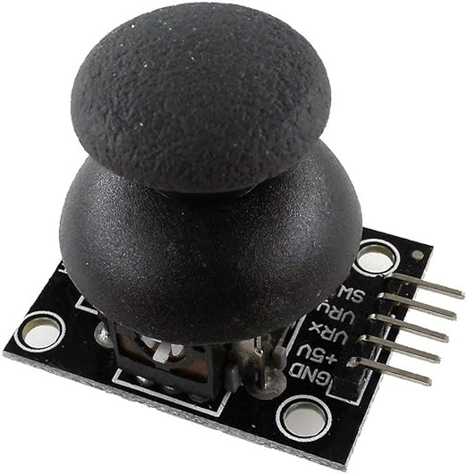You can move the joystick knob vertically and horizontally, sending its position (X and Y axes) to the MCU (e.g., Pico). Additionally, the knob can be pressed down like a button. The joystick typically operates at 5V, but it can also be connected to 3.3V.
How it works?
The joystick module has two 10K potentiometers: one for the X-axis and another for the Y-axis. It also includes a push button, which is visible.
When you move the joystick from right to left or left to right(X axis), you can observe one of the potentiometers moving accordingly. Similarly, when you move it up and down(Y-axis), you can observe the other potentiometer moving along.
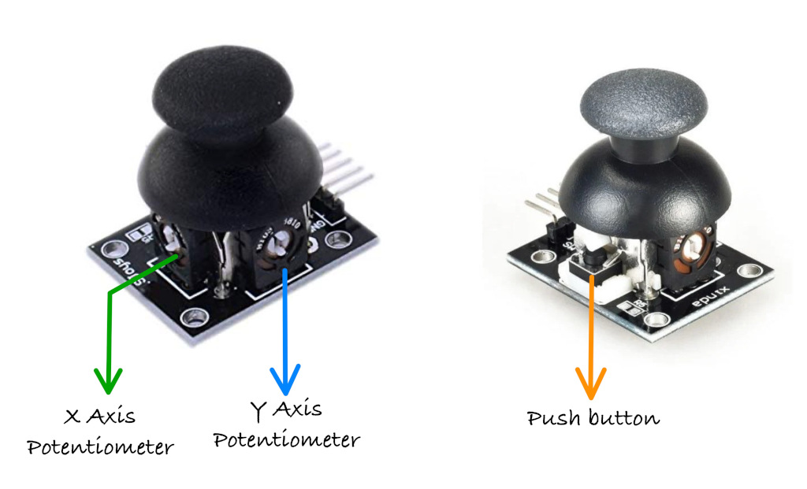You can also observe the push-button being pressed when you press down on the knob.
移动与 ADC
Joystick Movement and Corresponding ADC Values
When you move the joystick along the X or Y axis, it produces an analog signal with a voltage that varies between 0 and 3.3V(or 5V if we connect it to 5V supply). When the joystick is in its center (rest) position, the output voltage is approximately 1.65V, which is half of the VCC(VCC is 3.3V in our case).
The reason it is 1.65V in the center position is that the potentiometer acts as a voltage divider. When the potentiometer is moved, its resistance changes, causing the voltage divider to output a different voltage accordingly. Refer the voltate divider section.
The joystick has a total of 5 pins, and we will shortly discuss what each of them represents. Out of these, two pins are dedicated to sending the X and Y axis positions, which should be connected to the ADC pins of the microcontroller.
As you may already know, the Raspberry Pi Pico has a 12-bit SAR-type ADC, which converts analog signals (voltage differences) into digital values. Since it is a 12-bit ADC, the analog values will be represented as digital values ranging from 0 to 4095. If you’re not familiar with ADC, refer to the ADC section that we covered earlier.

Note:
The ADC values in the image are just approximations to give you an idea and won’t be exact. For example, I got around 1850 for X and Y at the center position. When I moved the knob toward the pinout side, X went to 0, and when I moved it to the opposite side, it went to 4095. The same applies to the Y axis.So, You might need to calibrate your joystick.
Pin layout
The joystick has a total of 5 pins: power supply, ground, X-axis output, Y-axis output, and switch output pin.
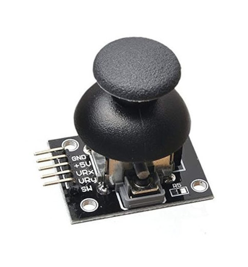| Joystick Pin | Details |
|---|---|
| GND | Ground pin. Should be connected to the Ground of the circuit. |
| VCC | Power supply pin (typically 5V or 3.3V ). |
| VRX | The X-axis analog output pin varies its voltage based on the joystick's horizontal position, ranging from 0V to VCC as the joystick is moved left and right. |
| VRY | The Y-axis analog output pin varies its voltage based on the joystick's vertical position, ranging from 0V to VCC as the joystick is moved up and down. |
| SW | Switch pin. When the joystick knob is pressed, this pin is typically pulled LOW (to GND). |
Connecting the Joystick to the Raspberry Pi Pico
Let’s connect the joystick to the Raspberry Pi Pico. We need to connect the VRX and VRY pins to the ADC pins of the Pico. The joystick will be powered with 3.3V instead of 5V because the Pico’s GPIO pins are only 3.3V tolerant. Connecting it to 5V could damage the Pico’s pins. Thankfully, the joystick can operate at 3.3V as well.
| Pico Pin | Wire | Joystick Pin |
|---|---|---|
| GND |
|
GND |
| 3.3V |
|
VCC |
| GPIO 27 (ADC1) |
|
VRX |
| GPIO 26 (ADC0) |
|
VRY |
| GPIO 15 |
|
SW |

输出 ADC 数值
Sending Joystick Movement ADC Values to USB Serial
In this program, we’ll observe how joystick movement affects ADC values in real time. We will connect the Raspberry Pi Pico with the joystick and set up USB serial communication. If you’re not sure how to set up USB Serial, check the USB Serial section.
As you move the joystick, the corresponding ADC values will be printed in the system. You can compare these values with the previous Movement and ADC Diagram;they should approximately match the values shown. Pressing the joystick knob will print “Button Pressed” along with the current coordinates.
Project from template
To set up the project, run:
cargo generate --git https://github.com/ImplFerris/pico2-template.git --tag v0.1.0
When prompted, give your project a name, like “joystick-usb” and select RP-HAL as the HAL.
Then, navigate into the project folder:
cd PROJECT_NAME
# For example, if you named your project "joystick-usb":
# cd joystick-usb
Additional Crates required
Update your Cargo.toml to add these additional crate along with the existing dependencies.
#![allow(unused)]
fn main() {
usb-device = "0.3.2"
usbd-serial = "0.2.2"
heapless = "0.8.0"
embedded_hal_0_2 = { package = "embedded-hal", version = "0.2.5", features = [
"unproven",
] }
}The first three should be familiar by now; they set up USB serial communication so we can send data between the Pico and the computer. heapless is a helper function for buffers.
embedded_hal_0_2 is the new crate. You might already have embedded-hal with version “1.0.0” in your Cargo.toml. So, you may wonder why we need this version. The reason is that Embedded HAL 1.0.0 doesn’t include an ADC trait to read ADC values, and the RP-HAL uses the one from version 0.2. (Don’t remove the existing embedded-hal 1.0.0; just add this one along with it.)
Additional imports
#![allow(unused)]
fn main() {
/// This trait is the interface to an ADC that is configured to read a specific channel at the time
/// of the request (in contrast to continuous asynchronous sampling).
use embedded_hal_0_2::adc::OneShot;
// for USB Serial
use usb_device::{class_prelude::*, prelude::*};
use usbd_serial::SerialPort;
use heapless::String;
}USB Serial
Make sure you’ve completed the USB serial section and added the boilerplate code from there into your project.
#![allow(unused)]
fn main() {
let usb_bus = UsbBusAllocator::new(hal::usb::UsbBus::new(
pac.USB,
pac.USB_DPRAM,
clocks.usb_clock,
true,
&mut pac.RESETS,
));
let mut serial = SerialPort::new(&usb_bus);
let mut usb_dev = UsbDeviceBuilder::new(&usb_bus, UsbVidPid(0x16c0, 0x27dd))
.strings(&[StringDescriptors::default()
.manufacturer("implRust")
.product("Ferris")
.serial_number("12345678")])
.unwrap()
.device_class(2) // 2 for the CDC, from: https://www.usb.org/defined-class-codes
.build();
let mut buff: String<64> = String::new();
}Pin setup
Let’s set up the ADC and configure GPIO 27 and GPIO 26, which are mapped to the VRX and VRY pins of the joystick:
#![allow(unused)]
fn main() {
let mut adc = hal::Adc::new(pac.ADC, &mut pac.RESETS);
//VRX Pin
let mut adc_pin_1 = hal::adc::AdcPin::new(pins.gpio27).unwrap();
// VRY pin
let mut adc_pin_0 = hal::adc::AdcPin::new(pins.gpio26).unwrap();
}We also configure GPIO15 as a pull-up input for the button:
#![allow(unused)]
fn main() {
let mut btn = pins.gpio15.into_pull_up_input();
}Printing Co-ordinates
We want to print the coordinates only when the vrx or vry values change beyond a certain threshold. This avoids continuously printing unnecessary values.
To achieve this, we initialize variables to store the previous values and a flag to determine when to print:
#![allow(unused)]
fn main() {
let mut prev_vrx: u16 = 0;
let mut prev_vry: u16 = 0;
let mut print_vals = true;
}Reading ADC Values:
First, read the ADC values for vrx and vry. If there’s an error during the read operation, we ignore it and continue the loop:
#![allow(unused)]
fn main() {
let Ok(vry): Result<u16, _> = adc.read(&mut adc_pin_0) else {
continue;
};
let Ok(vrx): Result<u16, _> = adc.read(&mut adc_pin_1) else {
continue;
};
}Checking for Threshold Changes:
Next, we check if the absolute difference between the current and previous values of vrx or vry exceeds a threshold (e.g., 100). If so, we update the previous values and set the print_vals flag to true:
#![allow(unused)]
fn main() {
if vrx.abs_diff(prev_vrx) > 100 {
prev_vrx = vrx;
print_vals = true;
}
if vry.abs_diff(prev_vry) > 100 {
prev_vry = vry;
print_vals = true;
}
}Using a threshold filters out small ADC fluctuations, avoids unnecessary prints, and ensures updates only for significant changes.
Printing the Coordinates
If print_vals is true, we reset it to false and print the X and Y coordinates via the USB serial:
#![allow(unused)]
fn main() {
if print_vals {
print_vals = false;
buff.clear();
write!(buff, "X: {} Y: {}\r\n", vrx, vry).unwrap();
let _ = serial.write(buff.as_bytes());
}
}Button Press Detection with State Transition
The button is normally in a high state. When you press the knob button, it switches from high to low. However, since the program runs in a loop, simply checking if the button is low could lead to multiple detections of the press. To avoid this, we only register the press once by detecting a high-to-low transition, which indicates that the button has been pressed.
To achieve this, we track the previous state of the button and compare it with the current state before printing the “button pressed” message. If the button is currently in a low state (pressed) and the previous state was high (not pressed), we recognize it as a new press and print the message. Then, we update the previous state to the current state, ensuring the correct detection of future transitions.
#![allow(unused)]
fn main() {
let btn_state = btn.is_low().unwrap();
if btn_state && !prev_btn_state {
let _ = serial.write("Button Pressed\r\n".as_bytes());
print_vals = true;
}
prev_btn_state = btn_state;
}The Full code
#![no_std]
#![no_main]
use core::fmt::Write;
use embedded_hal::{delay::DelayNs, digital::InputPin};
use embedded_hal_0_2::adc::OneShot;
use hal::block::ImageDef;
use heapless::String;
use panic_halt as _;
use rp235x_hal as hal;
use usb_device::{class_prelude::*, prelude::*};
use usbd_serial::SerialPort;
#[link_section = ".start_block"]
#[used]
pub static IMAGE_DEF: ImageDef = hal::block::ImageDef::secure_exe();
const XTAL_FREQ_HZ: u32 = 12_000_000u32;
#[hal::entry]
fn main() -> ! {
let mut pac = hal::pac::Peripherals::take().unwrap();
let mut watchdog = hal::Watchdog::new(pac.WATCHDOG);
let clocks = hal::clocks::init_clocks_and_plls(
XTAL_FREQ_HZ,
pac.XOSC,
pac.CLOCKS,
pac.PLL_SYS,
pac.PLL_USB,
&mut pac.RESETS,
&mut watchdog,
)
.ok()
.unwrap();
let mut timer = hal::Timer::new_timer0(pac.TIMER0, &mut pac.RESETS, &clocks);
let sio = hal::Sio::new(pac.SIO);
let pins = hal::gpio::Pins::new(
pac.IO_BANK0,
pac.PADS_BANK0,
sio.gpio_bank0,
&mut pac.RESETS,
);
// let mut led = pins.gpio25.into_push_pull_output();
let usb_bus = UsbBusAllocator::new(hal::usb::UsbBus::new(
pac.USB,
pac.USB_DPRAM,
clocks.usb_clock,
true,
&mut pac.RESETS,
));
let mut serial = SerialPort::new(&usb_bus);
let mut usb_dev = UsbDeviceBuilder::new(&usb_bus, UsbVidPid(0x16c0, 0x27dd))
.strings(&[StringDescriptors::default()
.manufacturer("implRust")
.product("Ferris")
.serial_number("12345678")])
.unwrap()
.device_class(2) // 2 for the CDC, from: https://www.usb.org/defined-class-codes
.build();
let mut btn = pins.gpio15.into_pull_up_input();
let mut adc = hal::Adc::new(pac.ADC, &mut pac.RESETS);
//VRX Pin
let mut adc_pin_1 = hal::adc::AdcPin::new(pins.gpio27).unwrap();
// VRY pin
let mut adc_pin_0 = hal::adc::AdcPin::new(pins.gpio26).unwrap();
let mut prev_vrx: u16 = 0;
let mut prev_vry: u16 = 0;
let mut prev_btn_state = false;
let mut buff: String<64> = String::new();
let mut print_vals = true;
loop {
let _ = usb_dev.poll(&mut [&mut serial]);
let Ok(vry): Result<u16, _> = adc.read(&mut adc_pin_0) else {
continue;
};
let Ok(vrx): Result<u16, _> = adc.read(&mut adc_pin_1) else {
continue;
};
if vrx.abs_diff(prev_vrx) > 100 {
prev_vrx = vrx;
print_vals = true;
}
if vry.abs_diff(prev_vry) > 100 {
prev_vry = vry;
print_vals = true;
}
let btn_state = btn.is_low().unwrap();
if btn_state && !prev_btn_state {
let _ = serial.write("Button Pressed\r\n".as_bytes());
print_vals = true;
}
prev_btn_state = btn_state;
if print_vals {
print_vals = false;
buff.clear();
write!(buff, "X: {} Y: {}\r\n", vrx, vry).unwrap();
let _ = serial.write(buff.as_bytes());
}
timer.delay_ms(50);
}
}
#[link_section = ".bi_entries"]
#[used]
pub static PICOTOOL_ENTRIES: [hal::binary_info::EntryAddr; 5] = [
hal::binary_info::rp_cargo_bin_name!(),
hal::binary_info::rp_cargo_version!(),
hal::binary_info::rp_program_description!(c"JoyStick USB"),
hal::binary_info::rp_cargo_homepage_url!(),
hal::binary_info::rp_program_build_attribute!(),
];Clone the existing project
You can clone (or refer) project I created and navigate to the joystick-usb folder.
git clone https://github.com/ImplFerris/pico2-rp-projects
cd pico2-projects/joystick-usb/
How to Run ?
The method to flash (run the code) on the Pico is the same as usual. However, we need to set up tio to interact with the Pico through the serial port (/dev/ttyACM0). This allows us to read data from the Pico or send data to it.
tio
Make sure you have tio installed on your system. If not, you can install it using:
apt install tio
Connecting to the Serial Port
Run the following command to connect to the Pico’s serial port:
tio /dev/ttyACM0
This will open a terminal session for communicating with the Pico.
Flashing and Running the Code
Open another terminal, navigate to the project folder, and flash the code onto the Pico as usual:
cargo run
If everything is set up correctly, you should see a “Connected” message in the tio terminal. As you move the joystick, the coordinates will be printed. Pressing the knob downwards will also display a “Button pressed” message.
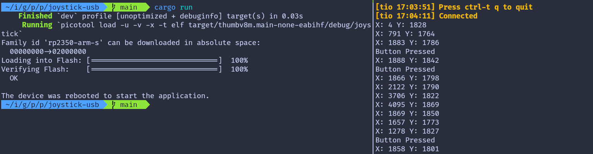Debugging
Debugging Embedded Rust on Raspberry Pi Pico 2 with GDB
In this chapter, we will look at how to debug Embedded Rust programs on the Raspberry Pi Pico 2 (RP2350) using GDB. You will need a Debug Probe hardware and you must connect it to your Raspberry Pi Pico 2. Make sure you have read this chapter before continuing.
What a Debug Probe Gives You
In the Debug Probe introduction chapter, we saw that it helps you avoid pressing the BOOTSEL button every time you want to flash your program. But the Debug Probe offers much more than that. It allows you to use GDB directly from your computer, so you can debug your program while it is running on the Pico 2.
What is GDB?
If you have never used GDB, here is a simple explanation: GDB is a command line debugger that lets you pause your program, inspect what is happening inside it, read memory, and step through the code to find problems.
For debugging the Pico 2, you need a version of GDB that supports ARM targets. You can install it with:
sudo apt install gdb-multiarch
Enable GDB in Embed.toml
Earlier, we used probe-rs through the cargo embed command. The same tool can also start a GDB server, which lets you connect GDB to the Pico 2 through the Debug Probe.
For this, we need to edit the Embed.toml file in the root of your project. This file is the configuration file used by the cargo embed command. You should add the following section to enable the GDB server:
[default.gdb]
# Whether or not a GDB server should be opened after flashing.
enabled = true
Example Project
For this exercise, I have created a simple LED blink program using rp-hal. It does not use Embassy to keep things simple. The Embed.toml file is already set up, so you can clone the project and start working right away:
git clone https://github.com/ImplFerris/pico-debug
cd pico-debug
If you run the cargo embed command now, the GDB server will start automatically and listen on port 1337 (the default port used by probe-rs).
Connecting GDB to the Remote Server
To connect GDB to the running probe-rs GDB server, open a new terminal and start GDB with the our project binary file:
Note: There is an issue with probe-rs version 0.30. When I try to connect to the GDB server, the connection closes immediately. I downgraded to version 0.28 as suggested in this issue discussion. After downgrading, run cargo embed again.
gdb-multiarch ./target/thumbv8m.main-none-eabihf/debug/pico-debug
Then connect to the server on port 1337:
(gdb) target remote :1337
At this point, GDB is connected to the Pico 2 through the Debug Probe, and you can start using breakpoints, stepping, memory inspection, and other debugging commands.
Resetting to the Start of the Program
When you connect GDB to the running GDB server, the CPU may not be stopped at the start of your program. It might be sitting somewhere deep inside the code.
To ensure you start debugging from a clean state, run:
(gdb) monitor reset halt
This command tells the Debug Probe to reset the Pico 2 and immediately halt the CPU. This puts the program back at the very beginning, right where the processor starts running after a reset.
Finding the Reset Handler and Tracing the Call to main
When the Pico 2 resets, the CPU starts executing from the Reset Handler. To understand how our program starts, we will locate the Reset Handler, disassemble it, and follow the call chain until we reach our actual Rust main.
When the Pico 2 starts up, the CPU does not jump straight into our Rust main function. Instead, it follows a small chain of functions provided by the Cortex-M runtime.
In this section, we will:
-
Find where the chip starts executing after reset
-
See which function that Reset Handler calls
-
Follow the chain until we reach our real Rust main
Read the Reset Vector Entry
The Cortex-M processor starts execution by reading a table at the beginning of flash memory called the vector table.
The first two entries are:
- Word 0 (offset 0x00): Initial stack pointer value
- Word 1 (offset 0x04): Reset handler address
On Pico 2, flash starts at address 0x10000000 so:
- The initial stack pointer value is stored at 0x10000000
- Reset handler address is at 0x10000004
What is the Reset Handler?
The reset handler is the first function that runs when the processor powers on or resets. It performs initialization and eventually calls our main function.
Read it in GDB:
(gdb) x/wx 0x10000004
Example output:
0x10000004 <__RESET_VECTOR>: 0x1000010d
This value is the address the CPU jumps to after reset. The last bit (the “Thumb bit”) is always 1, so the actual address is 0x1000010c. But you can use either one of them (0x1000010d or 0x1000010c), GDB can handle it.
Alternatively, you can also use the readelf program to find the entrypoint address:
arm-none-eabi-readelf -h ./target/thumbv8m.main-none-eabihf/debug/pico-debug
Disassemble the Reset Handler
Now Let’s ask GDB to show the instructions at that address:
(gdb) disas 0x1000010d
# or
(gdb) disas 0x1000010c
You will see assembly instructions for the reset handler. Look for a bl (Branch with Link) instruction that calls another function:
...
0x10000140 <+52>: isb sy
0x10000144 <+56>: bl 0x1000031c <main>
0x10000148 <+60>: udf #0
The Reset Handler calls a function located at 0x1000031c, which GDB shows as main. But this is not our Rust main yet.
What is this “main”?
The main at 0x1000031c is not our program’s main function. It is a small wrapper created by the cortex-m-rt crate. This wrapper is often called the trampoline because it jumps to the real entry point later.
Its demangled name is usually:
#![allow(unused)]
fn main() {
// NOTE: here, pico_debug prefix is our project's name
pico_debug::__cortex_m_rt_main_trampoline
}Let’s disassemble it.
Disassemble that trampoline
(gdb) disas 0x1000031c
Output:
Dump of assembler code for function main:
0x1000031c <+0>: push {r7, lr}
0x1000031e <+2>: mov r7, sp
0x10000320 <+4>: bl 0x10000164 <_ZN10pico_debug18__cortex_m_rt_main17he0b4d19700c84ad2E>
End of assembler dump.
This is very small. All it does is call the real Rust entrypoint, which is named:
#![allow(unused)]
fn main() {
pico_debug::__cortex_m_rt_main
}Enable Demangled Names
Rust function names are mangled by default and look unreadable.
Enable demangling:
set print asm-demangle on
Now try:
(gdb) disas 0x1000031c
#or
(gdb) disas pico_debug::__cortex_m_rt_main_trampoline
You should now see readable Rust names.
Dump of assembler code for function pico_debug::__cortex_m_rt_main_trampoline:
0x1000031c <+0>: push {r7, lr}
0x1000031e <+2>: mov r7, sp
0x10000320 <+4>: bl 0x10000164 <pico_debug::__cortex_m_rt_main>
End of assembler dump.
Disassemble the Actual Rust main
Now let’s inspect our main function:
disas pico_debug::__cortex_m_rt_main
You will see the program’s logic, starting with the initial setup code followed by the loop that toggles the LED Pin.
#![allow(unused)]
fn main() {
...
0x100002dc <+376>: bl 0x100079a4 <rp235x_hal::timer::Timer<rp235x_hal::timer::CopyableTimer0>::new_timer0>
0x100002e0 <+380>: bl 0x10000b30 <rp235x_hal::gpio::Pin<rp235x_hal::gpio::pin::bank0::Gpio25, rp235x_hal::gpio::func::FunctionNull, rp235x_hal::gpio::pull::PullDown>::into_push_pull_output<rp235x_hal::gpio::pin::bank0::Gpio25, rp235x_hal::gpio::func::FunctionNull, rp235x_hal::gpio::pull::PullDown>>
...
0x100002f8 <+404>: bl 0x10000c48 <rp235x_hal::gpio::eh1::{impl#1}::set_high<rp235x_hal::gpio::pin::bank0::Gpio25, rp235x_hal::gpio::pull::PullDown>>
...
0x10000306 <+418>: bl 0x100006b8 <rp235x_hal::timer::{impl#7}::delay_ms<rp235x_hal::timer::CopyableTimer0>>
...
0x1000030c <+424>: bl 0x10000c38 <rp235x_hal::gpio::eh1::{impl#1}::set_low<rp235x_hal::gpio::pin::bank0::Gpio25, rp235x_hal::gpio::pull::PullDown>>
...
}Breakpoints
Now that we’ve traced the execution path from reset to our main function, let’s set breakpoints in the LED loop and observe how the GPIO registers change when we toggle the LED.
Understanding the LED Loop
Let me show you the disassembled code from the __cortex_m_rt_main function again. We need to look for the bl instructions. The bl stands for “branch and link” - these are instructions that call other functions. Specifically, we’re looking for the calls to set_high and set_low functions.
#![allow(unused)]
fn main() {
...
// This is the set_high() call
0x100002f8 <+404>: bl 0x10000c48 <rp235x_hal::gpio::eh1::{impl#1}::set_high<rp235x_hal::gpio::pin::bank0::Gpio25, rp235x_hal::gpio::pull::PullDown>>
...
// This is the delay_ms() call
0x10000306 <+418>: bl 0x100006b8 <rp235x_hal::timer::{impl#7}::delay_ms<rp235x_hal::timer::CopyableTimer0>>
...
// This is the set_low() call
0x1000030c <+424>: bl 0x10000c38 <rp235x_hal::gpio::eh1::{impl#1}::set_low<rp235x_hal::gpio::pin::bank0::Gpio25, rp235x_hal::gpio::pull::PullDown>>
...
// This is the delay_ms() call
0x10000314 <+432>: bl 0x100006b8 <rp235x_hal::timer::{impl#7}::delay_ms<rp235x_hal::timer::CopyableTimer0>>
...
}Look at those addresses on the left - 0x100002f8 and 0x1000030c. These are memory addresses where the LED control happens. The first address is where set_high gets called, and the second is where set_low gets called. We’re going to put breakpoints at these addresses so our program pauses right before running these instructions.
Setting Breakpoints in the Loop
Let’s set up the first breakpoint. Type this in GDB:
(gdb) break *0x100002f8
You’ll see: Breakpoint 1 at 0x100002f8: file src/main.rs, line 63.
This means GDB created a breakpoint at that address, and it corresponds to line 63 in our main.rs file.
(gdb) break *0x1000030c
You’ll see: Breakpoint 2 at 0x1000030c: file src/main.rs, line 65.
Now let’s reset everything to start fresh:
monitor reset halt
This resets the microcontroller and stops it at the beginning, so we have a clean starting point.
GPIO Register Overview
Before we continue, I need to explain what we’re going to look at. When you call set_high or set_low in your Rust code, what actually happens is that specific memory locations get changed. These memory locations are called registers, and they directly control the hardware.
On the RP2350 chip, there’s a register called GPIO_OUT that controls all the GPIO pins. You can find this in the RP2350 datasheet (chapter 3.1.11, page 55) under the SIO (Single-cycle IO) section.
Here’s where this register lives in memory:
- The SIO peripheral starts at base address 0xd0000000
- The GPIO_OUT register is at offset 0x010 from that base
- So the full address is: 0xd0000000 + 0x010 = 0xd0000010
Think of GPIO_OUT as a 32-bit number where each bit controls one GPIO pin. Bit 0 controls GPIO0, bit 1 controls GPIO1, and so on. Bit 25 controls GPIO25 - that’s where the onboard LED is connected. When bit 25 is 0, the LED is off. When bit 25 is 1, the LED is on.
Running to the First Breakpoint
Let’s run the program until it hits our first breakpoint:
(gdb) continue
When the breakpoint is hit, GDB will show something like:
Continuing.
Thread 1 hit Breakpoint 1, 0x100002f8 in pico_debug::__cortex_m_rt_main () at src/main.rs:63
63 led_pin.set_high().unwrap();
The program stopped right before calling set_high. This is the perfect moment to check what the register looks like before we turn the LED on.
Checking GPIO Registers Before set_high
Let’s look at what’s currently in the GPIO_OUT register:
(gdb) x/x 0xd0000010
The x/x command means “examine this memory address and show me the value in hexadecimal format.”
You’ll probably get an error message “Cannot access memory at address 0xd0000010”. This happens because GDB doesn’t automatically know about peripheral registers. We need to tell GDB that it’s allowed to read from this memory region.
Making SIO Peripheral Accessible in GDB
To fix this, we need to tell GDB about the peripheral memory region. According to the RP2350 datasheet, the SIO region actually extends from 0xd0000000 to 0xdfffffff. However, we don’t need to map the entire SIO region - we only need enough to cover the registers we want to access.
So we can type:
(gdb) mem 0xD0000000 0xD0001000 rw nocache
Here, we’re mapping about 4KB of the SIO region (from 0xD0000000 to 0xD0001000), which is more than enough to cover GPIO_OUT and the other SIO registers we’ll be looking at during debugging.
If you want to map even less and be more precise, you can use:
(gdb) mem 0xD0000000 0xD0000100 rw nocache
This gives us just 256 bytes, which covers all the basic SIO registers we need, including GPIO_OUT at 0xD0000010. The key point is that we map enough memory to include the registers we want to read, without needing to map the entire SIO region.
Now try reading GPIO_OUT again:
(gdb) x/x 0xd0000010
0xd0000010: 0x00000000
We get the value 0x00000000. This means all 32 bits are zero, so all GPIO pins are currently off. Our LED is off.
Continue to the Second Breakpoint
Now let’s continue running and see what happens after set_high executes:
(gdb) continue
Continuing.
Thread 1 received signal SIGINT, Interrupt.
rp235x_hal::gpio::eh1::{impl#1}::set_high<rp235x_hal::gpio::pin::bank0::Gpio25, rp235x_hal::gpio::pull::PullDown> (self=0x2007ffbd)
at /home/implrust/.cargo/registry/src/index.crates.io-1949cf8c6b5b557f/rp235x-hal-0.3.1/src/gpio/mod.rs:1549
1549 fn set_high(&mut self) -> Result<(), Self::Error> {
We got interrupted inside the set_high function. Let’s continue again:
(gdb) continue
Continuing.
Thread 1 hit Breakpoint 2, pico_debug::__cortex_m_rt_main () at src/main.rs:65
65 led_pin.set_low().unwrap();
Now the program has run through set_high and the delay, and stopped at our second breakpoint on line 65, right before calling set_low. Let’s check GPIO_OUT again:
(gdb) x/x 0xd0000010
0xd0000010: 0x02000000
The value changed from 0x00000000 to 0x02000000. You should also see the LED turned on by this time.
Let me explain what 0x02000000 means. In binary, this is 00000010 00000000 00000000 00000000. If you count from the right starting at 0, bit 25 is now set to 1. That’s exactly what set_high did - it turned on bit 25 of the GPIO_OUT register, which turned on GPIO25, which lit up the LED.
Continue to See set_low in Action
Now let’s continue one more time to see what happens when set_low executes. But first, let’s note that the LED is currently on and GPIO_OUT shows 0x02000000 with bit 25 set to 1.
Let’s continue:
(gdb) continue
Continuing.
Thread 1 received signal SIGINT, Interrupt.
rp235x_hal::gpio::eh1::{impl#1}::set_low<rp235x_hal::gpio::pin::bank0::Gpio25, rp235x_hal::gpio::pull::PullDown> (self=0x2007ffbd)
at /home/implrust/.cargo/registry/src/index.crates.io-1949cf8c6b5b557f/rp235x-hal-0.3.1/src/gpio/mod.rs:1544
1544 fn set_low(&mut self) -> Result<(), Self::Error> {
We got interrupted inside the set_low function. Let’s continue again:
(gdb) continue
Continuing.
Thread 1 hit Breakpoint 1, 0x100002f8 in pico_debug::__cortex_m_rt_main () at src/main.rs:63
63 led_pin.set_high().unwrap();
The program ran through set_low and the delay, and looped back to our first breakpoint on line 63. Let’s check GPIO_OUT again:
(gdb) x/x 0xd0000010
0xd0000010: 0x00000000
The value is back to 0x00000000. Bit 25 is now 0, which means GPIO25 is off and the LED is off. You should see the LED turned off on your board.
What We Learned
From what we observed:
- When we call
led_pin.set_high(), bit 25 of GPIO_OUT changes from 0 to 1 (0x00000000→0x02000000) - When we call
led_pin.set_low(), bit 25 changes from 1 to 0 (0x02000000→0x00000000)
Atomic GPIO Register
Earlier, we looked only at the GPIO_OUT register. That register holds the full 32-bit output value for all GPIO pins. But in practice, the rp-hal library does not write to GPIO_OUT directly. Instead, it uses the atomic helper registers: GPIO_OUT_SET, GPIO_OUT_CLR, and GPIO_OUT_XOR.
These atomic registers are write-only registers within the SIO block that don’t hold values themselves. When you write to them, the bits you set are used to modify the underlying GPIO_OUT register:
- GPIO_OUT_SET changes specified bits to 1. This register is at address 0xd0000018, as per the datasheet.
- GPIO_OUT_CLR changes specified bits to 0. This register is at address 0xd0000020, as per the datasheet.
- GPIO_OUT_XOR toggles specified bits
Only the bits that we write as 1 are changed. All other bits stay untouched. This makes it safer and prevents accidental changes to other pins.
For example, if we want to control GPIO25:
-
To set GPIO25 high, we write a 1 to bit 25 of GPIO_OUT_SET. So the GPIO_OUT_SET value will be 0b00000010_00000000_00000000_00000000 (or in hex 0x02000000).
-
To set GPIO25 low, we write a 1 to bit 25 of GPIO_OUT_CLR. So the GPIO_OUT_CLR value will be 0b00000010_00000000_00000000_00000000 (or in hex 0x02000000).
These operations modify only bit 25 in GPIO_OUT, leaving all other bits intact.
Inside rp-hal: Setting a Pin High or Low
If we follow what set_high() and set_low() do inside rp-hal, we can see that they never write to GPIO_OUT directly. Instead, they write to the atomic registers GPIO_OUT_SET and GPIO_OUT_CLR.
The code inside rp-hal looks like this:
#![allow(unused)]
fn main() {
#[inline]
pub(crate) fn _set_low(&mut self) {
let mask = self.id.mask();
self.id.sio_out_clr().write(|w| unsafe { w.bits(mask) });
}
#[inline]
pub(crate) fn _set_high(&mut self) {
let mask = self.id.mask();
self.id.sio_out_set().write(|w| unsafe { w.bits(mask) });
}
}When these write() functions run, they eventually call core::ptr::write_volatile(). write_volatile does some pre-checks, and then the compiler’s intrinsic intrinsics::volatile_store performs the final store to the MMIO address. That volatile store is the moment the actual hardware register changes.
Now let’s check how this looks when we step through it in GDB.
Breakpoint at write_volatile
There are many ways to reach write_volatile. One way is to step through set_low() or set_high() using stepi and nexti in GDB. But we will take a shorter path. We will set a breakpoint directly on core::ptr::write_volatile.
There is one thing to keep in mind. If you set this breakpoint right after reset (for example, right after monitor reset halt), GDB will stop many times. This is because write_volatile is used in a lot of places during startup. So we will not set it at the beginning.
Instead, follow the steps from the previous chapter. When the program stops at the first breakpoint in your code, like this:
Continuing.
Thread 1 hit Breakpoint 1, 0x100002f8 in pico_debug::__cortex_m_rt_main () at src/main.rs:63
63 led_pin.set_high().unwrap();
Note: You can check your breakpoints with
info break. You can delete the breakpoint withdelete <number>.
Now that we’re past the startup code, let’s set our breakpoint on write_volatile:
(gdb) break core::ptr::write_volatile
Then continue execution:
(gdb) continue
You should see output similar to this:
Thread 1 received signal SIGINT, Interrupt.
rp235x_hal::gpio::eh1::{impl#1}::set_high<rp235x_hal::gpio::pin::bank0::Gpio25, rp235x_hal::gpio::pull::PullDown> (self=0x2007ffbd)
at /home/implrust/.cargo/registry/src/index.crates.io-1949cf8c6b5b557f/rp235x-hal-0.3.1/src/gpio/mod.rs:1549
1549 fn set_high(&mut self) -> Result<(), Self::Error> {
Continue again:
(gdb) continue
Now we’ve stopped inside the write_volatile function:
Thread 1 hit Breakpoint 3, core::ptr::write_volatile<u32> (dst=0xd0000018, src=33554432)
at /home/implrust/.rustup/toolchains/stable-x86_64-unknown-linux-gnu/lib/rustlib/src/rust/library/core/src/ub_checks.rs:76
76 if ::core::ub_checks::$kind() {
Did you notice the function arguments here? The destination dst is 0xd0000018, which is the address of the GPIO_OUT_SET register. The source value src is 33554432. If we convert that to hexadecimal, we get 0x02000000. In binary, that’s 0b00000010_00000000_00000000_00000000. This is the exact bit mask for GPIO25.
Let’s disassemble the function to see what’s happening at the assembly level:
(gdb) disas
Dump of assembler code for function _ZN4core3ptr14write_volatile17hc4948e781ca030f6E:
0x10008084 <+0>: push {r7, lr}
0x10008086 <+2>: mov r7, sp
0x10008088 <+4>: sub sp, #24
0x1000808a <+6>: str r2, [sp, #4]
0x1000808c <+8>: str r1, [sp, #8]
0x1000808e <+10>: str r0, [sp, #12]
0x10008090 <+12>: str r0, [sp, #16]
0x10008092 <+14>: str r1, [sp, #20]
=> 0x10008094 <+16>: b.n 0x10008096 <_ZN4core3ptr14write_volatile17hc4948e781ca030f6E+18>
0x10008096 <+18>: ldr r2, [sp, #4]
0x10008098 <+20>: ldr r0, [sp, #12]
0x1000809a <+22>: movs r1, #4
0x1000809c <+24>: bl 0x100080ac <_ZN4core3ptr14write_volatile18precondition_check17h8beabfccc7ba3236E>
0x100080a0 <+28>: b.n 0x100080a2 <_ZN4core3ptr14write_volatile17hc4948e781ca030f6E+30>
0x100080a2 <+30>: ldr r0, [sp, #8]
0x100080a4 <+32>: ldr r1, [sp, #12]
0x100080a6 <+34>: str r0, [r1, #0]
0x100080a8 <+36>: add sp, #24
0x100080aa <+38>: pop {r7, pc}
End of assembler dump.
The key instruction is at address 0x100080a6. This is the line that actually writes to the hardware register. At this point, r1 will contain the GPIO_OUT_SET address and r0 will contain the value that is going to be written.
Let’s take a closer look. We set another breakpoint right on that instruction:
(gdb) break *0x100080a6
Then continue:
(gdb) continue
If you get interrupted, continue again
Thread 1 received signal SIGINT, Interrupt.
core::ptr::write_volatile<u32> (dst=0xd0000018, src=33554432)
at /home/implrust/.rustup/toolchains/stable-x86_64-unknown-linux-gnu/lib/rustlib/src/rust/library/core/src/ub_checks.rs:77
77 precondition_check($($arg,)*);
Continue again:
(gdb) c
Continuing.
Thread 1 hit Breakpoint 4, 0x100080a6 in core::ptr::write_volatile<u32> (dst=0xd0000018, src=33554432)
at /home/implrust/.rustup/toolchains/stable-x86_64-unknown-linux-gnu/lib/rustlib/src/rust/library/core/src/ptr/mod.rs:2201
2201 intrinsics::volatile_store(dst, src);
GDB will stop exactly at the store instruction. If you run disas again, you’ll see the arrow pointing to that line:
...
0x100080a4 <+32>: ldr r1, [sp, #12]
=> 0x100080a6 <+34>: str r0, [r1, #0]
0x100080a8 <+36>: add sp, #24
Before we execute this write instruction, let’s check what values are in registers r0 and r1:
(gdb) i r $r0
r0 0x2000000 33554432
(gdb) i r $r1
r1 0xd0000018 3489660952
Let’s also examine the current value in the GPIO_OUT register:
(gdb) x/x 0xd0000010
0xd0000010: 0x00000000
Right now it shows all zeros. At this stage, the LED is still off because we haven’t executed the store instruction yet.
Now let’s step forward by one instruction:
(gdb) nexti
#or
(gdb) ni
After executing this command, you should see the LED turn on. Now let’s examine the GPIO_OUT register again:
(gdb) x/x 0xd0000010
0xd0000010: 0x02000000
The register now shows 0x02000000, which is exactly the bit mask for GPIO25. This confirms that our write operation successfully set the LED pin high.
Your Turn: Try It Yourself
Now it’s time to practice what you’ve learned. Let the program continue running until it hits the set_low breakpoint. Then continue execution again until you reach the write_volatile function.
This time, things will be a bit different. The destination address will be 0xd0000020, which is the GPIO_OUT_CLR register. As the name suggests, this register is used to clear GPIO pins rather than set them.
Step through the code just like before. When you execute the str instruction, the LED will turn off. If you examine the GPIO_OUT register afterwards, you’ll see it contains all zeros again. This confirms that the bit for GPIO25 has been cleared, turning off the LED.
为树莓派 Pico 2 编写的 Rust 精选项目列表
这是一个精选的项目列表，我在线找到的这些项目很有趣且与 Pico 2 和 Rust 相关。如果你有一些有趣的项目要展示，请发送 PR :)
- Pico Rex: 用 Rust 为树莓派 Pico 2 (RP2350) 编写的恐龙游戏，带有 OLED 显示屏，使用 Embassy 框架。
- GB-RP2350 树莓派 Pico 2 的游戏男孩模拟器，用 Rust 编写: 你也可以找到 OP 的 reddit 帖子在这里。
- simple-robot: 一个非常简单的机器人，配备 HC-SR04 距离传感器和自主以及远程控制运动，用 Rust(Embassy) 编写
有用的资源
本部分将包括我发现有帮助的资源列表。
博客文章
教程
其他资源
- 嵌入式 Rust 的精选资源列表
- 用 Rust 编写 OS: 这里解释了许多有用的概念
- Embassy 书